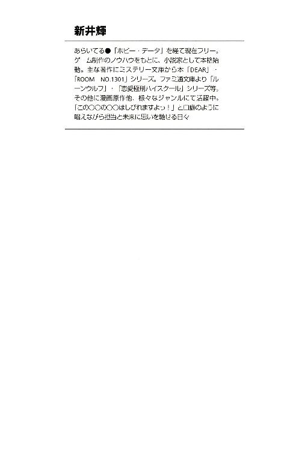
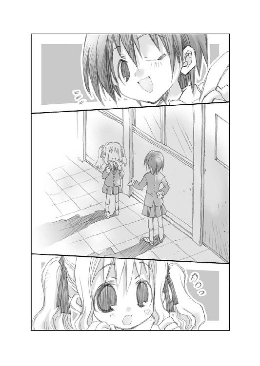

| DEAR DIARY 寝起きの悪い定休日 (富士見ファンタジア文庫) | |
| 新井 輝 & 久瀬 たかし & 季遊月 あすか | |
| 富士見書房 (2012) | |

DEAR DIARY 1
寝起きの悪い定休日
新井 輝

富士見ファンタジア文庫
本作品の全部または一部を無断で複製、転載、配信、送信したり、ホームページ上に転載することを禁止します。また、本作品の内容を無断で改変、改ざん等を行うことも禁止します。
本作品購入時にご承諾いただいた規約により、有償・無償にかかわらず本作品を第三者に譲渡することはできません。
本作品を示すサムネイルなどのイメージ画像は、再ダウンロード時に予告なく変更される場合があります。
本作品は縦書きでレイアウトされています。
また、ご覧になるリーディングシステムにより、表示の差が認められることがあります。
口絵イラスト 久瀬たかし
本文イラスト 季遊月あすか
口絵デザイン 朝倉哲也
プロローグ──トーカの朝
その世界にも時間は流れ、朝が来て一日が始まる。
窓際のベッドに差し込む朝陽を浴びて、トーカは目を覚ます。同室で暮らすヒーロと呼ばれる少女の『天使』よりもいつも早いのは、きっとその始まりを告げる灯のせいだ。
「朝だよ、ヒーロ」
トーカは眠い目をこすり、まだ日差しの届かないところにいるルームメイトを起こす。
「......おはよぉ」
ヒーロはベッドに寝ころんだまま、どこか別のところに返事をしたようだった。まだ意識がハッキリしておらず、トーカがどこにいるのか気づいてないのかもしれない。
「おはよう、ヒーロ」
それでトーカはベッドから下りると、ヒーロの方に近づく。
ヒーロはトーカの先輩だが、小学生のような外見のトーカよりも、さらに幼い外見をしていた。なのに、やはり外見に相応しい言動をしている。
「もう、朝なの？」
「うん。そうみたい」
トーカはそれで明るい窓の外を示す。そこにあるのは太陽と空と雲。でも雲は目線よりも下に拡がっている。だからそれは海のようにも見えた。
「ふぃー」
ヒーロは空気の抜けたような声をあげて、目をこする。ちゃんと起きる気になったらしいとトーカは思い、自分はトコトコと洗面所の方へと移動する。
「そういえばさあ、最近、トーカのお姉さんたちのセクションは安定してきてるよね」
そんなトーカを呼び止めるようにヒーロが話を始める。それでトーカの足が止まる。
「ああ、うん。皆のおかげで、ここ一か月くらいは事故らずに済んでる」
トーカはそれで振り返って、ヒーロに返事をする。少し心配そうな顔をしたのかもしれない。間を置いて、ヒーロが少し大げさにニッコリと笑うのが見えた。
「主任はなんて言ってた？ もう大丈夫だって？」
「エイミさんは、もう少し様子を見ないとじゃないかなって言ってたけど」
トーカはヒーロの言った『主任』という言葉を敢えて、エイミと言い換えた。それはなんとなく役職で言うべき場面じゃないように感じたからだ。
「そっか。今度こそ、上手く行くといいね」
ヒーロはそう言って、ピョンとベッドから下りると立ち止まったままのトーカを追い抜くように少し足早に洗面所に向かう。
「うん。でもきっと大丈夫だよ、正吾君や皆は見つけられると思うから。もっと多くの人がハッピーになれる運命があるはずだから」
「そうだね。見つかるといいね」
ヒーロはそう言って笑うとトーカより先に洗面所に向かう。
「じゃあ、お先にぃ」
「あ、ずるいよ、ヒーロ」
トーカは小さく苦情を言うが、ヒーロは鏡の前で自分の様子を確認し始める。
「私の方が色々準備が遅いんだから、顔くらい先に洗わないとトーカちゃんを待たせることになるしね」
「今、そのせいで待たされてるんだけど」
「......それはそうだね。あはは」
ヒーロは笑いながらタオルで顔を拭いて、ブラシを持つと一歩下がる。トーカはそれを見て、自分も顔を洗うことにする。
「大丈夫だよ。きっと見つかるよ。もっと多くの人がハッピーになれる運命が」
洗面所に立ったトーカの後ろからヒーロが話しかけてくる。
「そうだね」
トーカはヒーロが心配してくれてるのかなと思いながら、そう答えて笑う。それは少しわざとらしかったかもしれないが、ヒーロはその笑顔に満足したようだった。
「まだもう一回あるんだし、頼れる仲間も増えてきてたし、心配するようなことじゃないと思うよ。でしょ、トーカちゃん？」
「そもそも話題を振ってきたのはヒーロの方なのに、私が相談したみたいな言い方はちょっと変な気がする」
「......あれ、そうだっけ？ あはは。そう言えばそうだね」
ヒーロは少し軽い声で笑う。トーカはそんなヒーロを鏡ごしに見て、それから自分の顔に視線を移す。
──顔に書いてあったってことなのかな？
トーカは手を水につけて、それから顔を洗う。それで悩みや心配が消えるわけもなかったが、そうだったらいいなと思って。
「今日も頑張ろうね、一緒に」
そこに届くヒーロの声。そしてタオルで拭いた自分の顔が笑っていることにトーカは気づいた。
「うん、頑張ろうね。一緒に」
だからトーカはそう答えて、今度は歯ブラシに手を伸ばした。
カバーガールは似合わない
春なのにどしゃぶりの雨。思えば、それが兆しだったのかもしれない。
「あちゃー、この季節に夕立ってこともないでしょうに」
千尋はバイトを終えて帰ろうとして、外がかなりの大雨だと気づいた。
廊下のつきあたりの窓の外は夕方というには早い時間なのに暗く、雨の反射のせいなのか霧が立ちこめたような少し白んだような景色が広がっていた。
傘は持ってこなかった。朝の天気予報で雨が降るとは言ってなかった。だから、降るとしてもそう長くは降らないんじゃないかと思ったりもする。
千尋のバイト先である出版社から最寄りの駅までは五分くらい。小雨なら一気に行ってしまってもいいが、この降りだとずぶ濡れになるのを覚悟しなければいけなさそうだった。
「ま、いっか急がなくても」
しかしそんな時、無理をしないのが千尋の流儀だった。千尋はしばし空を眺めると、やっぱりまだ止みそうにないなと思い、外に出るのを諦める。
「最悪、編集部に戻ればいいしね」
千尋はとりあえず打ち合わせスペースに陣取ることにした。
編集者が来客と話すための机と椅子。それがいくつも仕切られて並んでいるが、今は誰も使っていない。
雨が止むくらいの時間なら座っててもバチは当たらないだろう。千尋はそう考えて、実際にそこに座る。そしてぼーっとしているのもどうかと思い、自分の鞄の中から行きがけに受け取った現像したばかりの写真を取り出した。
「あら、千尋、帰ったんじゃないの？」
何枚も見ないうちに、そんな声がして千尋は振り返る。
「あ、編集長......」
そこに立っていたのは蒲田伊万里だった。千尋がバイトをしている編集部の一番偉い人だ。
伊万里は出版社でもやり手として知られる女性のようだった。実際の年は知らないが、まだ二十代後半か行ってても三十前半。そのくらいの年なのに、出版社でもかなり力を入れている女子高生向けの情報誌の編集長をしている。
茶系のスーツを着ているわりには少し若作りしている感もあるが、それもこれも彼女の『自分がオシャレじゃなくて、人にオシャレの話ができるか』という持論によるものらしい。
とにかく仕事には厳しい人間だな、それが千尋の評価だった。でも別にピリピリしている様子はなく、どっちかというと悠然と構えているのに、油断しているといきなりそれを指摘する。そんな人だった。
──怒られるかな？
だから伊万里がこっちを見た時、千尋はそんなことを思った。勝手に打ち合わせスペースを使っていたのだから、怒られるだけのことをしているという自覚もある。
「それ、千尋が撮ったの？」
しかし伊万里は怒ったりせず、千尋の向かいに座ると彼女が見ていた写真に興味を持った様子を見せるだけだった。
「あ、はい。この間、友達と一緒に遊びに行った時に撮ったんですけど......見ます？」
千尋はそう尋ねながらも返事を待たず彼女に写真を渡した。わざわざ興味を持って話しかけてきたのに見ないなんて、そんな無駄をするような人間ではなかろうと思ったからだ。
「ありがと」
伊万里はそれだけ言うと写真を受け取って、上から順番に見て行く。
「ふーん」
五枚目くらいを見た時、伊万里はそう呟いて、その写真を千尋の方に見せた。
「これ、千尋の彼氏？」
そしていきなりそんなことを尋ねてくる。
そこに写っていたのは正吾だった。彼が嬉しそうに笑っている写真だ。
「な、何を言いだすんですか......そんなんじゃないですよ」
千尋はうろたえてしまう自分を感じながらも、慌てて伊万里の言葉を否定する。
「あれ？ 違うの？ あ、じゃ、片思いの相手？」
伊万里はしかし千尋の言葉に笑うと今度はそんなことを言い始める。
「......何を根拠にそんなこと言うんですか？」
「だって、他に比べてかなり気合い入ってるし。写真にはそのモチーフもそうだけど、それを撮った人間の気持ちもこもるものだから。こっちの子に比べると、随分と愛を感じちゃったかなあ、私は」
そう言って伊万里は別の写真を千尋に見せる。それは貴博が恥ずかしげもなくピースをして笑っているものだった。
「......そういうもんですかねえ」
千尋は否定も肯定もしないように慎重にそう呟く。それで伊万里は小さく笑い、また視線を写真の方に戻した。
「ほう」
少し驚きの声が上がって、また伊万里の手が止まる。興味深い写真でも見つけたのかと思い、千尋はそれに反応する。
「また、何か？」
「......いや、勝手に想像して盛り上がってるだけだから」
伊万里は笑うのを我慢しているような顔をしながら、見ていた写真を机の上に置いて、次の写真に目を移す。
「......む」
しかし千尋の方はその置かれた写真が何か気になり、そっちを見てしまう。
それは秋葉と正吾の写真だった。正吾が秋葉からジュースを渡されているところだ。それを見て伊万里が何を思ったのかは......尋ねない方が良さそうな気がした。
「この子は誰？」
伊万里はそんな千尋の考えとは無関係に、自分の興味を満たそうとしているらしかった。また一枚写真を取り出して千尋に見せる。
「うちの弟ですよ。一尋って言って、私の一個下」
「弟さんか。可愛い子よね。千尋、今度、この子を連れて来る気ない？」
「......連れて来てどうするんですか？」
「上の階のヤツらに会わせようかな、とか」
伊万里は顔を上げて天井を見るような仕草を見せて、すぐにまた千尋の方を見る。
「上の階......」
言われて千尋は伊万里の言いたいことがわかるような気がした。
この上の階には別の本の編集部があって、そこでは男子の学生向けの情報誌を作っている。それを考えれば、伊万里はその本のモデルなりに一尋を使おうと言うのだろう。
「ダメ？」
千尋が察したのを理解したのか、伊万里は説明らしい説明もなく、いきなりそんなことを尋ねる。こういう会話と頭の回転の速さはさすがと思わされる。
「一尋はそういうのあんまり興味なさそうですね。一応、聞いてみます？」
千尋はそれで伊万里がなんか機嫌を悪くするかもなと思ったが、正直なところを口にする。しかし不安をこらえて言ったのに、伊万里はあっさりとした感じだった。
「興味ないならいいや。別に私の仕事じゃないしね」
「......そういうもんですか？」
「いや、自分で言ってから、どうせなら自分の本で使う方が健全かなと思ったりしたの」
伊万里はくるくるとまだ何か頭の中で考えているようだった。
「一尋をどうやって使うんですか？」
「まあ、可愛い男の子のページってのもアリでしょ。でも、とりあえず保留」
伊万里はそれでひとり納得したのか、また次の写真を見る気持ちになったようだった。そしてしばらく次々に写真をめくっていく。その手の動きが少しずつ早くなっていくのがわかった。
しかしそれが急に止まって、じっと彼女がその一枚に見入る。
「この娘も千尋の友達？ 女の子の方」
そう言って伊万里が千尋に見せたのは、一美の写真だった。途中で合流した時の、彼女の髪が乱れているのを貴博が直しているところを写した一枚だった。
「一美さんは友達の彼女なんで、友達って感じかどうかわからないですけど」
「でも知り合いは知りあいと。仲はいいの？」
「一美さんとですか？ どうかな......仲が悪いってことはないですけど、あんまり話したりしないですから」
「ふーん」
伊万里はそう言いながらも何か考えているようだった。そしてその口元に笑みが浮かんだのに千尋は気づく。そしてその意味を千尋は考えてしまう。
「あの、もしかして......」
「うん。この娘にさ、モデル頼めないかな？」
伊万里はずっと前からそう思っていたかのような迷いのない口調でそんなことを言い出す。
「うーん。将来の夢は女優らしいですから可能性はありますけど」
「でも、表紙モデルとかしたがるタイプではないかもしれない？」
伊万里はそれでも余裕の笑みを浮かべて言葉を続ける。
「......表紙モデル？」
「そそ。次の次くらいの表紙、この娘でどうかなと思ったんだけど」
「それまた随分と急な話ですね？」
「まあ、今、決めたことだから」
伊万里はそれで千尋から視線を外すと、他にも一美の写真がないか探し始めたらしい。机の上に写真を拡げて、その中から拾い上げていくのが見えた。
「......それって本気なんですか？」
「そりゃ、そうよ」
伊万里は一美の写真を確かめるように見ながら、そのまま返事をする。
「でも会ってからとか、そういう段取りとかないんですか？ いきなり決めちゃっていいんですか？」
「必要？ 私はこの写真を見ただけでイケルって思ったし、悪い娘ではないんでしょ？ 千尋の友達の彼女なわけだし」
「......まあ、いい人ですよ。綺麗だし」
「じゃ、そういうことで明日にでも話しておいて」
伊万里はそう言うと一枚写真を選んで、それを千尋に見せる。
「これ一枚だけ借りていい？ 編集部の連中に見せないとだから」
「それはいいですけど......」
千尋はそう答えながら、胸の中でもやもやと不安が渦巻くのを感じた。それを見て取ったのか伊万里が少し大きく笑う。
「大丈夫よ、千尋。私、人を見る目には自信があるから」
「......でも、一美さんが引き受けてくれるかどうかもわからないし」
千尋が弱腰にそう呟くと、伊万里はニッコリと笑う。
「それはあなたの仕事でしょ、千尋」
「でも......けっこう意地っ張りな人なんですよ」
千尋はそれでも食い下がろうとするが、伊万里はもう次の行動を始めているようだった。立ち上がり、その場を去ろうとする。
「............」
それに千尋が気づいて、もう言ってもしょうがないのかなと思った時、伊万里は思い出したように振り返って千尋に話しかけてきた。
「私、仕事が出来る人が好きなの。それは知ってるわよね、千尋」
千尋はその言葉にもう選択肢はないのだなと思うしかなかった。
○
「......表紙モデル？」
一美が露骨に怪訝そうな顔をするのがわかった。
そりゃなんの前触れもなく、登校中にそんな話をされたら誰でもそうするだろう。千尋は自分でもそう思うのだが、しかし編集長の言葉を思い出すと一美のその表情に負けてはいられないと考えるしかない。
「私、今、出版社でバイトしてて、そのバイト先の編集部の編集長が一美さんを表紙モデルに使いたいって......言ってるんですよ」
千尋がそこまで言い終えると、一美は今度はちょっと力のない笑みを浮かべたようだった。
「噓をついているんでしょ？──とまでは言わないけど、もう少しこうリアリティが欲しいかなって思うかな」
「でも、本当なんですよ。一美さんがやる気があるなら、一緒に出版社まで来てもらって編集長にちゃんと話してもらいますから」
「うーん。でも私、そういうのはちょっとね」
そう言って一美は少し歩くのを速める。
「ちょっと、なんですか？」
「気が乗らないかな」
「そんなこと言わないで、引き受けてくださいよ。一美さんは将来、女優になるんでしょ？ だったらこういうチャンスを生かさないと」
「それはそうかもしれないけど......突然だし。それに照れるわ、そんなの」
「じゃあ、もう少し待てばいいんですか？」
「......そうかもしれないし、そうじゃないかもしれない」
一美は曖昧にそんな答えを口にして、また歩く速度を上げる。それに気づいて千尋は少し小走りに一美を追い抜くと彼女の前に立つ。
「そんな答えじゃ納得いかないんですけど、一美さん」
言われて一美は立ち止まるとじっと千尋の顔を見つめて口を開いた。
「そういう話を引き受ける自信が持てるようになるか、私だってわからないってこと。人に見られる仕事をしたいから、逆にそういうことを適当に引き受けたくないのよ」
「......それはわかりますけど」
千尋はハッキリと一美に否定されたようで、少し気分が沈むのを感じる。そこに一美が少し間を置いて話しかけてきた。
「真鶴さんの立場はわかってるつもりよ？ 私のことを説得するように言われたってことは、私が断ったら真鶴さんの立場が悪くなるんだろうなあってことくらいは理解してる」
「......だったら引き受けてくれてもいいじゃないですか」
「でも私は私でこの件に関しては真剣なのよ。だから心の準備が出来るまでは、真鶴さんの頼みであっても引き受けるわけにいかないの。それはわかって」
そして一美は本当に申し訳なさそうな顔をして小さく頭を下げたようだった。
「......はい」
千尋はそれで諦めた訳ではなかったが、一美をこれ以上、困らせてもしょうがないと思い、話を終えるしかなかった。
○
千尋は教室で友人たちが登校するのを待っていた。そんなところに最初にやってきたのは貴博。千尋は彼の登場に目を輝かせると、事情の説明をする。
「一美を表紙モデルにねえ」
一応の事情を理解した貴博だったが、あまりテンションが上がってる様子でもなかった。
「貴博も一美さんが表紙モデルなんて鼻が高いでしょ？」
千尋はそう言って貴博の興味を引こうとするが、どうも貴博は別のところを見ているかのような発言を始める。
「まあ嫌だってことはないけど、別にファッションのために一美と付き合ってるわけじゃないしなあ。そんなことで一美の価値が変わったりはしないだろ、実際」
「貴博がもう一美さんにこれ以上ない程メロメロなのはわかったけど、そんなこと言わず、貴博の方からモデルを引き受けてくれるように説得してよ。私を助けると思って。ね？」
「......そんなこと言ってもなあ」
「あ、なに？ その冷たい態度？」
「いや、俺も千尋が困ってるって言うなら協力を惜しむ気はないんだけどさ」
「じゃあ助けてよ」
「でもなあ......」
「でも何？」
「一美がこの手のことで俺の話を聞くようなヤツだと思う？」
「......ぐ。そう言われると、そんな気がする」
千尋はそう呟き、貴博にちょっと失礼かななんてことも思ったが、彼の方は自嘲ぎみな笑顔を浮かべて、これ以上言ってくれるなという態度を見せた。
「アイツの説得を頼むならさ......正吾の方がいいんじゃないのか？ 頼りになるかどうかイマイチわからんところはあるけど、俺は頼りにならんこと確定だし、正吾は時々なんかミラクル見せるから、なんとかなったりするかもしれないぜ」
「ショーゴか......」
千尋がその可能性を検討して腕を組んだ時、ちょうどその正吾が秋葉と一緒に登校してきた。それで千尋は二人の側に駆け寄り、事情を説明する。
「一美さんが表紙モデルにですか？」
秋葉は驚いた様子を見せたが、しばらく考えて納得したようだった。小さく何度かうなずいて、それから正吾の方を見る。
「正吾君はどう思います？」
「うーん。似合うんじゃないの？ 市ケ谷先輩、やっぱ格好いいし」
「そうじゃなくて......」
千尋は脱力しながら、二人の会話に割り込む。それで正吾が不思議そうな顔をするのを見る。
「あれ、そういう話じゃないわけ？」
「いや、まあそういう話でもあるんだけど、ショーゴの方から説得してくれる気はないのかなってこと、なんだけど......」
「でも千尋が話してダメだったんだろ？」
「まあ、ね」
「だったらダメなんじゃないかな」
正吾はそうあっさりと言うと、自分の机の方に歩いて鞄を置く。
「......もう少し可能性を検討するとかないわけ？」
「だって一美さんが嫌だって言ったんだろ？ だったら説得できるとかできないとかそういう問題じゃない気がするんだよな」
正吾がそんなことを言うので千尋は助けを求めて秋葉の方を見る。
「......秋葉も同じ意見なの？」
そして秋葉は困った顔をして、少し申し訳なさそうに口を開いた。
「同じというか......正吾君がそう言うならそうかなって思うんですけど」
「......むぅ」
千尋は秋葉の言葉を思い出しながら、まだ登校中の生徒がいる廊下を歩いていた。
一美の説得が上手くいかないかもしれないという不安。その助けを求めて秋葉に正吾との仲の良さをアピールされたのはかなりのダメージだった。
「秋葉はあれで天然っぽいところもあるし、悪気はないんだとは思うんだけどさ」
千尋は独り小さく呟いて、特にアテもなく廊下を歩いていく。一応、最初はトイレを目指すというつもりだったが、正直言えば秋葉と正吾の側に居続けるのが辛くなっただけだ。
「ま、秋葉は正吾の彼女だし、のろける資格もあるんだよね」
でもさすがに時と場所をわきまえて欲しいなと思わずにはいられない。それは理不尽な思いなのかもしれないが、秋葉だって千尋が正吾のことをどう思ってるのか少しくらいは気づいてるはずだ。なのに、あのタイミングであんな風に言われたら......恨み言の一つも言いたくなってしまう。
「でも、そっちは今日に始まったことじゃないし、どうにかなるってわけでもないか。ってことはやっぱり一美さんの方か......」
千尋はそう呟きながら意識的に考える対象を変えるというか、元に戻そうと思う。
実際、正吾と秋葉の関係に不機嫌になるのは不毛なのだから。
「でも......あんまりしつこくしても逆効果っぽいし、やっぱり私ひとりじゃ無理かな」
そう呟いてから千尋は伊万里の言葉を思い出す。
「私、仕事が出来る人が好きなの。それは知ってるわよね、千尋──か」
マイペースで何を考えているかわからないところのある伊万里の言葉ではあったが、こればっかりはあまり疑いの余地はなさそうだった。
仕事のできないヤツならいらない。千尋は伊万里の言葉をそういう意味だと思った。それは一美の説得に失敗したらクビにするという宣告ということだろう。
伊万里は一枚の写真を見て、一美を表紙に使うとか言い出すような人間である。それに比べれば使えないバイトを一人クビにするくらいの決断はいかにも簡単だろうという気がする。
「はぁ......なんで自分が撮った写真を気に入られたのに、こんな目に遭ってるんだろ」
千尋はため息をついて、少し窓際の方によってから立ち止まった。
気づくとトイレの横も過ぎて随分と歩いていたようだった。一組の教室から順に奥に進んで、もう八組の前まで来ていたらしい。
「あれ、真鶴さん、どうかしたですか？」
そんな千尋に気づいたのか、誰かが話しかけてきた。それで千尋は元気なくそっちをゆっくりと振り返る。
「......元気ないですか？」
そこにいたのは一美の妹の双海だった。彼女は一美とは対照的に弱腰ではかなげな印象の女の子だった。
「ああ、そうか双海ちゃんがいたんだっけ」
そして千尋は彼女の顔を見ているうちに、双海が一美に頼みごとをできる数少ない人間だったということを思い出す。
「なんのことですか？」
「双海ちゃんさ、一美さんが雑誌の表紙とか飾ったら格好いいとか思わない？」
千尋はそれで希望を感じながら尋ねる。双海はその言葉に満面の笑みを浮かべる。
「思うです。お姉ちゃんが表紙なら双海は十冊買うです」
「さすが、双海ちゃん。お姉さん想いの良い娘だね」
「双海はお姉ちゃんの妹として当然のことをするまでです」
「それでね、双海ちゃん。私、今、出版社でバイトしてるんだけどさ、そこの偉い人がね、一美さんに表紙のモデルを頼みたいって言ってるんだ」
「それは本当ですか？」
「本当、本当。でね、それでちょっと双海ちゃんに頼みたいことがあるんだけどさ」
「それはお姉ちゃんが表紙モデルをするのに必要なことですか？」
双海のそんな質問に千尋は思わずにやけてしまいそうになる自分を感じた。

「うん。双海ちゃんの方から、一美さんにモデルをするように説得して欲しいんだ」
しかしその言葉を口にした瞬間、双海の表情が急に変わった。さっきまで笑っていたのに、急に怒ったような顔に。
「どうして双海から説得するですか？」
「ど、どうしってって......その......」
「もしかして真鶴さんはお姉ちゃんが嫌がってるのに、表紙モデルをさせるつもりですか？」
そう尋ねる双海は本気で怒ってるようだった。
「いや、その無理やりってわけじゃなくてね......」
「でも嫌がってるですね？ 真鶴さんはお姉ちゃんに断られたから双海に頼んでるですね？」
「......ダ、ダメかな？」
「双海はお姉ちゃんの味方です。だからお姉ちゃんが嫌だと言うなら、きっとやらない方がいいと思うです。それなのに双海に頼もうとする真鶴さんは悪い人ですか？」
「いや、その悪い人......なのかな？」
「とにかく双海はお姉ちゃんの嫌がることには協力しないですっ！ 絶対しないですっ！」
「......だよね」
千尋は双海の口調に圧倒されながら、そう呟くのが精いっぱいだった。
○
「......本当、どうしよ」
結局、放課後になっても上手い手は浮かばず、千尋は家に帰り、居間でため息をつくしかなかった。
千尋は自分でも一美のように華のあるタイプだとは思ってなかった。勉強も特に得意ということもないし、運動もまあ人並みだ。だから地味と思われようがバイトから始めて、出版社で働きたいと思っていたのに......なんだかおかしなことになってしまったなと思う。
遊びで撮った写真を編集長に興味を持ってもらったのはいい。でも、そのせいで千尋は隠していた自分の気持ちをあっさり見抜かれからかわれることになってしまった。
しかもそれだけに終わらず、一美がやっぱり他とは違う存在なのだなと気づかされ、そして彼女を説得しなければいけないことになってしまった。
「ずるいよな、一美さんは」
一美のようになれないからこそ、自分はバイトを始めたのに、今は一美がうんと言ってくれないせいで、そのバイトすら失ってしまうのかもしれないという状況になってしまっている。千尋としても彼女に文句の一つも言いたい気分だった。
もちろん一美が悪いわけではないことはわかっている。彼女の方にはなんら義理はない。千尋の上司の都合など知ったことではないのだ。一美には一美の夢があり、そのための彼女の判断はきっと正しい。でも今の千尋にとっては、そんなことすら「ずるい」と思えてしまう。そういう正しい判断をして、それを実行に移せることそのものが、千尋にはない一美の能力のように感じるからだ。
「美人で頭も良くて、運動もできて、彼氏もいて......全部持ってるんだから私に協力してくれてもいいのに」
それは理屈としては全然合ってない気もしたが、でも千尋には素直な感情のように思えた。
自分は美人でもないし、頭もさほど良くない。運動もそこそこで、彼氏だっていない。どころか好きな人はいるのにその人は自分のことを友達と思っており、その彼女は自分の友達だったりするのだ。それは自分で望んだ結果ではあったが、やっぱり楽しいことではない。
そして千尋は自分を、損な性分だなと思う。どうでも良い時はけっこうツッコんだ話もできるのに、いざ本気でやらないといけないって場面になるとつい退いてしまう。
今まではそうだったし、きっとこれからもそうなんだろうと思う。そう考えると今回、バイトの件がどうにかなったとしても、結局はあまり良いことにはならないのかもしれない。
ちゃんとした責任のある仕事を任された時、自分はしっかりとそれをやれるだろうか。今までのように肝心なところで退いてしまったりしないだろうか。
「一美さんはそういうのも見抜いて言ってたのかな、もしかして......」
さすがにそこまで一美が気を回していたとは思えない。でも一美が自分のために今回の話を受けても特に良いことはないのだろうなあという気はした。一美の優しさで今回の件が上手くいっても壁にぶつかる時間が先送りされるだけなのかもしれない。
「どうしたら、いいんだろ、私は......」
そして混乱する頭で千尋はそう呟き、一体自分が何の話をしているのかすらもうわからなくなっていることを自覚した。
「......ん？」
その時、玄関が開いて誰かが家に入ってくるのがわかった。あまり物音が続かないところを見ると母親ではなく、一尋が帰ってきたらしいとわかる。
「チヒロ、なにかあったのか？」
一尋は自分の部屋へは行かず、真っ先に居間の千尋のところにやってきたようだった。
「なにかって？」
千尋はそれで心配かけまいととぼけてみせるが、どこか不自然だったのか一尋は顔をしかめて怒るような目で千尋を睨んできた。
「それが何かはわからないけど、なんかあったんだろ？」
なんだか一尋はイライラしているようだった。そういう言葉を口にするのも面倒くさそうで、今にも怒ってそこからいなくなってしまうようなそんな気配を感じさせる。
千尋はそんな一尋を何度も見たことがあった。でもそんな時の一尋はそうは見えても、決してどこかに行ったりはしなかった。千尋が返事するのを待って、そこにいるのだ。
「......青山正吾じゃないよな？」
一尋が何にも言おうとしない千尋に弱々しい口調で尋ねる。
「ショーゴはあんまり関係ないよ。まあ手伝ってくれなかったとかはあるけど」
「......手伝う？」
一尋は千尋の言った意味を考えるように、その言葉を口にする。
「バイト先の偉い人がさ、一美さんを表紙モデルに使いたいから、私に説得して来いって言い出したんだ。でも一美さんに頼んでみたんだけど断られちゃって......皆にも一緒に説得してって言ったんだけど上手くいかなくて」
「......なるほど」
一尋はそう小さく呟くと、もう一度確認するように千尋を見て、また口を開いた。
「チヒロもジュース飲む？」
「あ、うん」
千尋はそれで自分がノドが渇いているのに気づき、一尋にそう答える。一尋はキッチンの方に歩いていくと冷蔵庫を開けてジュースをとりだし、コップにそそいでそれを持って帰ってくる。
「それでチヒロはどう思ってるんだよ？」
一尋はまたなんだかイライラとした口調でそういいながらコップを千尋に手渡す。
「どう思ってるって？」
「上手くいかないから、それで終わりなのかってことだよ」
「上手くいかないと終わりかもねえとかは考えてたけど......」
「は？」
「いや。上手くいかないと私、バイトをクビになるかもしれないんだよね。バイト先の偉い人は使えないヤツは好きじゃないらしいから。あはは」
千尋はそれで苦笑いを浮かべるが、一尋は怒ったままで笑ってはくれなかった。
「なんか随分な話だな」
「だよねえ。なのにさ、一美さんは事情はわかるけど、協力できないって言うんだよね。まあ、上手くいかないとクビとまでは話してないけど、でも一美さんはわかってるような気がする」
千尋はそれで一美への恨み言を言い始める。それを聞いていた一尋が少し声を荒らげたようだった。
「......随分な話だなって言ったのはチヒロに対してだったんだけどな」
「なんで？」
「考えるべきことは、チヒロがクビになるかどうかってことなのか？」
一尋はそう言ってから、少し落ち着くためかジュースを飲む。
「どういうこと？」
「一美さんが表紙モデルをするかしないかって話だろ？ なのにそこでなんでチヒロがクビになるとかならないとかって話になるんだって言ってるんだよ」
「それは私の方が聞きたいぐらいだよ。そりゃ頼まれた仕事なんだからこなさないといけないとは思うけどさ......」
「だから、そうじゃないって言ってるのがわからないかな」
一尋は大声を発して、それから言葉を封じるためなのか千尋を睨んだ。
「チヒロにとって一美さんがどういう人なのかは知らないけどさ、知り合いなんだろ？」
「まあ、ね」
「だったら考えるべきは、一美さんにとって表紙モデルを受けるのが良いことかどうかじゃないのか？ チヒロが考えるべきことはそれだろ？ 失敗したら自分がクビになるからとかそんな話をするよりも、そっちの方がよっぽど大事なことだろ？」
「......そりゃ、そうだよね」
千尋は一尋の言葉の迫力に呑まれたようにそう返事をしたものの、冷静に考えてもやはりその通りかなと思う。
「それでチヒロはどう思ってるんだよ？」
そしてそんな千尋に一尋はさっきと同じ質問を繰り返す。でもそれは千尋にとっては別の質問のように思えた。
そしてなんとなく千尋は正吾の言った言葉を思い出す。
──だって一美さんが嫌だって言ったんだろ？ だったら説得できるとかできないとかそういう問題じゃない気がするんだよな。
あの時は正吾のことをもう少し協力してくれてもいいじゃないかと思った。でも改めて彼の言葉を考えてみると、実は一尋と同じことを言ってるんじゃないかと感じる。
一美が嫌だって言うなら、説得できるかとかできないとかそういう問題ではない。正吾は協力したくないと言ったわけではなく、一美の気持ちが第一だと気づいていたのかもしれない。
秋葉がその後、正吾がそう言うならそうなんだろうと言ったのも、別にのろけて見せたのではなく、理屈はわからないが正吾の言葉を正しいと感じていたというだけだった気もする。
でも余裕をなくしていた自分はそれが違う意味だと考えることもできず、秋葉を責めるくらいしか思いつかなかった。そんなことじゃ確かに上手くいくはずもなかったのだ。
「それでチヒロはどう思ってるんだよ？」
一尋がまた同じことを尋ねるのが聞えた。どうやら返事がないので聞えていないとでも思ったのだろう。
「私は一美さんにとって、これが良い機会になってくれたらなって......思ってるんだけど。自分の都合もちょっとは入ってるかな」
心に余裕が持てたからだろうか、別の答えが自然と口から出た。それに一尋はもう怒った様子もなく、でも少しぶっきらぼうに答えたのだった。
「だったら、最初からそう言えば良かったんだよ」
千尋はそしてなんだか不機嫌そうな弟を見て、笑っている自分に気づいた。
「だよねえ。それでいいんだよね」
○
らしくなかったな。
次の日の登校中、そんな想いが込み上げてくるのを千尋は感じていた。
突然、編集長に任務を与えられてパニクってた気がする。いつもなら、自分は攻めに回っていたはずだ。一美や編集長の都合に振り回されて、守りに入っていたからダメだったのだ。
自分のペースでことを運ばないといけない。しかも相手の都合を考えた上で。それが自分の、真鶴千尋のスタイルだったはずだ。
先手を打って幻惑して、そしてそのまま勝ちにいく。いつも通りにそうしなければ上手くいくはずもなかったのだ。
「......全く、何をしてたんだか、私は」
千尋はそう言って自分がいつも通りに動いているのを確認する。なんだかそれだけでなんでも出来るような気分になってくる。
そんな自分を千尋は単純だなと思うが、でもそれが自分らしいという気がする。
時には噓をつき本心を隠すのも自分だが、そこに本心を織り交ぜるのも自分だ。他人に理解を求めず、でもちゃんと人間関係を築く。それが自分のやり方という気がする。
「......お」
そんな思いを確認している間に、一美と貴博の姿が見えた。今日は二人は一緒に登校する日だったらしい。それで千尋はバッといきなり駆け出して、少し距離をとっている二人に接近していく。
「一美さん！」
そしていきなり一美の背中をバンと叩く。
「......いきなり、何？ もしかして昨日の続き？」
一美は振り返りざま、怪訝そうな顔を見せる。昨日よりも幾分不愉快そうだ。それを察したのか隣で貴博が謝っておけと手で指示をするのが見えた。
「昨日の続きって言うか、そうでないって言うか」
しかし千尋は謝ることなく、少しわざとらしく八重歯を見せて笑う。
「って言うか？」
「あれから色々と考え直しまして、改めて話を聞いて欲しいかなって思ってるんですけど、ダメですか？」
「......ま、いいけど」
一美は少し苦々しい顔をしたが、短く返事をした。隣で貴博がその成り行きに驚いた様な顔をするのが見えた。それで千尋は勇気を持ってさらに話題を続ける。
「私、一美さんは表紙の話受けた方がいいと思うんです」
迷いなく自信を持って、ハッキリとした発音で千尋はそれを告げると、ニッコリと一美に向かって笑って見せる。
「......なんで？」
一美が少し眉を寄せてそんなことを聞いてくる。
「多分、良いキッカケになると思うんですよ。これを機に一美さんが一気に有名になるようなそんな展開じゃないかなって。だからせっかくなんで表紙モデルの話受けましょうよ」
「随分とまた強引な話ね」
一美は呆れたように呟くが、特に不快には思ってないようだった。
「ま、一美さんなら他にもチャンスがいくつも転がっているかもしれないですけど、でも今回の話が間違いなくチャンスってのは私、確信してるんです」
「なんで？」
「編集長が写真一枚見ただけで一美さんのことを使おうとしたから、かな。私、その時はそんなあっさり決めちゃっていいのかなって不安になったんですけど、今考えると逆ですよね。それだけで決め手になるほど明らかに一美さんは表紙モデルに相応しかったってことだった。だからあれこれ検討する必要なんてなかったってことじゃないですか」
「あなたって時々、そういうセリフを恥ずかしげもなく口にするわよね」
一美はそう言いながら少し視線をそらしたようだった。それはしかし千尋を相手にしたくなくなったということではなく、気恥ずかしさからに違いなかった。
「でも自分のために適当なこと言って先輩を乗せようとしてるとか、そんなわけじゃないですよ。あれから私も考え直したんです。昨日は上手くいかなかったらクビになっちゃうかなって思ってて、それで一美さんの情けを期待してましたけど、今はそんな必要もないなって思ってるんですよね」
「......どんな心境の変化なわけ？」
「一美さんが引き受けない方が良くて、それでクビにされるなら、私、そんな編集部に固執しててもしょうがないかなって思うんですよ。そこを一美さんのお情けでどうにかしてもらっても意味ないかなって。私、編集長の判断はきっと正しかったと思うし、だからクビになりたくないですけど、引き受けた方がいいなら一美さんはちゃんと話せばわかってくれるだろうし、一美さんの判断に任せるってことでいいんじゃないかなって」
「責任重大ね」
一美はその話を聞いて少し眉を寄せたようだった。そんな様子を黙って聞いていた貴博が少し空いた間に割り込んでくる。
「やりたいなら覚悟決めてやればいいんじゃねえの」
貴博はそう言って笑うとポンと一美の肩に手を置く。それで一美は少し不愉快そうな顔で貴博の方を睨みつける。どうやら千尋が来るまで二人は、表紙モデルの話を引き受けるべきかどうかで話しあっていたらしい。
「......なんで、あんたはそういうこと言うかな、この状況で」
「お前はやりたいんだし、千尋はやって欲しいんだろ。だったら俺はお前の彼氏としても、千尋の友達としてもそう言うのが正しいんでねえのって思ったんだけど、どこかおかしいか？」
「一分の隙もない立派な理論ね、本当」
一美はそう呟きながら貴博をジッと睨み、それから千尋の方を見る。しかしその顔は怒っているというよりは困ってるような表情を見せていた。
「......ダメですか？」
そんな一美に千尋は申し訳なさそうに尋ねるが、一美は一美でやはり申し訳なさそうな顔をしてみせる。
「この期に及んで、ダメって言うと思う？」
一美はそう尋ねて、また少し視線をそらしたようだった。しかしその先で貴博が笑っているのに気づいて、やっぱり千尋の方に戻す。
「じゃ、ＯＫってことですよね？」
千尋はそう笑って確認の質問をする。
「そういうことに......なったみたいね。私で務まるかどうかはわからないけど、よろしくお願いするわ」
一美はそれに苦笑いを浮かべながら、ちょっと頰を赤くしたようだった。
「にひひ。なんか一美さんって美人のくせに可愛くてずるいですよねー」
千尋はそう言って八重歯を見せて笑うと、その言葉に真っ赤になった一美の顔を見て、その思いを確かにするのだった。
○
「やっぱり大したものじゃない、あの娘」
伊万里の段取りの素早さは大したものだと言うしかなかった。
一美がＯＫを出したと報告した時には、伊万里はもうスタイリストに話をつけ、カメラマンのスケジュールも押さえようとしていたところだったという。
そして最初に伊万里が一美の存在を知った時から、二週間後にはもう一美は撮影スタジオでカメラマンの前でポーズを取ることになっていた。
「ですねえ」
千尋はそんな様子を伊万里の隣で見学していた。本来、別に千尋の担当の仕事ではなかったが伊万里が現場を見ておくのも良いだろうと連れ出してくれたのだ。
「ルックスはもちろん勘もいいし、肝も据わってるし。新人ってのはもう少しオロオロとするもんだと思うけど、立派にこなしてるじゃない」
伊万里のそんな評価に千尋は他人事ながら誇らしい気分になるのを感じる。
「ま、演劇部のヒロインですからあの人は。人前に立つのは慣れたもんなんです」
「へえ。演劇部だったの、あの娘」
「あれ、言ってませんでしたっけ？」
「聞いたかもしれないけど、覚えてはいないかな」
伊万里はそれで千尋の方を見て、改めて口を開く。
「そんなことも知らないのに彼女を起用した私は無謀だって思う、千尋は？」
「こうして現場で見てると、正しい選択だって気はしますけど。さすが、編集長って感じですよね、本当」
「千尋も私のやり方がわかってきたみたいね」
伊万里はそれで嬉しそうに笑うと、千尋の頭を子供みたいに撫でてくる。
「なんですか？」
「いや、良い買い物をしたって思って。その確認って言うのかな」
「......それなら一美さんの頭を撫でてくださいよ」
千尋はそれで少し不満を口にする。伊万里が価値を見いだしたのは一美の方なのだから、それで自分を撫でられても嬉しくはない。そう思ったのだ。
しかし伊万里は手を離すと腕を組み、不思議そうな顔をして千尋の方を見る。
「そういう意味に取った？」
そんな質問に千尋は戸惑いながら、なんだか自分がバカにされたみたいな気持ちを感じる。
「他にどんな意味があるんですか？」
「頭を撫でてて、良い買い物をしたって言ったら、その撫でた相手の話でしょ、普通」
「......そうかもしれませんけど」
千尋はなんだか腑に落ちず、しかしどう言い返していいかわからなくなるのを感じる。
「今回だって千尋のおかげでしょう？ 彼女の存在を知ったのも、彼女を説得できたのも。それを感謝するのはおかしなこと？」
伊万里のその言葉自体は理に適っている気がする。しかし千尋はなんだか心の中で引っ掛かるものを感じていた。それを探して考えるうちに、千尋は伊万里が一美との交渉を命じた時の最後の言葉を思い出す。
「......編集長は、仕事が出来ないヤツはいらないって私のことを脅したじゃないですか」
そしてその時の不満を千尋は思い出して口にする。
「そんなこと私言った？ いつ？ 言うはずないんだけどな、そんなこと」
しかし伊万里は全く心当たりがないらしく、目線を少し上げて思い出そうとしている仕草をみせる。
「一美さんを説得するように言った時。最後に振り返ってそう言ったじゃないですか」
「......そういう風に取ったわけ、あの言葉を」
伊万里は千尋の言わんとすることを理解したらしく、苦笑いを浮かべる。
「他にどう取れば良かったって言うんですか？ 『私、仕事が出来る人が好きなの。それは知ってるわよね、千尋』って言葉を──」
千尋はそう言いながら、待てよと思って動きが止まる。あの時はそうだろうと思ったが、違う意味にも考えられるかもしれないという気もしてきた。
それで千尋の言葉が止まった意味を察したのだろう。伊万里が笑って話を始める。
「あの時、言ったわよね？ 私、人を見る目には自信があるって」
「......はい」
「あれは一美さんのことを言ってたんじゃなくて、千尋のことのつもりだったのよ。あなたはたかがバイトだから誰でもいいくらいのつもりで選んだと思ってるかもしれないけど、私はちゃんとあなたと話してあなたを選んだのよ。仕事が出来る人間が好きだから」
「そ、そうだったんですか......」
千尋は言われて、その時の言葉を思い出す。
あれが自分のことを指して使われた言葉だったとすれば──伊万里の言葉は脅しではなく、むしろ激励だったのだ。
千尋ならやり遂げるだろうから、任せると。そう伊万里は言っていたのだ。
「千尋が頼りにならないなら自分で説得に行くわよ。一美さんを逃す気は私には全くなかったしね。自分の直感に忠実に動くのが私のポリシーだから。そういうわけで、誤解してたならご免なさいね。私、いちいち説明するの苦手だから」
伊万里はそしてまた千尋の頭を撫でる。
「千尋。あなたは、もっと自信を持ちなさい。私はあなたが将来、化けると思って雇ったのよ。だからつまらないこと言わない。私は人を見る目に自信があるの。そしてそれは満更、根拠のないことでもなさそうでしょ？」
そして伊万里は視線を一美の方へと移す。千尋はそれを追いかけて、一美を見た。
そこにはプロのスタッフに囲まれながら、堂々としている一美が立っていた。視線があったのに気づいたのか、彼女が笑うのが見えた。
「......でも編集長の期待に応えようとしたら、かなり頑張らなくっちゃかな、私の場合」
「ま、その辺も計算に入ってると思ってくれてもいいけどね」
伊万里はそれでおかしそうに笑うと、また千尋の方を見る。
「そんな千尋にご褒美をあげようかなー」
「なんですか、それ？ 私、ここに連れてきてもらっただけで、大感謝なんですけど」
「欲張りなさいよ。せっかくなんだから、もらえるものはもらっておきなさい。それにしたって私の都合でやってることなんだから」
「はあ」
千尋は少し意味がわからず、短く空気の抜けたような声を上げる。
「モデルの娘が一人辞めちゃってね、代わりを探してたのよ」
「......それって私にモデルやれってことですか？」
「ま、そういうこと。ちょっと女の子らしい格好をしてもらうことになるけど、私を助けると思って協力してくれるわよね？」
伊万里はそう言って少し意地悪そうな笑みを浮かべた。千尋は反論する言葉が出ないのを感じるしかなかった。口調は穏やかだが、もう伊万里はそうすることに決めているのに違いないとわかったからだ。
「たまにはそういうのもいいですよね。あはは」
だから千尋はそう言って、八重歯を見せて笑うしかなかった。
○
「これは随分と扱いが違うんじゃないかな......」
それから二週間もすると、一美が表紙を飾った本は完成した。千尋はそれを受け取ると家に帰り、居間でテレビを見ていた一尋に見せる。
「ま、そりゃ、私は本来、編集部のしがないバイトだし」
千尋はそう言いながら、一尋が少し不満そうなのをなんだか嬉しく思ったりもした。
実際、かなりの格差だ。一美は表紙どころか、巻頭特集でも活躍している。なのに千尋の写真は二枚。しかも八人くらいの女の子が並んでいるページの一枚とかそんな扱いだ。
「そりゃ、そうだけどさ」
一尋はそれでも本を閉じたり開いたりしながら、その格差を確認してまた渋い顔をする。
「私は一番にならなくていいっていうか、なりたくない人だから、これでいいんだよ」
「......ま、チヒロがそう言うなら良いけどさ」
一尋はそう言いながらも不愉快なのか、本を千尋に返してもまだ憮然とした顔をしていた。
「私は皆に見られなくてもいい。ちゃんと見てくれている人がいれば、それでいいって言うかな、それがいいんだ。編集長がちゃんと認めてくれているってわかっただけで私は満足」
千尋は強がりでも言い訳でもなく、本心、そう思っているのを自覚していた。
自分の写ったこの写真に誰もが目を留めるということはきっとないだろう。でも本を渡してくれた伊万里が満足そうに自分の写真を見せてくれただけで、本当に嬉しかった。
一美のようにはなれないけど、それでいい。伊万里はもっと欲を持てと言うかもしれないが、それは一美のようになれという意味ではないだろうと千尋は思う。
それに──と千尋は考える。
表紙に使われた写真。そこに写る一美の笑顔に千尋は見覚えがあった。伊万里と話している時、一緒に一美を見た時の笑顔だ。千尋が見ているのに気づいた時に、一美が浮かべた表情がそこにはあったのだ。
そのことを確認しても一美はきっと口では否定するだろうと思うし、そのことを千尋は誰かに話す気もなかった。でも、自分がいたからこの表紙が出来たんだと誇らしく感じるくらいは許して欲しいかなと思う。
「それっていつ発売？」
そんな千尋に一尋が不意に聞いてきた。
「来週の月曜日かな。コンビニとかでも並ぶはずだから、かなり目立つと思うよ。って、そんなことを聞いてどうするわけ？」
「......買うんだよ。それ以外に発売日聞く理由なんてないだろ？」
「女の子向けの雑誌だよ？」
千尋はそう言いながらも、一尋が応援してくれているのかなと思う。
「......良いだろ、別に。女の子向けの雑誌買ったってさ」
一尋はそれでもそんな風な言い方ではぐらかすだけだった。それで千尋はふと思い出し、一尋に改めて話題を切り出す。
「そう言えば、あの時、一尋がアドバイスをくれたから、この本が出せたんだよね。ありがとう、一尋」
「そうだったかな......」
一尋はなんだか居心地悪く感じたのか立ち上がると、その場から去ろうとする。千尋はそれを止めて話を続ける。
「だからご褒美をあげようかなって思うんだけど、何がいい？ バイト代も出たし、なんか欲しいものがあるなら買ってあげるからさ」
千尋の言葉に一尋はジッと千尋の顔を見て、それから視線をそらした。
「別にいいよ。自分の欲しいものくらい、自分で買う」
「でもお礼くらいさせてよ、ね、一尋。私を恩知らずのダメ女にする気？」
「そういうつもりはないけどさ......俺、そういうの好きじゃないから」
一尋はそれで千尋の方を見ると、泣きそうな表情を浮かべる。
「......そうなの？」
千尋はなんで一尋がそんな顔をするのかわからず、当惑しながら尋ね返す。
「チヒロがそうしたいってなら、そうさせてやりたいけど、姉弟でそんな話するの俺は違うと思う。普通の姉弟はきっとそんなこと言わない」
「そうかな......」
千尋はそう言いながら、なんとなく一尋が意固地になっている理由がわかる気がした。
普通の姉弟。その言葉に一尋が以前から固執しているのを感じたことがあったからだ。
「家族ってのは助け合うもんだろ。俺はチヒロが困ってるみたいだから助けた。それだけでいいだろ？ 俺は『ありがとう』って言葉だけでいいよ」
「そっか。じゃ、もう一度だけ、言わせて」
千尋はそれで一尋が虚をつかれたという表情を浮かべた隙をついて、その言葉を口にする。
「ありがとね、一尋。私、一尋が弟で良かった」
一尋は言われてどう反応していいか固まったみたいだった。
「な、なに言ってんだよ......」
でも千尋はそんな一尋が可愛いなと思って嬉しくなると、声を出して笑ってしまう。
「一尋って、かわいいよね、そういうとこ」
「なんだよ、人に感謝しておいて笑うことないだろ？」
一尋はそう言いながら、でもさっきよりは居心地の良さそうな顔をしたようだった。それで千尋はきっと一尋が望んでいるのはこういう関係なんだろうなと思い、今はこれでいいんだと思うことにする。
「でもおっかしいんだもん、一尋がさ。あはは」
それで千尋は母親が帰ってくるまで笑いながら一尋と会話を続けたのだった。
「......なんなんだよ、全く。本当は全然感謝してないだろ」
一尋はあんまり笑わなかったが、千尋はきっとそれでいいんだろうと思っていた。一尋はそう言ってムスッとしているのが似合っている。そんな気がしていた。
大人になれない日曜日
いつかと逆のシチュエーションのような気がした。
突然、彼はやってきたのだ。ゲームをしていた正吾の元に。
「貴博？」
まだ日は暮れていない時間だが、貴博の顔はひどく暗く見えた。
日曜日の昼下がり。デートをしてるはずの友人が家にやってくれば、正吾がいくら鈍いと言っても何かがあったのだろうと思うくらいはできる。
風が冷たかった。季節はまだまだ冬だ。だから寒いのは不思議はないが、それ以上にやはり貴博の視線が寒かった。何か暗いオーラを漂わせている。
「............」
無言の貴博。それを見るだけで大体の察しはつく。
デートの相手、市ケ谷一美とケンカしたのだろう。その理由もまあ予想がつく。
最近、デートの前となれば貴博の言うことはいつも決まっていた。
一美との関係を次の段階に進める。こればかりだ。だからこの無言は、それが失敗に終わったということを意味しているに違いなかった。
「......ま、立ち話もなんだし、入れば？」
それでも正吾はとりあえず、何か言いたそうにしながら黙っている友人にそう告げると、自分の部屋へと案内した。
「......乃木坂は？」
意外というかなんというか、貴博の最初の言葉が正吾の彼女のことだった。正吾の部屋に入ったせいか乃木坂秋葉のことを思いだしたらしい。
「秋葉は今日は家族で買い物だってさ」
正吾は何の気なしにそう答えると自分はベッドの上に座り、貴博には勉強机の椅子に座るように仕草で示す。
「そういうもんかね」
貴博はそう呟くと椅子に座り、肘をついて正吾の方を不機嫌そうに睨む。その視線の意味が気になり正吾が尋ねる。
「どういう意味？」
「いや、お前はなんか余裕だなって思ってさ」
「余裕なのかな？ その辺はよくわからないけど」
正吾はとくにトボける意図などなく、自然にそう答える。機嫌が悪い時の貴博はなんだか無性に人に絡む癖がある。正吾はいつものそれだろうと感じていた。だからあまり真に受けても会話にはならない。そう判断して、正吾は自分から話題を振る。
「......で、どうしたんだよ、一体？」
貴博がそれに少し眉を寄せてじっと正吾を睨む。何か言いたそうだが、それを我慢したという空気が正吾にも伝わる。
でも正吾は貴博の言葉を待った。貴博も心の準備が必要だろうと思う。
それで改めて貴博を見ると、本当に荒れているのかなと感じる。走ってきたのだろうか、髪が乱れたままだった。コートは脱いでベッドの上に放り出してあるし、その辺でもやっぱり冷静ではないのを正吾は感じる。
「............」
待っていても貴博は何も言おうとしなかった。正吾はそれで仕方なく、彼をじっと見つめる形になってしまう。
「ま、一美とのことなんだけどな」
一分くらい待っただろうか。貴博がやっと口を開いた。
「まあ、それ以外はちょっと考えつかなかったけど、何がどうなったわけ？」
「どうもならなかったってのが第一段階。でも、それならまあいつものことだわな」
貴博は吐き捨てるように、そう呟くと正吾の方を見た。それは睨んだというよりは、正吾の反応を確認するためのもののような気がした。
「ってことは、今回はその先があったってこと？」
「そうだよ。じゃなかったら、こんなところでお前に愚痴ってるわけねえだろ？」
「そりゃ、そうだ」
「で、何があったか？ わかる？ 想像できる？」
「いや、全く」
正吾は素直にそう答えた。
ケンカをしたんだろう。それはわかる。その原因が貴博が一美との関係を進めようとしたことにあるのもわかる。しかしそれ以上のことはわからない。なので、下手なことは言わず貴博の言葉に耳を澄ませる。
「デートの途中でさ、クレープを買ったわけだ。それで食いながらちょっと話をしようってことになってな」
「そこでなんか市ケ谷先輩が変なことを言い出したわけ？」
「そう。いきなり、こっちが何にも言ってないのにさ、『今日はエッチは無理よ』とか吐かしやがった。信じられるか？ クレープ食いながら言うことか、それが！」
「......いやまあ、なんか貴博がギラギラしてたから釘刺したのかもしれないし」
正吾は貴博がスゴイ剣幕なので、自分はなるべく落ち着くように努める。一緒に熱くなっても始まらない。それに気づいたのか、貴博も少し抑えぎみになったようだった。
「ま、いい。それはいい。今まで何度もあったやり取りだ」
「......何度もあったのか」
「まあ、クレープ食ってる時は初めてだけどな。とにかく似たようなやり取りはあったから、耐性があった。だからそこでは爆発しなかったんだよ」
「じゃあ、その先があったわけか」
「俺としては『今日は......』って言われても、いつものことだから、なんでいつもそうなのかって尋ねたわけだ」
「それはそれでなんかクレープ食いながらする話じゃない気がするなあ」
「ま、それはそれだ。いいか、問題は次だ。次に一美のヤツが何を言ったかだ」
そう言いながら貴博は一美の言葉を思いだして怒りの表情を浮かべる。
「何を言ったわけ？」
「『そんなにしたいなら風俗にでも行けば？』とか言いやがったんだ。信じられるか？ 俺の疑問にも答えず、悪態をつきやがったんだ」
「......そりゃ、ちょっとヒドいな」
「だろ？ だろ？ お前が俺の立場でもキレるだろ？ 散々お預け食ってる俺にこともあろうに『そんなにしたいなら風俗にでも行けば？』だぜ」
貴博はダンダンと大きな音を立てて正吾の机を叩いた。込み上げてきた怒りを表現しているらしいが、ちょっとはた迷惑な態度のような気もする。
「それで怒って帰ってきたってわけ？」
「......まあな」
貴博はそれで落ち着きのない態度を見せる。怒りを吐き出し、言いたいことも言ってしまったので次の行動を決めかねているのかもしれない。そんな風に正吾は感じる。
「どう思う？」
しかし正吾が何か言う前にそう尋ねたのは貴博の方だった。
「どう思うって言われてもなんか色々、論点があってなんとも」
「じゃあ聞くけど、俺はどうすればいいんだ？」
「また難しい質問だなあ。でも本当にしないと気が済まないなら、市ケ谷先輩が言う通り風俗にでも行くしかないのかもなあ」
「そんなことしてみろ。それはそれでアイツは怒りだすに決まってるだろ？」
「でも何も言わなくても貴博からそういうオーラが出てて、市ケ谷先輩はそれが気になるって言うなら、なんとかしないとだろ？」
正吾のその言葉に貴博は何か考え始めたようだった。それを正吾は今日のデートのことを思いだしているのかと思ったが、どうやら違ったらしい。
「......お前はどうだったんだよ？」
「俺？」
「お前にはそういうオーラを感じないけど、それはどういうことなんだ？」
貴博はギロリと睨むように正吾を見た。でも正吾はアッサリとそれに応える。
「俺は別に秋葉とエッチしたいって思ってないから」
「......は？」
貴博はガクッと脱力した様子を見せた。
「どうしたんだよ、貴博？」
「どうしたんだよじゃねえだろ？ 思ってないって、どういうことだ？」
「いや、そのままだけど。いずれはそういうことになるんだろうなあとは思ってるけど、今は特に、どうしてもしたいって感じじゃないかな」
「......それはそれで問題だろ。そんな話、乃木坂が知ったら傷つくぜ？」
「そうかな？ 秋葉はその辺では怒ってないような気がするけど。正直言うと貴博がいつもそういう話をしてるのを不思議に思ってたんだよなあ。なんでそんなに、いつもしたがってるんだろうって」
「なんでもなにも、そういうもんだろうが。健全な男子なら彼女が出来たらどうやって持ち込もうかって考えるんだよ」
「じゃあ、俺は健全な男子じゃないんだろうなあ」
正吾は別にトボけるつもりもなく、そう呟く。
「そういう納得の仕方もどうかって思うけどな、実際」
「でも、そうとしか言い様がないだろ？ そういうもんなんだから」
「じゃあ聞くけど、乃木坂以外とはどうなんだよ？」
「秋葉以外とって？」
「だから乃木坂以外のヤツとしたいとか思うのかってことだよ」
「思うわけないだろ？ そういうのは愛しあってる二人がすることなんだから」
「......うむぅ。お前の価値観もなんか珍妙な気がするが、それはつまり乃木坂に色気がないのでその気にならないということではないんだな？」
「そりゃそうだ」
「しかし本当にそういうことをしたいって思わないのか？ たとえ、チャンスがあったとしてもしたいって思わないわけ？」
「うーん。そうだなあ」
正吾はそう言って頑張ってそう思えそうなシチュエーションを考えるが浮かばない。
「思わない気がする」
「......なんで？ さすがになんか変だろ、それは」
「そうかなあ？」
「さすがに俺としてもなんの理由もなしには納得しかねる」
「そんなこと言われてもなあ......」
正吾はそれでなんか理由っぽいものを探して自分の記憶を探る。
「ああ、優姉のせいかもしれない」
それで思い当たったことを口にする。
「優姉って、あの優子さんのことか？」
貴博はそう言って優子のことを思い出してるようだった。優姉とは正吾の従姉の高島優子のことだ。眼鏡をかけた少しぼーっとしたところのある十八歳の予備校生である。
「そそ。昔、優姉にさあ、そういうことは大人になってからするもんだって言われてさ、ああそうなんだって思った記憶がある」
「......それで以来、そう思いこんだってことか？」
「多分、そうなんじゃないかな」
正吾は他にそれらしい記憶もないので、素直にそう応えた。
○
「......なんだかなあ」
貴博が正吾の家を出たのは夕方頃だった。愚痴を聞いてもらうつもりだったが、正吾になんとなく毒を抜かれた。そんな気分だった。まあ怒りが収まったという意味では目的が叶った気もするが、どうにも何か心の中で抜けきれなかったものが渦巻いてる感じも残っている。
貴博はそのモヤモヤした黒い心の闇を感じながら、家に帰るしかないかなと考える。
この手の話となると相談相手というのも難しい。それなりに親しくなければする気にもならないが、その一方で親しすぎると聞かれたくないというところもある。そういう意味では正吾はあまり適任ではなかったかもしれない。でも時々、何かすごいことをやってのける正吾の天然パワーに期待してたのだろうし、何より深刻な話にならずに済むという気楽さはあった。
「さすがに千尋に相談するってのもイタいしなあ」
正吾の次となれば千尋という考えもあった。しかし千尋はトボけてるようでちゃんと見ている。うかつに話せば、知られたくないことまで知られることになるかもしれない。一美のことを知ってる人間という時点で相談相手としてはやはりよろしくない。それに女っ気はなくても、やはり千尋は女だ。さすがに「風俗に行けと言われたんだけど、どうするよ？」と言うのは気が引ける。
「俺と親しくて、でも普段は付き合いのない奴ってことか......誰だよ、それ」
他の候補を考えてみたりもするが、やはりいそうな気がしない。少なくとも高校に入ってからの知り合いにはいそうになかった。そして貴博は中学時代の友人とは交友を断ってる。当時の親友、大西徹の自殺が原因だ。彼の死は受験を苦にしてのものだったが、貴博はそれに気づけなかった自分が許せず、高校に入ったのを機にそれ以前の生活を捨てるような生き方に変えたのだ。あれから色々あって徹の死については納得できるようになったが、それでも当時の友人たちとの関係を修復しようと思うほど前向きにはなれずにいた。
「中学の時の奴らも、今、どうしてるかわからねえしなあ......それに、こういう時だけ助けてくれって言うのも虫の良い話だよな」
だからやはり帰るしかないかと結論する。
でも貴博は結局、寄り道することにした。ちょうど、公園が見えたからだ。
時輪台南公園。それは一美と初めて話した思い出の場所だ。
「もう半年くらい前か」
一美に会ったのは去年の夏の夜のことだった。彼女が発声練習をしてる声が聞えてきて、なんとなく興味を持ったのがキッカケだった。
公園の中を声の主を探してる間に、発声練習は終わった。そして声の主はセリフの練習を始めたようだった。それでしばらく聞いていた。
それを貴博は格好いいなと思った。それが声のせいなのか、セリフのせいなのか、それとももっと別のことが理由だったのか。それはわからないが、とにかくそう思ったのだけは覚えている。
聞いているだけではなく、その声の主を見てみたいと思って、そして近づいた。
さすがに暇にあかせてそんなことをしているのは不気味に思われるかもしれないと思ったが、一目でもいいから見たいという気持ちの方が強かったのだ。
そして灯の下で演技をしている一美を見かけたのだ。それは公園の中なのに、ステージのようなそんな気にさせる光景だった。公園の灯がスポットライトのように見えた。
「......何かご用？」
ぼーっと見ていたせいだろう。そんなことを言われた。ちょっと近づきすぎたんだろうなと思いながら、自然と返事をしていた。
「演技をしている時と今の顔、全然違いますね」
それに一美は怪訝そうな顔をした。困ったような怒ったようなそんな顔だ。
「どういう意味？」
「さっきまでは別人みたいだった......ってことですかね」
自分でもなんでそんなことを言ったのかよくわからない。ただ、そう思い、そう答えていたのだ。だから笑うしかなかった。そうすれば間が埋まるのはわかっていたからだ。
「で、あなたは何者？」
しかし一美の追及は止まらなかった。
「名前は赤井貴博。時輪台付属高校に通う一年生」
「......別に名前を聞いてるんじゃなくて」
「用がないなら邪魔だからどっか行けってことですかね？」
「ま、そういうこと」
「いや、まあ用ってほどじゃないんですけどね。ただ格好いい声が聞えてきたんで、どんな人が声の主かなと気になって、ふらふらと誘われて来ちゃったわけですよ」
「......そう。じゃあ、どういう人間かわかったから納得して帰ってくれる？」
「お邪魔なら、そうさせてもらいます」
そして貴博はその場を去ることにした。なんだかあの頃の一美には近寄りがたいオーラが出ていた気がした。でもその理由は思い出せない。
「......思い出すとあんまり良い印象はねえよなあ」
貴博はその後、なんで一美が告白して来たりなどしたのかと考えてしまった。その手のことは一美は聞いても絶対に答えようとしないし、貴博は全く把握していない。
「練習の邪魔をしに現われた変なヤツだよな、客観的に見たら」
そんな人間をなぜ一美は好きになったのだろう。貴博は自分のことながら、なんとも理解しかねる状況だなと思うしかなかった。
「赤井？ もしかして赤井貴博？」
その時、背後から自分の名前を呼ぶ声が聞えた。
「確かに赤井ですけど、どなたでしたっけ？」
振り返って見ると、そこには一人の少女が立っていた。背が低くポニーテールにしている。髪の毛は癖が強いらしくイマイチまとまってない印象を受けた。顔はなんとなく猫を思わせたが、それが目が吊り上がってるせいなのか、口元の笑みのせいなのかはわからなかった。
それから彼女のグレーのブレザーを見て、別の学校の生徒だなと思う。見覚えのない制服。近隣の高校のそれではないのがわかる。
「......あれ、本当に貴博なわけ？」
そう言いながら、なんだか砕けたような笑みを少女がこぼす。
「貴博ですが、どなたでしたっけ？」
なんだか間抜けなやり取りだなとは思ったが、自分のフルネームを知っているということはどうやら自分の記憶がないだけで知り合いという可能性が高いのだろうと感じる。
「まだ一年も経ってないのに忘れたわけ？ ミチルだよ。菊川ミチル」
「ミチル？」
言われて貴博は名前は思い出したが、しばらく記憶の中のその少女と、目の前の少女が一致しなかった。記憶の中のミチルはもっと髪が短かったし、少年のようなイメージだった。
「......なんか随分と女っぽくなってたから、全然気づかなかったよ」
それでも次第に記憶と今の間が埋まっていくと、確かに彼女の言う通りだなと思えてくる。
「それは前は女っ気がなかったって意味？」
「つっかかるなよ、一応、褒めてんだから」
貴博はそう言いながら、改めてミチルのことを観察する。実際、お世辞でもなんでもなく、ミチルは可愛くなったと思う。大人びたという程のことはないが、それでも女の子らしくなったとは言える。それは髪が伸びたとか顔つきが少し和らいだとかそういう部分部分のことではなく、漂う雰囲気のせいだろう。
「ま、貴博も随分と変わったよね。高校デビューってヤツ？」
ミチルは笑いながら肘で貴博の腹を軽くつついた。それで貴博は中学生の頃、彼女とそんな雰囲気で話していたことを思い出す。
「......ま、そうかな。中学の頃のこと忘れたいって思ってたからさ」
そして貴博はそう答えながら、ミチル以外の当時の友人のことを思い出す。
「それって徹のこと？」
ミチルも同じことを考えたらしい。貴博の沈黙の意味に気づいてそんなことを尋ねる。
「まあ、な」
「......だよね、ごめん」
ミチルは不用意な質問だと思ったらしく、それを最後に口を閉ざした。それで二人の間に沈黙が降りる。
「ま、ミチルのせいじゃないし気にするなよ」
貴博はそう言って少し歩き始めた。話題を変えたかったし、立ち話を続けるのもあまり好きになれなかった。それでベンチの方へ歩く。
「まだふっ切れてないの？」
それを追いかけるようにミチルの疑問が聞えた。
「いや、今はけっこう楽になったぜ。まあ忘れられるようなことじゃないけど、考え方が変わったっていうのかな。高校に入ってから出来たダチに面白いヤツがいてさ、ソイツのおかげかな。普段はかなり変なヤツなんだけどな」
「そっか......貴博はいい感じでやってるんだ」
そんなミチルの言葉に貴博は振り返って、彼女の方を見る。
「ま、万事が順調ってわけじゃないけどな。そういうミチルの方はどうなんだよ？」
「私？ 私はまあ適当にね。地元離れちゃったから、友達いなかったけど、それでも馴染んじゃったかな。貴博のことも、ここで会うまで忘れてたくらいだし」
それでミチルはどこまで本気なのかをはぐらかすように大げさな笑みを浮かべる。
「ま、俺もお前のこと忘れてたし、お互い様だな」
貴博はミチルに合わせて大げさに笑う。
「なんか貴博、外見だけじゃなく中身も変わったね」
「そっか？ まあ、そうかもなあ。中学の時は勉強に追われてたしな。色々、余裕なかった感じだっただろ、俺？」
「......そういうこと言えちゃうヤツじゃなかったな。真面目すぎてなんか危ういって雰囲気はあったよね。そういうのも嫌いじゃなかったけど、今はなんかいい感じに力抜けてるかな」
「ま、俺も大人になったってことさ」
貴博はそう言ってたどり着いたベンチの背をポンポンと叩いて、ミチルに座ることを提案する。それでミチルは少し考えて先に座ることにしたようだった。
「......ねえ、貴博」
それからまだ座ってない貴博を見上げるように話しかけてくる。
「なんだよ」
「さっきのって、大人になったってさ。その......エッチの話？」
ミチルのそんな言葉に貴博は言葉が続かなかった。
「............」
「禁句だったかな、もしかして......」
ミチルのそんな言葉に貴博はさらに心をえぐられた想いだった。
○
昔の話をしてる間に時間は過ぎ、周りは暗くなって雨が降って来た。
時計を見ると一時間は話していたらしい。昔話だけでそれだけの時間はすぐに過ぎてしまったようだ。雨がこうして二人を今に引き戻さなければ、きっと時間はもっと経っていたに違いない。貴博はそう思って、でもだからこそ良い頃合いだと考える。
「......ま、この辺でお開きにしろって言うことかな」
貴博は暗い空を見上げて、もう少し強くなりそうな雨の気配を感じる。家までは少しあるが今帰ればそんなに降られずに済むだろうと思う。ミチルの方が若干家が遠いはずだが、それでも大した違いはないと貴博はすぐに計算をする。
「帰っちゃうの？」
でもミチルは貴博とは別のことを考えてるようだった。まだ話し足りないという雰囲気がその言葉から感じられる。
「まだ、話すか？ でもこれからもっと雨強くなりそうだぜ？」
「じゃあさ、貴博の家で話すとか、ダメ？」
「俺の家？ まあ、別にいいけど......」
貴博は呟きながら、ミチルの様子がどこかおかしいと観察をする。さっきまでは楽しそうに話していたのに、今は泣き出しそうなそんな弱々しさを感じる。それで貴博は改めて中学の頃のミチルとイメージが変わったなと思う。
「なあ、ミチル」
「なに？」
「なんかお前、隠してないか？」
それで貴博は思いきってそう尋ねることにした。
「......どういう意味？」
「いや、別に意味とかないけどさ。なんかそんな気がしたってだけ。ちょっと徹の一件以来、隠し事ってのに過敏でさ。ま、気のせいっていうなら忘れてくれ」
貴博はそれだけ言うと雨足が強まるのを感じて、とりあえず家に帰るのが先かなと歩き出した。しかしミチルは止まったままらしく、彼女の足音が続かない。
「ミチル？」
気づいて貴博が振り返ると、ミチルはさっきと同じ場所で震えてるようだった。
「どうしたんだよ？」
「貴博、あのさ......」
「やっぱり何か隠してたのか？」
その質問にミチルが小さくうなずくのが見えた。
「聞いてくれる？ 私が何を隠してるか聞いてくれる？」
貴博はそれを聞くと、すぐに返事をした。
「聞く気もねえのに、隠し事があるかなんて聞かねえって」
「......だよね、ごめん」
「いいって。謝るようなことじゃないだろ、こんなこと」
しかしそう言ってる間に、また雨足は強くなったようだった。そんな中、ミチルの返事を待ったが、雨の降る音が聞えるだけだった。
「とりあえず、俺の家に来るか？」
だから貴博はそう言って駆け出した。雨の中、続く足音が聞えた。
○
結局、貴博の家に帰るまでに二人は揃ってずぶ濡れになってしまった。
貴博は着替えだけで済ませたが、ミチルは体が冷えたとシャワーを借り、そしてそれを済ませて貴博の部屋に戻ってきたところだった。
「ふぅ。良いお湯でした。家が豪華だとお風呂も豪華なんだね」
ミチルの言葉に貴博は、そうなのかなと思ったりする。ミチルの家には行ったことはないが、そう遠い場所にあるわけじゃなし、家の作りがそんなに違うとも思えない。
しかしそんな考えより、貴博の興味はいきなり目の前のミチルの方へと移る。ものすごいスピードで。
「......ズボンはどうした、ズボンは？」
「ズボン？ ああちょっとサイズ合わないみたいだったからパス」
「パスって......お前なあ」
貴博が呆れたようにそう言ったのは、もちろんミチルの格好のことが原因だった。確かに貴博のズボンは彼女には丈が長かったかもしれないが、それにしたってシャツ一枚でウロウロされたら目のやり場に困る。シャツも丈が長いからまだマシだが、それにしたって目の毒だ。
「ダメ、かな？」
「そんな格好されてると静かに話を聞くって気分になれないんだけどな......」
貴博のそんな言葉にミチルは部屋を見渡して、大きめのクッションを手にとった。
「これで隠すということでどうかな？」
「......ま、それでもいいけどさ」
貴博は静かに呟く。そしてミチルのテンションが戻っているなと思う。シャワーを浴びている間に元気になったというのはありそうな気がした。寒いところに長い時間いたから気持ちも冷えたのが、温まったとかそんな感じだろうか。
「というか、お前、下着はどうしたんだよ？」
「下着？ そりゃもうずぶ濡れですから乾燥機送りに」
「......じゃあ、今、穿いてないわけ？」
「......貴博って、そういうこと言ってイヤらしい視線を向けるようなヤツだったっけ？」
ミチルはそれでジッと貴博を睨むように見つめる。
「ズボンもパンツも穿いてないって言われたら、気になるだろ、誰でも」
「......それはそうか」
そう言いながらミチルは、おかしさをこらえ切れなかったのか突然、笑い出す。
「ぷっくくく......」
「な、なんだよ」
「ウソウソ。さすがにパンツ穿いてなかったら、サイズ合わなくてもズボン穿くって」
「......そりゃ、そうか。でも、どうしたんだよ」
「女の子は換えのパンツくらい、いつも持ち歩いてるの。さすがにブラの換えはないから着けてないけど......シャツの生地も厚いし大丈夫だよね？」
「気になるならもう一枚上着着るとかしろよ」
「別に私は気にならないけど、貴博が気にするかなって」
ミチルはそう言ってまた笑いだした。貴博はそれでブラジャーの話もどこまで本気なんだろうと思う。これでもし本当のことを確かめようとすれば、ミチルに笑われるだけだろう。だから話を元に戻すことにする。元々、そのためにここに来たのだから。
「で、隠し事ってのはなんなんだよ？」
その質問にミチルはちょっと驚いたようだった。本当に当初の目的を忘れていたらしい。
「......聞きたい？」
「聞いてくれって言ったのはミチルだろ？」
「ま、そうなんだけど。落ち着いたら、別にいいかな......って」
ミチルはまた少し大げさな笑みを浮かべる。
「そっか。じゃあ帰るか？」
それに合わせるように貴博もわざとらしく笑って見せる。
「この格好じゃ帰れないって」
「ま、そりゃそうか......って、でも乾かしてたら、けっこう遅くなるぜ。家に電話とかしておいた方がいいんじゃないのか？」
貴博はそう尋ねて、ミチルの顔を見る。それに気づいたのかミチルは一瞬動きを止め、それから視線を落とす。
「......いいよ。うちの親は心配したりしないから」
「そうなのか？」
貴博は核心に近づいたのを感じた。さっき一瞬、ミチルが言い淀んだ辺りに何かあるような気がした。
「......ねえ、貴博」
そこにそんな気配を察したのか少し低いテンションでミチルが話しかけてくる。
「なんだよ？」
「今日さ、泊めてくれないかな？」
貴博はその質問に自分が身構えるのを感じた。
「......さっきのが本当なら、泊めてもいいけどな」
「さっきのって？」
「ミチルの親が心配しないってヤツ」
貴博はそう言って少しミチルを見る目に力が入るのを感じた。それがわかったのかミチルが視線を逸らすのが見えた。
「......本当だよ」
ミチルの言葉にはとてもそう思わせるだけの説得力はなかった。声の調子も弱いし、貴博の方をまともに見られないのが何より怪しく感じられた。
「事情があるなら話してくれよ。それが無理だってんなら、せめて噓をつくのは止めてくれ。話したくないことは話したくないって言ってくれ」
貴博は少し考えてからそう言うと、ミチルの言葉を待った。
「......だよね、ごめん」
そしてミチルはそう言ったのをキッカケに、自分の話を始めた。
「実は家出して来ちゃったんだ。だから今は家に帰りたくない」
「......家出ねえ」
「理由は男関係。外泊しちゃったらさ、親に怒られて......それでケンカ」
「穏やかじゃないな、それは」
「だからさ、ほとぼりが冷めるまで帰れないんだ」
「そういうことなら、まあ今日は泊めてやってもいいけど、明日はちゃんと家に帰れよな。それが条件だ」
「......うん。わかった」
「じゃあ客間が空いてるから、そこで寝ろよ。布団もあるから」
「ここで寝ちゃダメ？」
「......あのなあ。お前、なんで家出する羽目になったかわかってんのか？ これ以上、男関係でトラブル起こす気か？」
「それって貴博がトラブル起こすって意味？」
「ま、そりゃそうだ。そんな格好で同じ部屋に寝られたら、何かしようって思うだろうが」
貴博は冗談めいた口調でそんなことを言うが、それをミチルが笑ってくれなかったので、なんだか宙に浮いたような不安を覚える。
「......いいよ、何かしても」
そんなミチルの声が聞えた。
「なんだって？」
貴博は自分の耳を疑いながら、聞き返す。しかしミチルは真剣な顔で見返すだけだった。
「何かしてもいいよって言ったの」
「......マジで言ってるわけ？」
「うん。もっとハッキリした言い方をした方がいいなら、ちゃんと言おうか？」
そう言ってミチルがクッションを持ったまま立ち上がる。
「貴博ならエッチなことしていいよ。私、その覚悟でここまで来たんだから」
その言葉と共にミチルは手に持っていたクッションを放した。それで上がった音で貴博は彼女の足に自然と目が行ってしまう。
「......笑えないって、そんな話」
貴博はそれでも彼女の顔の方へと視線を戻す。しかし彼の言葉とは違う意味でミチルは笑ってはいなかった。そこには顔を真っ赤にして目を伏せている彼女がいた。
「笑わなくていいよ。私、本気だから」
ミチルは貴博の方を見ずにそう呟いた。しかしそれは噓をついているという後ろ暗さではなく、ただ恥ずかしさゆえのことだろうと思った。
貴博は自分の体温が一気に上昇するのを感じる。きっと自分も赤面しているのだろうとわかると、今度は心臓の鼓動が聞えてきた。
○
一美は雨の中、公園で傘を差して立っていた。自分でもなんのためにそんなことをしているのかわからない。
貴博が怒って帰っていくのを見送って、そしてそれから家に帰った。電車の中では携帯を何度か睨むように見たが、電話はかかってこなかったし、自分から貴博にかける気にもなれなかった。いつでも連絡がつくようにと色違いの同じ機種の携帯を買ったのに、こういう時にはなんの役にも立たない。それはもちろん携帯の機能に問題があるわけではなく、自分や貴博の態度の問題なのだが。
そして今も携帯は何も働きを見せてはくれなさそうだった。
「ま、今回、悪いのは私だもんね」
コートのポケットの中で一美は携帯を握りしめて、その硬さを感じる。そして自分が言ったことを心の中で繰り返す。
そんなにしたいなら風俗にでも行けば？──確かにあんまりと言えばあんまりの言葉だったなと思う。でも、そこで貴博が怒るのも一美には納得がいかなかった。
貴博が男なのも、そういう年頃でどうしても興味があるのもわかる。でもなんだかそういうことばかりに目が行っているようで一美は嫌だった。もっと普通に一緒にいて話していたいだけなのに、寂しそうな顔をすると、すぐそっちに話を持っていこうとする。
だから今日はそういうことを期待しないで欲しいと思って釘を刺したのだ。なのに貴博はそれに露骨に不満そうな顔した。だから言ってしまったのだ。思わず。
そんなにしたいなら風俗にでも行けば？──と。
「本当に行ったのかな......」
一美はそんなわけはないだろうと思いながら、それを口にして急に不安になるのを感じる。あまりそういう知識がないのがそれを助長したような気がする。ただ漠然と不安になる。貴博が今、どこで何をしてるのかわからない。ただ、それだけのことで。
貴博が自分のことを好きなのはわかっている。でも、この手の話になると自分と貴博には大きなギャップがあるのを感じてしまう。だから、あんなことを言っても行くわけはないだろうと思っても、それを信じきるのは難しいのかもしれない。
「そんなにしたかったのかな」
一美はその自分の言葉に貴博の顔を思い出した。それはさっきの言葉に比べれば、ずっと確かなもののように感じる。こうして思い浮かべるだけでも明らかなことを、一美は面と向かって拒絶していたのだなと意識する。
「............」
その時、手の中の携帯が震えて、音を奏で始める。それで一美は慌てて取り出すと、通話ボタンを押す。
「貴博？」
思わず、その名前を呼んでいた。でも、その相手は別の人間だった。
「......すみません。青山です。その様子だとまだ仲直りしてないみたいですね」
聞こえてきたのんびりした声に、一美はしばらく返事が出来なかった。
○
そんなにしたいなら風俗にでも行けば？
貴博の頭の中で一美がそう言うのが聞えた。中学時代の知り合いが無防備に自分を誘っている時に、なんでそんな言葉を思い出したのかはわからない。
しかし一美が言わんとしてたことの意味はわかった気がした。一美には貴博ほど、そういうことへの意欲がない。そういうことだろう。
だから、そういうニーズは他の女に求めてくれ。一美が言いたかったのはそれだったに違いなかった。一美には貴博のそういう気持ちを受け止める気がないのだと。
だから、勝手にしろ。そう言ったのだろう。性欲はどこか別のところで処理してくれと一美は言いたかったのだろう。
だから、この状況で我慢する必要などないのだ。一美が言ったことだ。そしてミチルが言ったことだ。誰が、どうしてこの状況で貴博を責められるだろうか。
「......やめようぜ、そういうの」
でも貴博は静かにそう告げる。目の前でミチルが驚く顔を見せるのがわかった。
「貴博？」
「かなり魅力的な提案だろうとは思うけどさ」
貴博はそう言いながら、気持ちが冷めていくのを感じる。穏便に断るために言葉を選んだだけで、少しもそんな風には思っていない自分を感じる。
「......私とじゃそんな気持ちにはならない？」
ミチルが助けを求めるような目で貴博の方を窺う。それで貴博は自分の頭が冷静に働くのを逆に感じる。
「そういうことじゃなくてさ、隠しごとされたまま、そんなこと言われても俺としては『はい、そうですか』って答えるわけにもいかねえんだよな」
「......訳はさっき話したでしょ？」
「部分的にはな。でも男のところに泊まって、親とケンカになって家出したってんなら、俺のところじゃなくて、その男のところに泊まるって話だと思うんだけどな。そうなってないってことはまだお前がなんか隠してるってことだ。違うか？」
「......違わない」
「言いたくないから言わないんだろうし、だからそれを言えとは言わないし、事情があって一人で寝たくないってんなら、この部屋で寝てくれてもいいけどな。その辺を誤魔化すために、そっち方向に話を振るのは勘弁してくれ。そうでなくても、今日はそっち関係の話題にはうんざりしてるんだ」
「......だよね、ごめん」
ミチルはそれで力なく座るとクッションを拾ってまた膝の上に置く。
「でもさ、誤魔化すとかそういうつもりじゃなかったんだ。貴博が望むなら、私、そうするつもりだったの。それは噓じゃないから、そこは信じて」
「......わかった。それは信じる」
貴博はそう言ってから、さすがにちょっとミチルを見ているのに心苦しいものを感じた。さっきまでは裏があるのがわかっていたからまともに受け取る気はなかったが、どうも本当にその気だったらしいとわかると拒絶しがたい気分になってしまう。
考えてみれば、本気でそんな気持ちを自分に打ち明けた相手はミチルが初めてだった。
「......もう貴博はわかってるみたいだから言っちゃうけど」
そんな貴博に追いすがるようにミチルは話を始めたようだった。
「今日さ、本当はその男の所に泊まるつもりだったの」
「だろうな」
「でも断られたって言うか、振られちゃったんだよね。親とケンカしたって話して、泊めてくれって言ったらさ、そこまで真剣に私と付き合う気はないって言い出して。勝手だよね。アイツがさ、一緒にいてくれって言うから泊まったのに。それでトラブったら、そんなつもりじゃなかったって......」
ミチルは話しているうちに泣き始めたようだった。時々、言葉につまりすすり泣く声が聞え、貴博はそんな彼女の方を見る。
「もういい。わかったから、その辺にしておけよ」
貴博はそう言いながら彼女の側まで歩いて近づく。
「とりあえず今日はもう寝ろよ。俺のベッド使っていいからさ。それからのことは、また明日考えようぜ」
貴博はそれで少しミチルが泣きやんだのを見て、客間に自分の分の布団を取りに向かおうとする。しかしミチルの声がまた届く。
「......もう聞いてくれないの？」
「とりあえず俺の分の布団を持ってくる。お前が寝てから運んでると起こすだろ？」
「そっか。じゃ、待ってるから」
ミチルは小さくそう呟くと立ち上がって、貴博のベッドの方へと歩き出した。そして力なくそこに倒れ込むと、また泣き出したようだった。
貴博はそれに気づかぬ振りをして、その場を後にする。そうする方がいいと思ったし、それはきっと正しいことだった。
○
不思議な光景だな、と思う。
自分が正吾の部屋にいて、彼からコーヒーを渡されているところなど想像したこともなかった。なんだか本当にどうしてそうなってしまったんだろうとしか思えない。
「ありがと」
一美は飲んだコーヒーの熱が体中に行き亘るのを感じながら、ゆっくりと返事をした。寒空の下で立ってたのがこんなにも自分の体温を下げていたのだなと一美は自覚し、それから正吾の勉強机の椅子の高さがあってないことからくる居心地の悪さを思う。
そもそも正吾のと限定する以前に、男の部屋に入るなんて一美に無い経験だった。皆で一緒ならともかく、二人きりでなんて本当にありえないくらいの状況だ。貴博の部屋にだって入ったことはない。なのに今こうしているのは、正吾の持つなんとも言えない雰囲気のせいだ。
「何か食べます？ ちゃんとしたものはないと思いますけど、小腹が空いてるくらいなら適当なのがありそうな気がしますけど」
そう言いながら正吾は部屋を出て一階に降りて行こうとする。
「......お腹、空いてないから」
「そうですか」
正吾はそれで動きを止めて、一美の前を通り過ぎると、そのまま自分のベッドの上に座る。そんな様子に一美は自分と正吾の温度の違いを感じる。しかしそれは別に彼が自分のことを心配していないというわけではなく、単にいつも通りなのだろうというくらいのことだ。
一美が知るかぎり正吾はいつもそういうテンションで生きている気がした。どんな時もなんだかひどく楽観的だ。何も悩みがないというわけじゃないのだろうが、それを感じさせないし、無駄な気負いというのもあるように見えない。
「やっぱり青山君も私が悪いって思ってる？」
一美はそう尋ねたが、実は正吾がそう考えていると思っていたわけではなかった。やっぱりなどと言ってはみたが、なんとなく違うような気がしている。
「別にそういう風には思ってないですけどね」
正吾はそう答えてから、自分がなんでそう思ってるのかを考え始めたようだった。まるでそういうことを聞かれるとは想定していなかった。そんなことを一美は感じる。
「じゃあどう思ってるわけ？」
「そうですね......まあ話題が話題だからあれですけども、もっと普通に考えるなら」
「普通に考えるなら？」
「貴博はなんでそんなに一美さんが嫌うようなことをするのかなって思うし、逆に一美さんはなんで貴博がこんなにも望んでることを拒否するのかなと」
「......それはそうよね」
一美は正吾の言い分が意外に筋が通っているなと思う。確かに言う通りだ。
「俺はその辺がどうもよくわからないんですよね。あんまりこうじゃないと嫌だって思うこともないし、どうしてもそうしたいみたいなのもないし」
「その割には平気で人の事情に首をつっこむみたいだけど」
「......ま、その辺は千尋にも釘刺されましたけど」
正吾はそれで困ったなという顔をして、また考え事を始める。それを見ているうちに一美は一つの疑問を口にする。
「青山君はどうしてるの？」
「......どうって？」
「乃木坂さんとそういうことでトラブル抱えてるみたいには見えないけどってこと」
一美は少し照れ臭くそんな言い回しをしてしまう。それから以前、千尋から正吾と秋葉がもうそんな関係なんじゃないかと言われたことを思い出す。
「そりゃ、そういう関係じゃないですから、トラブルも何もないですよ」
しかし正吾はそんな一美の考えをあっさり否定する。
「......そうなんだ」
「俺はそういうことは大人になってからするもんだと思ってるから......って言ったら、貴博になんだそれはみたいにツッコマれたくらいで」
「まあ、貴博ならそう言うでしょうね」
「貴博はそれはそれで秋葉に失礼なんじゃないかみたいなこと言ってましたけどね。でもそういうことを確認するのもやっぱり失礼だろうし......その辺、一美さんはどう思います？」
「乃木坂さんがどう思ってるかってこと？」
なんだかおかしな方向に話が向いてきたな。一美はそう思いながら、正吾の質問の答えを考える。
「どうかな。確かに求められすぎるのも鬱陶しいけど、全く求められないと不安にはなるかもしれない」
「そういうもんですかね」
「ま、自分に魅力がないのかなって不安にはなるだろうし、乃木坂さんはそういう意味では傷つきやすいところありそうだし」
「......なるほど」
正吾はそう言って真剣に考え始めたようだった。さっきまではあまりこのことを深刻には思っていなかったらしい。
「と言っても、私の考えだから。乃木坂さんは私の想像超えてるところあるし」
「ふむぅ」
正吾はうなるようにそう呟くと、また何事か考え始めたようだった。
「あんまり気にしなくてもいいと思うけど。それでトラブル抱えているわけじゃないんだし」
「それはそうなんですけど......秋葉は言いたいことをあんまり言わない方だから」
正吾はそう言ってから、急に晴れやかな顔をする。
「って、俺の話をしてる場合じゃないですよね」
「でもまあ......相談するようなことじゃないかもしれないし」
一美は改めてなんでこんな話をしてるのだろうと思う。
「難しいですよね」
そこに正吾のそんな言葉がかぶさってくる。
「そうね」
「俺、一美さんに電話する前、貴博から友達が死んだって聞いた時のことを思い出していたんですよね」
「......その話は私はあんまり詳しくは聞いたことないんだけど」
「自殺だったそうです。受験を苦にしての。貴博はそれでその友達が相談してくれなかったことをずっと悩んでたらしくて。だから、今回のこともそういう意味でも悩んでるのかもなあって......」
「だから、私に電話して来たわけ？」
「一番相談して欲しい人が相談してくれないって、すごく悲しいことだなって。でもそういう相手だからこそ、相談するのが難しいんですよね。最初で最後の相談相手というのか。その人に拒絶されたら、もうどこにも答えがないようなそんな不安を感じてしまう」
正吾はそう言いながら、貴博と話してた時のことを思い出しているようだった。それで一美は正吾と知りあった十月一日のことを思い出す。自分に相談できず、一人追い込まれてしまった妹の双海のことを。
「そうね」
「だから、俺、ちゃんとお互いその辺を理解した方がいいと思うんですよ。二人が思ってるほど、簡単な話じゃないんだって。お互い真剣に考えてることなんだから......どっちかが折れればそれでいいって話じゃないんだって」
正吾はそこまで言って、一美の相づちを待ったようだった。
「じゃあどうすればいいわけ？」
一美はしかし少し苛立ちを感じながら聞き返す。それに正吾は柔らかく返事をする。
「ちゃんと相談したらいいんじゃないんですか。どうしたらいいのか、わからないって」
「......そりゃ、そうよね」
一美はなんだか肩から力が抜けていくのを感じる。確かに正吾の言う通りだった。一人で悩んで、一人でイライラして、貴博を恨みに思っていてもしょうがない。なぜ、そんな当たり前のことに気づかなかったんだろう。
「二人の問題だものね」
一美はそれだけ言うと上着のポケットの携帯を探す。
「......違うか、これも」
でも一美はそれを止めると立ち上がる。それで正吾が不思議そうな顔をして尋ねてくるのが見えた。
「どうしたんですか？」
「いや、電話しようと思ったんだけど、ちゃんと会って話す方がいいかなって」
「ですね」
正吾はそう言うとニッコリと笑った。なんだかそれはいつもの彼らしくは感じなかったが、一美は彼が貴博の友達で良かったなと素直に思う。
「助かったわ、青山君」
だからそう言って別れを告げた。
○
不思議な光景だな、と思う。
自分の部屋に別の部屋から布団を持ってきて、そして自分のベッドに座っている他人を見上げている。そんなことは想像だにしてなかったことだ。
その他人が自分の彼女でもない、なんだか訳ありの女ともなればさらに。
なのに、その訳ありの女はなんだか楽しそうに見えた。言いたいことを一通り言い終えて、そして泣きたいだけ泣いたからだろう。貴博はそれを羨ましく思ったりする。考えてみれば、悩みを聞いて欲しいのはむしろ自分だったはずなのだから。
「本当はね、貴博だって気づいてたわけじゃないんだ。あんまり変わってるから、そうだって言われてからしばらく考えちゃったよね」
でもミチルはベッド上にあぐらをかいてそんな話を始める。
「......じゃ、なんだったんだよ、あれは？」
貴博はそう言えば最初、会話が嚙み合ってなかったなと思い出す。思えばあの時、すでになんかおかしかった。そもそも彼女が日曜なのに制服着てるってのも変と言えば変だったかもしれない。
「適当に言ってみただけ。違うって言われてもさ、そこからなんか切り込めるかなって」
「......おっかねえことするなあ、お前も」
貴博は呆れた口調でそう呟くが、ミチルはそれでもなんだか嬉しそうに笑っていた。
「ちょっとヤケになってたからさ、まあ誰でもいいやみたいな気持ちもあったかな」
「......オイ」
「でもまあ人を見る目はあったってことでしょ。こうやって今日の寝床は無事に確保できたわけだし」
「結果はともかく、かなり無謀な賭けだったと思うけどな」
「......でも、まあ泊めてくれるならエッチなことされてもいいかなって思ってたし、そういう相手を選んだつもりだったから、そんなに無謀ってわけでもないよ」
「じゃあ下心丸出しのヤツでもついていったってこと？」
「そういうヤツを選ぶような女だって言うわけ？」
「......そうだな。言葉が過ぎた」
「でも、まあそれでも良かったかもしれない。誰かアイツじゃないヤツとエッチしなきゃって思ってたから」
ミチルのそんな言葉に貴博は色々な意味で面食らうのを感じた。それは貴博の人生の中ではない考え方だなと思う。
「なんだ、それ？」
「きっと私なりの抵抗ってヤツだったんだと思う」
ミチルはさすがにもう笑ってはいなかった。それで貴博は真剣に彼女の話に耳を傾けることにする。
「抵抗ねえ」
「私はアイツに振られたのに、捨てられたのに、私の体はアイツのものみたいで......それが嫌だったんだよね。だから、それこそ誰でもいいからさ、エッチしちゃおうって思ってた。そうしたらアイツのものじゃないって、それが証明できるような気がして」
「......そういうものかね」
「今、こうして思い出すとそんな気もしないけどさ。でも、そういうことってないかな。そりゃアイツのこと好きだし、彼女だと思ってたし、だからアイツのして欲しいことしてあげたいって思うけど......思ってたけど、でもそれが当然みたいに思われたくないって言うかな。好きだからそう思ってるだけなんだって、好きじゃなかったらそうじゃないってこと、わかって欲しかったな」
「......身につまされるね」
貴博は呟いて、なんだか笑うしかないなという気持ちになる。でもミチルは自分の思い出を追いかけているようで彼の声は聞えなかったらしい。
「だからなんだと思う。アイツ以外の人とエッチをしてさ、アイツだけのために生きてるんじゃないってさ思いたかったんだ。そうしないと私はアイツに振られたまま、でもアイツから離れられないでいるんじゃないかって......」
ミチルはそこまで言って、貴博の方を見て口を閉じた。
「どうした？」
「やっぱり離れられないでいるなって、今、思った」
ミチルは悲しそうな笑みを浮かべる。
「まだ、アイツのものみたいだよね、私」
「......嫌なのか？」
貴博はそんなミチルに戸惑いながら、なんだか今更の質問をする。嫌だからそういう話をしてるのだ。それを確認してもしょうがないはずなのに、そんな質問をしていた。
「どうかな」
ミチルはしかしそれに曖昧な返事をした。それで少し穏やかな笑みを浮かべる。
「なんでかな、私、やっぱり嫌じゃないのかもしれない」
「そっか。じゃあいいんじゃねえの。まあ、俺が言うことじゃねえかもしれないけどさ、そんなに結論を急いで求めなくてもいい気はする」
「......だよね」
ミチルは貴博から視線をそらし、少し座る位置を変えて、また改めて貴博の方を見た。
「振られたからって、アイツのこと好きなのを急いで否定しなくてもいいんだよね」
「つうかさ......」
貴博は言いかけて、やっぱりどうかなと思って、口をつぐむ。しかしミチルはそれで何を言うのか興味を持ったようで、じっと貴博の顔をのぞき込む。
「何？」
「いや、そのなんつうか......情けない男の一人として言うんだけどさ」
「うん」
「ソイツ、別にミチルのこと振ったんじゃないんじゃないのかなって思うんだよな。単にビビっちまったんじゃないのかなってさ」
「どういうこと？」
「いきなり家出してきたから責任取ってて言われたら退く。俺なら退く。だからソイツも思わず、そんなつもりじゃないって言っちまっただけじゃないかなってさ、思うんだよな。なんかこう追いつめられた時こそ、人の本心がわかるって言う奴もいるけど、俺は逆だって思うんだよな。普通の時に、普通に思ってることこそがその人の中心にある想いなんじゃねえかなって。だからお前も勝手に結論出して暴走する前にさ、もう少し落ち着いて話す方が......いいんじゃないかなって」
貴博は、じゃあ自分はどうだったのかなって思ってしまった。一美に言われた言葉にカッとなって、それが一美の言いたかったことかと思ってしまっていたが、考えてみればそこまでのことを言わせるまで追い込んでしまったのは、外でもない自分だった。
どうしてそうなってしまったかはともかく、一美にとってはもうイエスと言える状況ではなかったのは間違いなかった気がする。
「......でも、貴博は泊めてくれてるじゃない」
ミチルが震える声で呟いた。それで貴博は急に我に返り、彼女の方を見る。もう泣きそうな顔をしていた。さっきまで笑っていたはずなのに、目に涙を溜めている。
「だって俺は他人だからさ。最悪、どうなったっていいじゃんって気楽さはあるよな。手出そうとして逃げられたって、明日から会わなくて済むわけだし」
貴博は逆におどけて見せる。
「じゃあ、アイツは真剣に考えてたから、そんなつもりじゃなかったって言ったのかな」
「俺はソイツのこと知らねえけど、そういう可能性はあるんじゃねえの」
「だったら私、諦めなくて......いいのかな？」
貴博の方を見たミチルは泣いていた。でも、顔は笑っていた。笑顔の上を涙が伝って落ちていく。それはなんだか嬉しすぎて泣いてるようにも見えた。
「いいと思うぜ」
だから貴博はそう言って笑って見せた。百パーセントそう思っていたわけじゃないけれども、今はそう言ってやりたいと思った。そんな自分は無責任で軽薄なヤツであったかもしれない。
でも、そんな自分でもいいと思う。今のミチルに必要なのはそんな人間のような気がした。そしてさっきまでの自分にたりなかったのも、そんな部分だったかもしれないとも。
「......貴博ってさ」
ミチルは言いかけて、そこで言葉を止める。そして涙を拭く。でもそれが終わってもミチルの口がまた開くことはなかった。それで気になり貴博は尋ねる。
「なんだよ」
「なんでもない」
ミチルはそう言って座布団をどかすと、何やら寝る準備を始める。
「何か言いかけて止めるのやめろよ。気になるだろ」
貴博はそれでなんだか居心地の悪い気持ちになり不機嫌になる。
「......だよね、ごめん」
ミチルはそうは言うが、さっき何を言いかけたのかは言う気はないようだった。それで貴博は立ち上がり、もう寝転がっているミチルを見下ろす。
「だから、なんなんだよ？」
「だから、ごめんって言ってるじゃない」
ミチルは貴博とは逆の方を向き、それでもたりないと思ったのか掛け布団を引っ張ってその下に隠れる。
「マジで、なんなんだよ」
「だって、今、言ったらヤバいかなって......」
「何がどうヤバいんだよ、まったく」
貴博はミチルの行動の意味がわからず、本気でイライラし始めていた。それを感じたのかミチルは顔を上半分だけ出して口を隠すように布団から姿を現わす。
「そんなに怒らないでよ」
「......だったらちゃんと言えよ」
「言ったらちょっと危険な気がして」
「俺が怒るっての？ そんな内容なのかよ？」
貴博はそう尋ねながら、一体、そりゃどんな話なのかと考えてしまう。しかしミチルが言いたかったことはそんなことではなかったようだった。
「貴博ってさ......」
さっきミチルが言ったのと同じ言葉が貴博の耳に届く。見るとまだミチルは口を隠すように布団から顔を出しているところだった。
「かなりいいよね──って言おうと思ったの」
「......へえ」
貴博はそう言って興味のない様子を装う。しかし内心はかなりドキドキしていた。
「へえ......だけ？」
「他に何を期待していたわけ？」
なんとなくミチルの言いたいことはわかったが、貴博としてはそう答えるしかない。
「......意地悪」
そう言ってミチルはまた布団をかぶって隠れる。
貴博はそれにどう言えばいいかわからず、じっと彼女を覆う自分の掛け布団を見つめる。
「............」
二人ともそれで何も言わなかった。貴博はそれで布団の下でミチルがどんな顔をしているのかを想像してしまう。恥ずかしそうに顔を隠したさっきのミチル。それを思い出してしまう。
「......やっぱり、帰る」
そんな空気を察したのか、ミチルがそう言うのが聞えた。それは微妙なニュアンスがわからない言葉だったが、貴博はそれをそのまま受け入れるべきだと思った。
「その方がいいだろ」
貴博はそう答えて、ミチルのために適当なズボンを探すことにした。
○
雨はまだ強く降っているようだった。でも暗くなった空は見上げてもハッキリとしたことは教えてくれない。近所の家の光を通り過ぎる雨粒が光を反射するだけだ。
「送ってくか？」
貴博は玄関を開けて外の様子を確認してから、自分の服を着ているミチルに尋ねる。結局、服が乾くのを待っている時間はなかったのだから、サイズが合わなかろうがそうするしかない。ハーフコートで隠しているがブカブカの服を無理に着ている姿はかなり無防備な感じがした。
「......いいよ。男連れで帰ったら、またなんか言われそうだし」
ミチルはオチつかなげにズボンを引き上げながら答える。
「そっか。それはそうかもな」
「それにもうこれ以上、貴博に迷惑かけたくないし」
「......ま、そういうことならいいんじゃねえの」
貴博はそれだけ言うと、ミチルに傘を渡す。
「ありがと」
受け取ったミチルは少しだけ寂しそうな顔をした気がした。でも貴博はそれを見ないことにする。ミチルに優しくすべき男は自分ではない。それはわかってるし、そうするべきだとも思った。
「そういや、乾いた服はどうすればいいんだ？」
貴博はだから別の話をする。
「こっちも返すものあるし、学校もあるから......明日の朝かな、私が取りに来るよ」
「そっか」
「その時はちゃんと元気な顔して来るから」
ミチルがそう言って笑った。貴博はそれを見て、やっぱり笑うしかないなと思う。
「ま、ちゃんと親と仲直りしてくれよ」
「うん。わかってる」
ミチルはそう言って、傘を持っていない方の手を小さく振る。どうやら別れの挨拶らしかった。
「じゃあな」
だから貴博は短くそう告げた。そして玄関をまた開けて、彼女を見送る。
「......ほほう」
しかし外にはさっきまではいなかった人間が立っていた。その人物があげた怒りの声が貴博の耳に届く。
「か、一美!?」
そして貴博はそれが誰なのかすぐに察した。そこにはいたのは誰でもない市ケ谷一美。貴博のケンカ中の彼女だった。
この状況を一美がどう思ったのかは明らかだった。その顔が怒り一色で染まっている。
「貴博、あんたって人はぁ！」
良く通る声に続いて、貴博は一美の鉄拳が自分に迫るのを感じる。
「貴博!?」
ミチルの驚く声。そして貴博はメキッと自分の頭がい骨が歪む音を聞いた気がした。
支える力を失い折れる膝。貴博は重力が消えたような錯覚を感じながら、静かに心の中であることを考えていた。
俺ってば、かなり愛されちゃってたりするのね──それはその場に似付かわしくないが、きっと間違ってはいない。そう思いたかった。
寝起きの悪い定休日
久々に訪れた高島家は静かだった。
表の洋食屋が閉まっていたから、客がいないというのはわかる。しかしどうやら、それだけが理由ではないようだった。
「......誰もいないのかな？」
正吾はそう呟きながら靴を脱いで玄関を上がる。
時間はまだお昼前だった。日曜日の昼間から誰もいないなんて珍しいことだ。正吾の伯父は洋食屋の仕事が本当に好きなのか、他に趣味など持っていない人間だった。ほとんど休みなく働き、たまの休みには家で寝ていたりする。そんな人だ。だから高島家に誰もいないなんて、本当に珍しいことなのだ。
正吾は廊下を歩き、家の中に人の気配を探す。単に寝ているだけという可能性もあったが、電気一つついてる様子は無い。
「藍姉を昨日見た気がしたんだけど気のせいだったのかな」
二階へ続く階段の前で、正吾は立ち止まった。藍姉とは高島家の長女、藍子のことだ。藍子は正吾の伯父の娘であり、つまりは従姉。次女の優子も年上のため、正吾はそれぞれ、藍姉、優姉と呼んでいた。
二階には藍子の部屋と、三女の椎子の部屋がある。藍子が就職して家を出て行ってしまってからは二階は事実上、椎子のものとなっていた。椎子は優子の妹とは思えない少々かんしゃく持ちの少女で、優子の部屋は平気で入れる正吾にとっても、高島家の二階は立ち入りがたい場所だった。
「......いないのかな、やっぱ」
正吾は二階へと上がるのはやめ、そう結論した。しばらく待っていたが何も動くような音を感じなかったからだ。
「皆で出かけたってことかな。にしては不用心だよなあ」
高島家の玄関はいつも開いている。それは結局のところ、伯父がいつも家にいるからで、特に閉める必要を感じていないということだったのだろうが、こうして誰もいない家に入ってみるとなんとも危険な習慣だなという気がする。いつもの癖で戸締まりを忘れたのだろうか？──正吾がそんなことを思った時、店の方から自分を呼ぶ声が聞えた。
「正ちゃん、どうしたの？ そんなところで......」
正吾はそれでその声の方を振り返る。しかし振り返るまでもなく、声の調子と自分の呼び方でその相手が誰かはわかっていた。
高島優子。黒い髪で黒い太縁の眼鏡をかけた正吾の従姉だ。髪の毛を見ると寝癖がついており、頰が赤いところを見るとどうやらさっきまで寝ていたらしいことがわかる。
「優姉、寝てたの？」
「あ、うん。ちょっとお店の掃除でもしようかなと思ったら寝ちゃってたみたい」
優子は言われて気になったのか頭を撫でて、それでどうやら寝癖があるらしいと気づいてそこを押さえたまま動きを止めた。
「伯父さん達はどうしたの？」
「出かけたみたい。たまには休むのもいいかなって昨日の夜は張り切ってたし」
優子はそう言いながら洗面所の方へと向かう。正吾はあまり気が進まなかったが、会話も途中なのでそれを追いかける。
「伯父さんが休みに出かけるなんて珍しいね」
「初めてのことかも。私の知るかぎりだけど」
優子はそう言いながら洗面所の鏡をのぞき込み、押さえていた手を放した。しかし押さえたくらいでは寝癖は直らなかったらしく、また髪の毛が跳ねる。
「優姉が知らないんなら、本当に初めてかもなあ」
「お料理だけが生き甲斐みたいな人だからね。他のことをしたら腕が鈍るとか本当に思ってるみたいだし」
優子はブラシを手に取って、髪形を整え始める。正吾はそんな様子をじっと見てるのもなんだかなと思って、壁に寄りかかって優子とは逆の方向を見る。
「結婚二十周年記念とかそういうイベントでもあったわけ？」
「お父さん達は今年で二十三周年とかだったと思うけど」
「また微妙な年数だなあ。じゃ、違うのか」
「ああ。今日はお父さんが計画してたことじゃないから」
言われて正吾は優子の方が気になってそっちを向いた。どうやら髪形はかなり落ち着いてきたらしく、優子は正吾の視線に気づいて笑った。
「姉さんがね、たまには本当に休んだ方がいいって、働いて貯めたお金で日帰り温泉に家族でご招待」
「へえ、藍姉がねえ......というか、ならなんで優姉はここにいるわけ？」
「......簡単に言うと朝寝坊したから、かな」
優子はそれで照れ臭そうにヘヘーッと笑った。
○
正吾はそれから優子の店の掃除を手伝うことになった。まあ特に今日は用事はなかったし、たまには伯父の役に立つのも悪いことじゃない気がしたからだ。
掃除は一時間くらいで片づき、優子が手伝ってくれたお礼にとお昼ご飯を作ってくれることになった。
客のいない洋食屋のキッチンで優子は店のエプロンをつけて料理をしていた。それを眺めていた正吾はメニューがどうやらオムライスであるらしいことを知る。
「それにしても藍姉がそんなことをするとは意外だったな」
正吾は思い出したようにそんな話題を切り出した。
「意外？ そんなに意外でもないと思うけどな、私は」
優子はそう応えながらもご飯を炒めているようだった。業務用のレンジの強い火力の上で、フライパンをゆすっているのが見えた。
「藍姉ってさ伯父さんのことあんまり好きじゃないのかと思ってた」
「うーん。姉さんは......」
そこまで言いかけて優子は料理の方に集中したようだった。大事な行程に移ったのだろうか。真剣な顔で優子が火を見つめているのがわかる。
「......ふむ」
それで正吾は少し待つことにした。確かに話しかけてよそ見をさせるタイミングじゃない気がした。
「それでなんだっけ、正ちゃん？」
正吾の見ているうちにご飯を炒め終わった優子が改めてそんなことを尋ねる。
「藍姉が伯父さんのこと好きじゃないのかなって俺が言ったら、優姉は何か反論しようとしてたみたいだったけど」
「あ。そうそう。姉さんは照れ屋なのよ、すごく。だからお父さんのこと悪く言ってるような時もあるけど、別に悪意はないの。あれは照れなの、姉さんの」
「照れねえ。そんな照れ屋の藍姉がどうしてまた今回みたいなイベントを考えるわけ？」
「だから家族でご招待って話だったんじゃないのかなって私は思ったんだけどね。お父さんに、いつもありがとうって素直に言えないから、家族でって話にしたんだと思う」
「家族って言えば椎子も一緒に行ったの？ アイツ、なんか家族と一緒に出かけるのすごい嫌がりそうなのに」
「椎子は......どうかなあ。あの子もやっぱり照れ屋だから」
「照れ屋一家ですか、高島家は」
優子の言葉に正吾は静かにそんなことを呟く。優子はおかしかったのか笑い始める。
「そうかもね。お父さんも仕事仕事言ってるけど、本当は娘達とは照れて上手く話せないのかもしれないわよね」
「......俺は伯父さんにはそういうイメージないけどなあ」
「それは正ちゃんが男だからでしょ。お父さんはやっぱり一人くらいは男が欲しかったみたいだし、だからそういう部分を正ちゃんに求めてるんじゃない？」
「それって俺に息子になれってこと？」
「そうじゃなくて、ほら、父親として息子と語り合いたいみたいなことってあると思うんだけど、それが出来ないから」
「......なるほどねえ」
正吾がそれで納得すると、優子は今度は冷蔵庫からいくつか卵を取りだして、それをテンポよく割っていく。
「そっか。伯父さんって俺のことそういう風に見てたのか」
「三人とも娘だから小さい頃はともかく、お父さんは距離を感じてるんじゃないかな？ 椎子も年ごろになったから話し相手としては難しいだろうし」
優子はそれでかき混ぜた卵をフライパンで焼きに入ったようだった。またご飯を炒めていた時のような真剣な顔になる。
「椎子とは俺も話しづらいもんなあ。アイツが中二になったくらいから、なんだか避けられてる気がする」
「......うん。だから、時々、お父さんの話を聞いてあげてくれると嬉しいかな」
優子はやはり料理に集中してるのか、少したどたどしい口調でそんなことを告げる。それで正吾は少し間を置いて、優子の注意がそれたのを見計らって話しかける。
「ま、伯父さんのこと嫌いじゃないし、それは構わないけど」
「けど？」
「そこまでわかってるなら、優姉が話し相手になってあげればいいんじゃないの？」
「私は男じゃないし、お父さんには呆れられちゃってるから」
優子はそう言うとフライパンから卵を皿に移したようだった。それでそれを持って正吾の座っているところまで持ってくる。
「......そうなの？」
正吾は優子の言葉の意味を測りかねてそう尋ねたが、それより何よりオムライスの美味しそうな匂いにそっちに興味が向いてしまうのを感じた。
「ま、その辺はいいじゃない。とりあえず、ちょっと遅くなったけどお昼ご飯ってことで」
優子はそう言ってナイフとフォークを持つと、正吾の前に置いた皿の上に手を伸ばす。ケチャップで赤くなったご飯の上の焼いた卵。その真ん中に一直線にナイフを入れるとどろりとまだ半熟の卵が流れ出すのが見えた。
「先に食べてていいからね」
優子はナイフとフォークを正吾に渡すと、自分の分の料理に戻っていく。
「じゃ、お先に」
正吾はこぼれだした卵に覆われていくオムライスを見ながら、すぐにそれを食べることにした。それが美味しいのはもう食べるまでもなくわかっていた。優子が料理が上手いのは知っていたが、このオムライスの出来には正吾も我慢している余裕がなかったのだ。
優子が自分の分を作って席に着いた頃には、もう正吾のオムライスは半ば皿から消えうせていた。正吾は何かに駆り立てられるように無心に食べて、全部なくなってからやっと落ち着きを取り戻して、優子が向かいの席に座っているのに気づいた。そんな感じだった。
「......私の分も食べる？」
優子がそんな提案をしたのも、正吾がまだ食べたそうにしていたからだった。見ればまだ優子は四分の一も食べていない。
「食べきれないって言うなら食べるけど。余裕で」
「余裕で、か」
優子はそれで機嫌良さそうに笑うと、オムライスにざっくりとスプーンを刺して半分くらいを正吾の皿に移す。
「じゃ、半分こということで」
「......俺はすでに一つ食べてるけどね」
「私の分をってこと」
優子はそれで自分の分のオムライスを口に運び、正吾はそれに気づいて分けてもらった分を食べることにする。
「そんなに美味しい？」
優子が自分の分を食べ終えて、正吾の方に尋ねる。
「あ、うん。こんなに美味い料理食べたの初めてだって」
「そっか。普通のオムライスなのに、正ちゃんはリーズナブルな人間なのね」
「普通って言うけど、レストランとか行ったってこんなの食べられないだろ。やっぱり優姉は料理上手いよなあ」
「どうかなあ。まあ、今日は材料と調理器具が良かったから、いつもよりは美味しいと思うけど、そこまで褒めるほどのもんじゃないでしょ」
「普段は料理くらい褒めろって言うくせに」
「ま、褒められて内心かなり喜んでるんだけどね」
優子はそう言うとまた照れ臭そうに笑う。
「だったら素直に喜べばいいのに。なんか優姉は家族のこと、照れ屋、照れ屋と言ってるくせに、自分もけっこう素直じゃないよなあ」
「うーん。まあ、何を考えてるかわからないって言われることは多いかな、確かに」
優子はそう言いながら、正吾が食べ終わったのを確認して、ニッコリと笑う。
「まだ食べる？」
「あ、いやいいよ。まだ食べられるけど、なんか勿体ないから我慢しておく」
「そ。勿体ないってのはよくわからないけど、正ちゃんらしいかな、それも」
優子はそれでじっと正吾のことを見る。
「......なに？」
「いや、そう言えばなんで正ちゃんが、うちに来たのかなって思って」
「なんかけっこう根本的な疑問が今更出てきたな」
「とか言いつつ、自分でも忘れてたんじゃないの？」
「まあ、そう言われてみるとそうなんだけどさ」
正吾はなにやらもう二時間近く前のことを思い出す。
「いくつか気になることがあってさ、それで来たんだ」
「気になること？」
「一つは藍姉のこと。昨日、藍姉みたいな人を見かけたから帰ってきてんのかなって」
「じゃあ姉さんに会いに来たの？」
「いや、まあそれはついでなんだけどさ」
正吾はそう言って、ちょっと言葉を止める。それで優子が不思議そうな顔をしてこっちを見るのがわかった。
「じゃあ本題は何？」
「......優姉のことなんだけどさ」
「私のこと？」
「最近、優姉が元気ないみたいな気がしてて、様子見に来たんだ」
「......そう、なんだ」
優子はちょっと驚いたような顔をして、それから眼鏡を掛け直す仕草を見せた。
「私、元気なさそうだった？」
「まあ、最近はあんまり話してなかったけど、なんとなく様子が違うなって」
「そっか」
優子は小さくそう呟くと、困ったとでもいわんばかりの顔になる。そして少し間を置いて別のことを口にする。
「そんなこと、お母さんにも言われなかったのにな」
「......勘違いだった？」
「ううん。元気なかったけど、誰も気づいてくれないんだなって思ってた。正ちゃんだけだな、それに気づいて言ってくれたのは」
優子はそれでなんだか安心したような顔を見せた。ホッと力が抜けたような、喜びとは違うそんな笑顔だった。
「でも、なんでかとか全然わからないし、力になれるわけじゃないんだけどさ」
そんな笑顔に正吾はなんだか申し訳なく感じてそんなことを口にする。でも優子はそれを笑って首を横に振って見せた。
「そこまでは期待しないよ。いくら正ちゃんが相手でもね」
「......それはそれでなんか悔しいな」
「うん。でも、やっぱり私の問題だし、正ちゃんの助けがいるって話でもないから」
「それはそうなんだろうけど......」
正吾はそれでバレンタインデーの数日後、一美から聞いた話を思い出す。正吾は知らなかったが優子はバレンタインデーの前日に好きな人に告白して振られたらしい。一美の話ではそれでも落ち込んでいるようではなかったということなので気にしていなかったが、思えばあの日、約束してたのに随分遅くまで寝ていて困った記憶がある。それはもしかして振られたショックで眠れなかったせいだったんじゃないだろうか。
「もしかして恋愛関係の話？」
それで思わず聞いてしまう。
「......もしかしてって言うのもなんだか失礼な感じじゃない、正ちゃん？」
「あ、いや、別に優姉が恋愛なんかしないだろうって意味じゃなくて」
「ま、わかってるけど。うーん。でもそっちはあんまり関係ないかな」
優子はそう言って、照れ笑いを見せた。それはすごく自然で、なんとなく一美の話をする貴博の笑顔を思い出させる。
「市ケ谷先輩からバレンタインデーの前日に振られたって話聞いたんだけど」
「それは事実なんだけどね。でもそれはどっちかというとハッピーな話だったの」
「振られたのがハッピーなわけ？」
「まあ、振られない方がハッピーだろうけど、諦めがついたっていうか、やっぱりダメだったんだなって納得が行ったって言うか」
「......そういうもの？」
「その人のこと、私、けっこう前から好きだったんだ。その人はあんまり女性関係のことで噂を聞かない人だったし、私には優しいから告白したらＯＫしてもらえるかなあとか思ってたんだけど、でもなんかダメだろうとも思ってたの」
「......なんだかさっぱりわからないんですけど」
「その人は......正ちゃんも知ってる人だから名前は言わないけど、どうも女の子に対する接し方に独特な雰囲気があったのね。どこか他人事みたいなそんな空気。それは私に対してだけじゃなくて、誰に対してもそうだったから、その人には恋愛って無関係のことなんだろうなってなんとなく感じてた」
優子はそれでどこか遠くを見るような目になった。正吾はそれを見て、自分が優子の視界から消えたような気持ちになる。
「でも、気持ちを告白したわけ？」
「好きなのは本当だし、その人のそういう空気が気のせいだったらいいなって......そうも思ってたから。でもこういう時のは当たっちゃうんだよね」
「気のせいじゃなかったんだ」
「そう。で、言われちゃった──周りにいる女の中では一番好きだって」
優子はそれでさすがにちょっと悲しそうな表情を見せたが、それを自覚したのか照れたような笑顔を見せる。
「でも、私と付き合うのは無理だって言われたの。しかも、その理由はわかってるだろって」
「その人、気づいてたんだ......」
「私が気づいていることに気づいてて、それで告白を聞いてくれたんだなってその時わかって、なんていうのかな、この人はＯＫはしてくれなかったけど、私の気持ちは受け入れてくれたんだなって──そう感じたの。だから振られた話はね、ハッピーだったってことなの」
優子はそれでなんだか素の顔になったようだった。笑うでもなく、泣くでもなく。それが無理をせずに語った優子の自然な表情だったのかもしれない。
「じゃあ......なんで元気なかったわけ？」
正吾はそれでなんだかまた振りだしに戻ったような気持ちになって改めて尋ねる。
「将来の夢かな。叶うわけない夢を持っちゃって、どうしようって悩んでたの。それだけ」
「......それだけって、けっこう重要な話だと思うけどな」
しかし正吾は優子が少し世間とはズレた感性の持ち主だということを思い出す。
優子は以前、正吾と同じ大学の付属高校に通っていた。なのに外の大学を受けると言い出し、結局、浪人するという世にも奇妙な進路を進んだ。それを考えると、優子の将来の夢というのもかなり理解不能なものであるかもしれない。そんな気がする。
「どうしようもないことだっていうのはわかってる。でも諦めが付かない。そういう話なの。だからまあ諦めが付くまで待つしかないんじゃないかなって」
優子はそう言うと気になっていたのか立ち上がり、自分と正吾の皿を持ってキッチンの方へと戻る。皿を洗って片づける気持ちになったらしい。
「......本当にどうしようもないことなわけ？」
正吾はそれを追いかけるようにカウンターごしに優子に尋ねる。
「多分ね。今日の午前中もそれを考えてて寝ちゃったくらいだし」
「いや、それはなんかあんまり深刻じゃない気がする」
「......そうかしら？」
優子はそう言いながら皿を洗って片づけていく。その手際も慣れたもので、正吾はそれに少し感心した。
「それで優姉の将来の夢ってなんなの？」
「聞きたい？」
「そりゃ、この話の流れだったら気になるし」
「でも聞いたら正ちゃんは悩んじゃうでしょ？」
「え？」
「正ちゃんに話したら、きっと解決しようとしてくれると思う。でも、どうしようもないってわかってるから、それは正ちゃんを苦しめることにしかならないと思うんだ」
「......そうかな」
正吾は呟きながら、優子が皿を洗い終えて手を拭くのを見ていた。優子はそんな正吾の視線に気づいて口元に笑みを浮かべたが、正吾はそれがなんだか作ったもののように感じた。
「それでも聞きたい？」
そんな正吾に気づいたのか優子はそう尋ねてきた。そしてさっき座ってた場所へと戻っていく。正吾もそれでさっきの席に戻る。
「まあ、優姉がずっと考えてやっぱり無理だって思ってるなら、俺なんかがどうこうできることじゃないのかもしれないけど」
「でも聞きたいの？」
「一人じゃ無理でも、皆で頑張ればなんとかなるかもしれないからさ」
「皆ね。どうかな、お父さんには呆れられちゃってるし」
「......伯父さんが関係あるわけ？」
「まあ結局、私、今年も浪人しちゃったから。そりゃ、呆れるわよね」
「そういう意味か......」
正吾もその言葉に呆れてしまったが、逆に優子は真剣な顔つきになったようだった。
「でも、それもどうしようもないって思ってる理由の一つかな、やっぱり」
「......そうなの？」
「お父さんは私には好きにしろって言ってくれてるけど、でも私の夢を聞いたらきっと反対すると思う。そして私の夢はお父さんの賛成なしには実現不可能なことだから」
「......うーん」
正吾はそんな優子の言葉に考え込んでしまう。優子の言うことは一般論としては良くわかる気がした。親の応援なしに自分で夢を摑むのは確かに難しいだろう。だが優子の言わんとすることはどうもそういうことだけでもないような気がする。
「あのさ、優姉」
「なに、正ちゃん？」
「そういうボカした話じゃなくてさ、話すならちゃんと話してくれよ。聞く覚悟はもうしたから。もう気になってる時点で、わかるまで考えちゃいそうだし」
「......そうね」
優子はそうは言いながら、少し何かを考えているようだった。それは自分の話してたことを思い出していたのかもしれないし、ただ本当に話していいのか悩んでいたのかもしれない。
優子は少しの間を置いて、自分の夢について語り出した。
「私、このお店を継ぎたいの」
「......え？」
正吾はそんな優子の言葉に驚きを感じた。しかしそれはその夢が意外だったと言うよりは、それを話したくないと優子が思っていたことへの驚きだった。
「私、このお店が好きなんだ。姉さんや椎子はそうじゃないみたいだけど、私はこの店を継いで毎日お料理をして、ここのお客さんに喜んでもらいたい」
しかし優子にとってはそれを告げることは一大決心であるようだった。そこまで言い終えてから少し照れるように笑うのが見えた。
「そうしたいなら、そうすればいいと思うけどな。藍姉も椎子もその気がないんなら、そうだって言われたら伯父さんだって喜ぶんじゃないの？」
正吾は優子が何を躊躇していたのか理解できず、素直な感想を口にする。
「多分、ダメって言うと思う」
だが優子の言葉も顔も影が落ちているようだった。
「多分って言ったこともないわけ？」
「ダメって言われるし、その理由もわかってる。だからこんなこと言ったのは、正ちゃんが初めてだよ。お母さんにだって言ってないし」
優子はそこまで言うと、突然、ブルブルと首を大きく横に振った。
「......優姉？」
「ごめん、正ちゃん。さっき言ったことはやっぱり忘れて」
「いや、忘れてって言われても......それにそんなに秘密にするようなことなのかな」
正吾はなんで優子がそこまで頑なに、その夢を秘密にしようとしているのか理解できなかった。優子は料理が得意だし、娘三人のうち優子以外は家業を継ぐ気が無いらしい。それなら優子の父親だって、優子にその気があるなら賛成してくれるのではないだろうか？
「優姉がさっき作ってくれたオムライス。お世辞抜きで美味かったと思うし、あれを食べさせれば伯父さんだって反対はしないと思うけどな」
「......どうかな。お父さんはきっと食べ終わった後、悲しそうな顔をする気がする」
「なんで？ 美味しくないってこと？」
「ううん。そういうことじゃなくてね」
優子はそれだけ言うと、ぎゅっと口を閉じたようだった。何か言いたいのを我慢している。それが正吾にも伝わる。
「美味しいけど、ダメな理由ってのがあるってこと？」
正吾は一体、優子が何を思っているのだろうかと考え、訳がわからなくなっていくのを感じた。いつもだって優子の考えてることがわかってるとは言い難かったが、今日はもう少しでわかりそうなのに、それがわからない。そんなもどかしさを感じる。
料理には問題がないのなら、何に問題があるのか。正吾はそれを考えていくうちに、ある答えにたどり着いた。それは正吾にとっては昔から当然のように思っていたことだ。だから今更、それを意識するようなことがなかったものだった。
でも、それこそが正解に違いないと思わせるものでもあった。
「......朝が弱いってこと？」
正吾はそれでも自信なげに優子へと尋ねた。優子は驚き、そして悲しそうな顔をして、それから小さくうなずいた。
「そう。朝が弱くちゃ、洋食屋の仕事なんて出来ないでしょ？」
「......そう、かも」
正吾は優子の手前なんとか否定してやろうとも思ったが、でもその結論には優子がずっと一人で悩んでいると思わせるだけのものはあった。
生活習慣を変えれば解決できるんじゃないの？──そう言おうとも思ったが、きっとそんなことはもう試したに違いなかった。これだけ悩んでいた優子がそれを試しもせずに、無理だと諦めてるわけもない。
「小さな頃はね、大人になったら大丈夫になるんじゃないかなって思ってたんだ」
優子はもう隠していることに意味を感じなくなったのだろう。思っていたことを全部、話す気になったようだった。
「でも、ダメだったんだ？」
「うん。どうしてもダメだった。早く眠っても、昼寝ておいても、次の日の朝になるとやっぱり血圧が低くて、ぼーっとしちゃうんだよね。シャワーを浴びたりして一時的に血圧あげることはできるみたいだけど、焼け石に水みたい」
「......そっか」
正吾は優子の言葉に納得しながらも、同時に意外に感じてもいた。優子が朝弱いのは知っていたし、それを申し訳なく思っているのも知っていた。でも正吾はそれを「しょうがないなあ」と思うだけで、優子が独りそんな風に悩んでいるとは知らなかった。
朝が弱い自分では洋食屋を継ぐことは出来ない。それを気にしていて、ずっとなんとかしようとしていたなんて思ったこともなかった。正吾にとって優子はいつものん気な姉のような存在だった。
「ごめん、優姉。俺、全然気づかなかったよな」
正吾は自然とそんなことを口にしていた。
朝が弱いと知っているのに、朝ご飯を作ろうとこだわっているのを変だとは感じていた。それはただ寝ぼけているのだろうと思っていたが、優子はそういうことがキッカケになればと思っていたのかもしれない。
去年の文化祭の日、親に頼まれて朝ご飯とお弁当を作るのを引き受けたのも優子からすればそういう責任を背負うことでなんとか出来るんじゃないかと思ってたのかもしれない。
「......だから、言いたくなかったのに」
優子は正吾の言葉にそんな風に応えた。そして正吾はその通りだなと思う。謝られることを優子は望んでいなかった。だから正吾には言えないと言っていた。なのに正吾は謝り、優子はそれを申し訳なく感じている。
「でも聞いて欲しくて話したんだから、正ちゃんを責めるのはルール違反だよね」
それでも優子は怒っているという風ではなかった。ただ少し寂しそうに笑っていた。
「あのさ、優姉」
正吾はそんな優子の笑顔にぎゅっと胸が痛むのを感じた。辛いのは優子の方だろうということは考えるまでもなくわかった。でも優子は笑って見せていた。怒ったり、泣いたりすればまだこんなにも辛くは感じなかったかもしれない。
ただ自分が悪い。そう思っているに違いなかった。
でも優子は笑っていた。正吾を責めるのはルール違反だと言って笑っていたのだ。
「なに、正ちゃん」
優子はそんなに気にしてないのよと噓をつこうとしていた。
「......今はどうしたらいいかわからないけど、絶対、なんとかするから」
だから正吾にはそう言うしかなかった。泣いてしまいそうだった。自分の無神経さに。
優子が散々悩んでいたことに、根拠もなくそう言うしかない。その状況や、そこにいたるまでの自分の考えのなさに。
泣いてしまいそうだった。優子の表情がそれで変わらなければ。
「ありがと」
優子がそう言って笑った笑顔が心からのものだと思えなければ、きっと泣いてしまっていた。でも正吾は泣かなかった。
優子の感謝の言葉が偽りでも強がりでもなかったから、正吾は泣かなかった。
「正ちゃんがそう言ってくれると、なんとかなるかなって思えてきたみたい」
「......単純だなあ、優姉は」
「正ちゃんほどじゃないけどね。でも噓が下手な正ちゃんがそう言ってくれるなら、それを信じるくらいのことは、ね」
優子は笑いながら指を伸ばして正吾の額を押した。
「期待してていいのかな、正ちゃんの頭脳に」
「......うん」
「もう少し自信持って言って」
優子はそう言いながら額から指を放して、テーブルの上に置いてあった正吾の手に触れる。
「期待していいんだよね、正ちゃん？」
「絶対、なんとかするよ」
正吾はゆっくりと強く、優子の顔を見ながらそう応えた。それはやはり根拠のあるものではなかった。でも、ただそうしようと固く心に誓った。それだけだったが正吾は力が湧くのを感じ、そして優子も嬉しそうに笑った。
「......馬鹿だね、私って」
でも優子はそんなことを口にする。
「なんで？」
「もっと前に話しておけば良かったなって。そうすればもっと早く解決してたかも」
「それもどうかな。俺、ちょっと前までは同じこと言われてたら、諦めてたかもしれない。優姉が考えてそう思ったなら、きっと無理だって、そう思ってたかもしれない」
「......かもしれないね」
優子はそう呟いてはいたが、なんだか嬉しそうだった。
「だとしたら私は今日、ここで話すためにずっと悩んできて、それで正解だったってことなのかな？」
「......なんとかなれば正解だろうけど」
「なんとかしてくれるんでしょ？ だったら正解じゃない？」
「ま、そうだけど」
正吾はさっきまでとはうって変わって元気な優子に気圧された気分になる。
「偶然って言ってしまえば、そこまでだけどこうして今日、正ちゃんに相談するって言うのもやっぱり運命みたいなものを感じるよね」
「......そう？」
「姉さんが帰ってきてお父さん達と一緒に温泉に行ってなければ、私はきっと正ちゃんにも話さなかったと思う。朝寝坊して置いてかれて、独りで誰もいないこの店を見ててね、それで私、それでもこの店を継ぎたいって、そう思ってた」
「......そっか。今日も朝寝坊したんだよな」
「そう。でも正ちゃんが来てくれなかったら、私はずっとここで独りでそれは無理だなって想いを抱えて、そしてそれに打ちのめされていたと思う。お父さん達が帰ってくる頃には、もうそんな考えを捨てなければいけないって思ってたよね、きっと」
正吾は言われて、優子は自分が来るまで何を思ってたのだろうと考えてしまった。
昨晩、帰ってきて日帰りで皆で温泉に行こうと告げた姉。珍しく休みを取ることにした父。その二人の思いに応えられなかった自分。それを感じながら、独りきりで店にいた優子は何を思っていたのだろう。
「運命......なんだろうな、これも」
正吾はその言葉に、トーカのことを思い出した。この世界の外で皆の運命を管理している天使のことを。
「それって神様が諦める必要はないって思っているってことだよね」
「うん、俺もそう思う」
「そうだよね......小さな頃からずっと願ってた夢だもんね」
優子はそれで正吾の手を摑んで自分の方へと引き寄せる。
「な、なんだよ？」
正吾は驚いてそんな声を上げるが、優子は正吾の手を自分の頰へと触れさせた。そしてゆっくりと口を開く。
「諦めなくていいんだよね？」
「うん。諦めなくていいよ。俺がちゃんと応援する。優姉の夢が叶うように」
そんな言葉に握っていた優子の手に力がこもるのを感じた。
「ありがとう、正ちゃん。私が元気がないかもって心配してくれて」
「優姉？」
「本当、ありがとうね、正ちゃん......」
さらにまだ何か言おうとしたようだったが、もう言葉にならなかったようだった。
優子は泣いてるようだった。でもそれはさっきまで我慢しようとしていた悲しみが原因ではないように思えた。
そして涙と共に流れる言葉にならない声が、やはり感謝の言葉なのだと正吾は感じた。
「......うん」
だから正吾はそんな曖昧な返事だけして、ずっと優子を見ていた。
それ以上の言葉も行動も今はいらない気がした。
普段は何を考えているかわからない従姉の気持ちに、今は何か付け足す必要など無い。そう思えた。
ただ落ち着くまで待てば、それでいいんだ。どうすればいいかは、その後、一緒に考えればいいんだ。自分一人でもなく、優子一人でもなく。
一緒に考える相手がいるのだから。一緒に考える時間があるのだから。焦る必要など、どこにもなかったのだ。
噓とホントと、やはり噓
「ショーゴさあ、最近、樹里子と仲良すぎない？」
千尋は時々、信じられないようなことを言う。今日のそれも、そんな言葉の一つだった。
まあ、何か思うところがあるんだろうなあとは思った。今日は二人で帰ろうと言い出したり、もう秋葉には許可をもらってるからと引っ張ってみたり。さすがに鈍い、鈍いと他人から言われる正吾でも、千尋が何か自分に言いたいことがあるのだろうと察することくらいはできた。
「......仲良くなんかないって、別に」
そして正吾は千尋の言葉にはそれなりに心当たりがあった。だが、そう思われるのは違うとも感じてしまう。それで正吾は通りを見渡しながら、どうこの誤解を解こうかなと考える。
下校時間と言っても、人はあまり多くはなかった。それはもう卒業式も終わり、一年生の正吾たちもただ三学期が終わるのを待つ時期だったからかもしれない。三年生に知り合いなんてそんなにはいないが、学生の三分の一がもう登校していないと考えると不思議な気がした。
「まあ、確かに前より話すようにはなったけどさ、仲良くなったとかは違う」
船堀樹里子と一緒に過ごす時間が前に比べれば随分増えたのは事実だ。しかしそれは仲良くなったからではなく、仲が良くないからなのだ。千尋にはその辺の事情が飲み込めていないらしい。正吾はそれがこの千尋の言葉の理由だと感じる。
正吾はでもどう説明したものかと悩んだ。確かに奇妙といえば、奇妙な話だ。仲が良くないから、一緒にいる時間が増えたなんて。
「そっかなあ。なんか秋葉に隠れて、こそこそと話してて怪しいって感じだけど」
千尋のその指摘も事実ではあった。だが、それにも理由があるし、別にやましい話ではない。だから正吾はそれには反論したい気分になった。
「船堀さんは俺のこと嫌ってるんだぜ。バレンタインの時もそう言ってただろ？」
「それは言ってたけどさ、でもなんだかんだで一番、大きなチョコもらってたじゃん」
「だからあれは謝罪の意味でってことだろ？」
正吾はなんだか話がそれていくのを感じて、少し強い調子でそう告げる。
「ま、そうなんだけど」
それでだろうか千尋は小さく呟いて、次の言葉を待つように正吾の方を見た。
「俺が船堀さんと一緒にいるのは仲が良くないからなんだよ。理由は上手く言えないけど、とにかくそれはそうなんだ」
「いや、そんなこと言われても端から見てる限り、そうとは思えないし」
「そうなのかな」
正吾はちょっと自分の認識が間違っているのかなと不安になる。
「今日だって、どうなのか秋葉が気にしてるみたいだから、こうして話しているわけで」
「それはつまり、秋葉も同意見ってことか？」
「まあニュアンスや強度は別にして、方向性は近いと思って正解じゃないかな」
「イマイチ意味がわからないけど、誤解されてることは確かってことか」
「というか、誤解じゃないと思うんだけど。実際、仲良くしてるし」
「だから、仲良くしてるわけじゃないって」
「じゃあ、こそこそ何してるわけ？」
「......秋葉には言わないでくれって言われてるから、千尋にはあんまり言いたくない」
「む、なんか怪しい感じだ」
「いや、だから怪しくないって」
「でも、秋葉に言わないでくれって話だけで十分怪しいって」
「でも言ったら秋葉に報告するつもりなんだろ？」
尋ねられて千尋が笑うのが見えた。
「まあ、内容によるけどね。でももっともな話なら、口止めされてるから話してないだけなんだってと伝えておいてあげよう」
「......うーむ」
正吾はどこまで千尋が本気なのだろうと思いながら、腕を組んで少し考えてしまう。
「というか、もうショーゴは言うしかないんだって。そうじゃないと、私があることないこと報告して秋葉に問い詰められるんだから」
「フォローする気なしってこと？」
「いや、協力してくれない相手に協力する義理はないって話」
「ま、それはそうかもな......」
正吾はそれでしょうがないので、本当のことを話すことにする。
「実は船堀さんの小説を書く手伝いをしてるんだ」
「小説の手伝い？ ショーゴ、小説なんて書けたの？」
「書く手伝いって言っても、読んで感想言ったり、質問に答えるくらいだけどさ」
「ふーん」
千尋はなんだか急に興味が失せてしまったようだった。
「三月の末に締め切りがある小説賞に応募するんだってさ」
「それがなんで秋葉には秘密なの？」
「仲いい人にはあんまり知られたくないんだってさ。ああいうのってほとんど受からないらしいけど、やっぱり落ちたら格好悪いみたいでさ」
「ふむぅ。それはまあそうとして、なんでショーゴが手伝うって話になってるわけ？」
「だから仲が良くないからだろ？ あとは少女向けじゃなくてさ、少年向けの小説賞なんだってさ。だから男の意見が聞きたいってことらしい」
「だったら別に貴博でも、一尋でもいいと思うんだけどな」
「だから仲が良くない人がいいんだってさ。仲いいと遠慮して気になるところあっても言ってくれないだろうし」
「ま、そういうのはあるかな」
「それと、価値観の違う相手に伝わるかどうかが知りたいみたいなこと言ってた」
「ふむ。つまり鈍いショーゴでも面白いと思えるものなら、他の人が読んでも面白さが伝わるだろうってこと？」
「ま、そういうことだろうなあ、きっと」
正吾はそう言いながら、少し苦笑いを浮かべる。それで千尋もそれに合わせて笑ったかと思うと、急に真顔になってボソリと呟く。
「でも、それ噓だと思うな」
「......噓なんか言ってないって」
「あ、いや、ショーゴの話じゃなくて、樹里子の話」
「どういう意味だよ、それ？ なんで船堀さんが噓をつくわけ？」
「いや、理由まではハッキリとはわからないけど、なんとなくね」
「なんとなくで、人が噓を言ってるとか言うなよ」
「でも筋が通ってるのが、逆になんか気になる。人間ってさ、もっと支離滅裂なものだと思わない？ 言い訳が先に用意してあるのって、噓っぽい気がするんだよね」
「......別に言い訳してるわけじゃないだろ」
正吾は千尋の言い分に呆れた気持ちでそう答える。
「じゃあ、こう言おうか？」
「なんだよ」
「嫌いな相手にさ、賞に落選したって知られる方が辛いって気がしない？」
千尋のその言葉は疑問形ではあったが、返事の必要はなかった。確かに、自分ならそっちの方が嫌だなと正吾は考えてしまった。
○
「私は嫌いな人にどう思われようが気にならないタイプだから」
樹里子はそう答えながら、内心、かなりドキドキしていた。
昼休みでもあまり人のいない図書室。静かに話そうと近づいていたこともあり、自分の胸の鼓動が正吾に聞えてしまうんじゃないかとすら思った。
でもそんなこと実際にはありえるはずもないことくらい知っている。距離を隔てて心臓の音が伝わるなんて、ありっこない。
「......なるほど」
正吾は小さくそんなことを言ったようだった。少し間が空いていたようだったが、それに深い意味はないだろうと感じた。
少なくとも自分の噓を見破って、それに気づかない振りをしたとかそんな意味合いはないだろう。ただ自分の予想とは違う答えが返ってきて戸惑ったとかじゃないかと思う。
「それにしても、その質問は一体、なんなわけ？」
樹里子は少し落ち着きを取り戻すと一体、誰の入れ知恵によるものだろうかと思ったりした。
正吾が自分でそんなことを疑問に思うとは考えにくかった。正吾はそういうことを今更、蒸し返すような性格ではない。正吾は樹里子が用意した理由でちゃんと納得していたはずだ。
それに疑問を差し挟んだのは秋葉だろうか？ そう考えて樹里子は違うと思った。今日、午前中の秋葉にはそういう不満そうな態度は見えなかった。秋葉と正吾がケンカして、それで聞くような流れになったのなら、きっと気づいたはずだ......。
「いや、千尋がさ」
考えている間に、正吾があっけなく正解を教えてくれた。
「真鶴さんが？」
「最近、船堀さんと俺が仲良すぎるのが変だって言うんだよ。で、船堀さんの言い分がおかしいって言われて、そうなのかなあって」
「......なるほど」
樹里子はそう答えてから、それがさっきの正吾と同じ調子だったなと思う。なるほどは合点と脱力が入り交じった言葉であったらしい。
「でも、真鶴さんにまで気にされてるとなると、この辺にしておいた方がいいかな」
樹里子は声を抑えて、小さな声でそう告げる。正吾が協力してくれるのを当たり前のことのように思い始めていた自分に気づきながら。
「なんで？」
でも、正吾は言われても事情を飲み込めないようだった。
「なんでって変な誤解をされたくないでしょ？ 青山君も」
「誤解って言うならもうされたし、それはさっき解けた......ってことじゃないの？」
正吾は腕を組みながら考え事をしているような仕草をする。樹里子はそれを見ながら、またさっきのようになるほどと、今度は心の中で思った。
「じゃあ、青山君はまだ協力してくれるわけ？」
「今、断るくらいなら最初から断ってるって」
正吾はそう言いながら、時計を探して辺りを見回す。図書室の時計は受付の後ろの壁に下がっているのだが、そのことを正吾は時々忘れるようで、樹里子はそんな正吾の姿を何度か見かけたことがあった。
「一時二十分」
それで樹里子は正吾より先に時計を読み取って告げる。午後の授業は一時半から始まる。教室までは二分とかからないし、まだ十分な時間のはずだった。
「次の授業、理科実験室じゃなかったっけ？」
「そうだけど」
「俺、教室に教科書とか忘れてきた」
「......なるほど」
樹里子はまたそんなことを言っている自分に気づいた。
「......先に行ってくれてても良かったのに」
そんなことを正吾は言うが、樹里子としてはもう少し彼と話していたいという気持ちが強かった。一応、表向きは小説の話を聞くという目的もあったし、放課後まで彼を拘束するのは秋葉に対して申し訳ない気がした。
「今から理科実験室に行ったら早すぎるでしょ？ それとも図書室でひとりで時間を潰した方が良かった？」
「いや、今日は俺の話ばっかしてて、昨日読んだ分の話できてなかったし、ありがたくはあるんだけどさ」
「......なんていうか、本当にお人よしよね、青山君って」
「なんで？」
「だって私が頼んでることの方がよっぽど面倒じゃない？ なのに私が感想聞くために教室まで一緒に行くことを、ありがたいだなんて」
「......そう言われてみるとそうかもしれないけど、感想の話するために図書室に行ったのに、俺のせいでろくにその辺が出来なかったわけで」
「ま、私がなんで教科書持ってたかには気づいて欲しかった気もするけど」
「面目ない」
正吾はそう言って本当に申し訳なさそうな顔をする。樹里子はそれを見ていて、なんだか本当に悪いことをしてるんじゃないかなと思えてきた。
「それにしても青山君は、なんでここまで協力してくれるわけ？」
だからそんなことを樹里子は尋ねてみる。
「なんでって船堀さんが頼んできたからだろ？」
「それはそうだけど、断っても良かったわけだし。それにまた何かの罠だとか思ったりしなかったわけ？」
「罠？」
「文化祭の時、私がしたことを忘れた？」
「......忘れたわけじゃないけどさ、また罠にかけるつもりって感じはしなかったし。その辺は一応でも納得してくれてるのかなって思ってたんだけど」
「そういうところは、なんだか察しがいいのね」
「......他は鈍いですけどね」
正吾がそう言って苦笑いをする。
「青山君は下心とかないわけ？」
「下心？」
「頼みを聞いてやった代わりに、何か私にしてもらおうとかそういうこと」
「......うーん。まあ、賞とって賞金もらったら何かおごってもらおうかなくらいは考えてたけど、それって下心かな？」
「まあ、一応、そうかな」
今度は樹里子の方が苦笑いをする番だった。
「もう少し欲があってもいいんじゃないかなとは思うけど」
「......欲ねえ。まあ、そういうのがないわけじゃないかもしれない」
そう言いながら正吾の視線が樹里子の顔を見るのがわかった。それで正吾と見つめあうことになってしまう。
「それって、どういう意味？」
尋ねると正吾の視線が外れるのがわかった。何か言いづらいことだったらしい。そう思うと樹里子はまたドキドキするのを感じた。
「いや、やっぱ聞かなかったことにして」
正吾が少し歩く速度をあげるのがわかった。階段を降りるためかもしれないが、その話題を避けたいという気持ちがあったからだろう。
樹里子はなんだかそんな正吾にさらに心臓の鼓動が早くなるのを感じた。どこかいつもつかみ所がない感じの正吾が、そんな風に話を避けるというのにひどく興味を引かれた。そしてそれが自分に向けられた何かが理由だというのが樹里子には気になった。
「言いかけておいて、それはないんじゃない」
樹里子はそう言ってしばらく階段を上ると、踊り場のところで立ち止まった。それに気づいて正吾が振り返る。
「......言わないとダメかな？」
「ダメとは言わないけど、興味あるな。青山君が言うのが恥ずかしいことってなんなのか」
樹里子はそれで思いっきり不敵な笑みを浮かべようと努力した。それがうまくいったのかどうかはわからないが、正吾がぐっと言葉につまるのが見えた。
「でも、あんまり女の子に言うようなことじゃないかもしれないからさ」
正吾が困ったような顔して、そしてまた視線を逸らす。それで樹里子はちょっとホッとするのを感じる。このまま正吾がこっちを見ていたら、自分がドキドキしているのに気づかれてしまったかもしれないからだ。
「......青山君は私のこと、女の子だって思ってたんだ」
「どこからどうみても女の子だと思うけど」
「でも真鶴さんとはそういうこと意識しているようでもないけど」
「千尋は、まあそういうの感じさせないし、感じて欲しくもないみたいだから」
「ふーん。じゃあ、小説の相談に乗りながら、私のことをいやらしい目で見てたわけ？」
樹里子はそれを尋ねる時、細心の注意を払わなければいけなかった。そうしなければ声が上ずっていただろうと自分でも思う。
「そ、そういう意味じゃないんだけど......」
「じゃ、どういう意味なの？」
樹里子が尋ねて正吾の顔をじっと見つめた。彼はまだ視線を逸らしていたが、そのおかげで頰が赤くなっているのがよくわかった。
「その......俺のことを嫌いだって言ってたけど、少しは好きになってくれるかなって」
申し訳なさそうに正吾がそんなことを言ったので、樹里子はどっと体中から力が抜けるのを感じた。そしてどこからともなく笑いが込み上げてくるのを感じた。緊張が解けた反動かもしれない。
「あはは。そんなことで怒ったりしないわよお」
「......そ、そうなのかな？」
「青山君って......本当、お人よしなのね。もう笑っちゃうくらい」
「実際、笑ってるし......」
「だって言ったら嫌われると思ったんでしょ、それを？」
「そりゃそうだけど」
「私、てっきり私にエッチなことをしようと思ったとか言い出すつもりかなって」
「......言わないって、そんなこと」
「それはそれで、ちょっと失礼じゃない？」
樹里子は笑うのを止めて、少し頰を膨らませる。
「......そっか、そうだね。ごめん。ちょっと言い過ぎた」
「ま、青山君は秋葉にラブラブだから私なんか眼中にないんでしょうけどね」
「だから、ごめんって」
そう言った正吾はやっぱり本当に申し訳なさそうだった。
──本当にどこまでお人よしなんだろう。
樹里子はそう思わずにはいられない。
「......怒った？」
樹里子が考えているせいで口を閉じたのを正吾はそう取ったらしかった。
「怒ったって言ったらどうする？」
それで樹里子はちょっと意地悪をしてやろうという気持ちになる。
「じゃあお詫びにもう一つ頼みごとを聞くから、それで許して......ってのはどう？」
そして冗談だったのに正吾は真顔でそんなことを尋ねてきた。
「頼みごとねえ......せっかくだから頼んじゃおうかな」
樹里子はそう言いながら、何を言おうか考える。もちろんそれも冗談の延長でしかなかったが、正吾が真顔でこっちを見ているのに気づくと笑ってもいられない気がした。
「......なんでもいいの？」
「まあ、出来ることなら、とりあえず」
そう言われると樹里子は思いきって言ってしまおうという気持ちになった。
「じゃあさ、デートしてくれる？ 近いうちに」
「デート？」
真顔で聞き返す正吾の顔が見えた。だから、少し砕けた笑いを見せる。
「ま、デートの取材よ。小説にもう少しリアリティを持たせたいから」
「......なるほど」
正吾はそれで真剣に考え始めたようだった。それを見ているうちに、樹里子は急に不安になるのを感じた。もしかしなくても正吾は真面目にそのプランを検討している。それが伝わってきたからだ。
「いいよ。頼みごと聞くって言ったわけだし」
断りの言葉を口にする前に、正吾の結論が出てしまったようだった。樹里子はさすがに混乱して言葉につまる。
「......え、本気で言ってるの？」
そう尋ねるが、正吾の気持ちはもう固まってしまったようだった。すでに話は次の段階に進んでしまっているようだ。
「あ、でも一つだけ条件つけてもいい？」
「条件？」
「秋葉が許可をくれたら。本当のデートじゃないけど、秋葉が怒るかもしれないからさ」
「......そ、そうよね」
樹里子はなんだか今更、冗談とも言えずそう答えるしかなかった。そして心の中である計算をしていた。
果たして秋葉は正吾の相談にどう反応するだろうか、と──そう考えて、樹里子は十七通りくらいの展開を思いつく。
しかし自分と正吾がデートするというのはその中にはなかった。どこかで、こんな馬鹿な話にはツッコミが入るだろうと樹里子はその時は思っていた。
○
それがどういうニュアンスなのか、樹里子はさすがに読めなかった。
秋葉が何を考えてるのかは、けっこうわかる気がしていた。なのに、今回はわからない。傍目八目だったということだろうか。いざ、自分が当事者になると冷静に判断がつかない。
だから樹里子は家に帰り、小説の手直しをしながら、ずっと帰り際、秋葉に言われたことを考えることになった。
「いいんじゃないですか──か」
樹里子は秋葉の言葉を自分の口で繰り返した。
いいんじゃないですかと秋葉は確かにそう言ったのだ。正吾と樹里子がデートをすることに対して。
本気のデートってわけではない。ただの取材だ。だから目くじら立てるようなことじゃないのは、理屈としてはわかる。
でもその辺の事情は話していないし、感情的な問題というのもある。それに小説のことは秋葉に話していない。だから、彼女がその辺の事情を汲んでくれての発言ではないはず。
いや、もしかすると秋葉はすでに気づいてるのかもしれない。それでも自分が知っているとは言わないようにしてくれている。そういうことはありえる。
もしかしたら千尋が秋葉に事情を話したのかもしれない。正吾は千尋に言わないようにと念を押したらしいが、それでも話したということは考えられる。ハッキリとではないにせよ、何か言ったとかそれくらいなら十分考えられる。そうだとすれば、このデートの話もその延長だと思ったのかもしれない。
「単に眼中にないってことかもしれないけど」
樹里子はそんな考えに行き着いて、ため息を漏らした。それで作業をする気がなくなり、パソコンのスイッチを消すことにする。とても手直しをするような気分にはなれなかった。
「信用されてるって言えば、まだマシだけど......二人して私なんか相手にしてないんだな」
スイッチが切れて真っ暗になったモニターには自分のしょげた顔が映っていた。
「......わかってたことだけど、改めて突きつけられるとめげるな」
樹里子は自分のうかつな言葉を呪い、またため息を漏らした。
「昨日の話、今度の日曜日でいいですか？」
次の日、秋葉にそう尋ねられた時、樹里子は一瞬、何の話かわからなかった。音楽室への移動中、突然、話しかけられたからっていうのもあるが、秋葉の方から振ってくる話題とは思ってもいなかったからだ。
「え？」
「デートの話です」
「あ、デートの話ね。今度の日曜日？」
「私、その日、ちょっと用事があるんです」
「......用事？」
「妹の墓参りに行くつもりなんです」
「妹さんのお墓参りって、秋葉の妹さんって......」
「小学生の頃に事故で。今まではなんだか怖くて行けなかったんですけど、今年は行っておこうかなって」
「......そうなんだ」
樹里子は秋葉のことをなんだか知らない人のようだなと感じた。秋葉の妹のことは本当に知らなかった。死んだ妹のことを話題にするような性格ではないだろうとは思うし、知らないことは不思議でもなかったが、それでも知らなかったことにショックを受けた。
「あのさ、秋葉」
「なんですか？」
「さっき、怖いって言ったけど、それってどういう意味？」
「......どういう意味なんでしょうね」
秋葉は自分のことのはずなのに、そんな風に返事をした。自分でも改めて考えて自分の言葉に違和感を覚えたらしい。それでしばらく考えて、秋葉は少し笑いながら、こんなことを言い始めた。

「色々な意味です、きっと」
「色々な意味......」
「私、妹のこと恨んでたんです。だから墓参りに行ったら、怒られちゃうかなとか」
「......怒られる？」
「あと、やっぱり死んだって思いたくなかったって気持ちもあったかも」
「なら、なんで今年は行く気になったの？」
「......それはきっと、正吾君のおかげですね」
秋葉はそう言って、なんだか一瞬寂しい表情を見せた。樹里子にはなんでそうなのかわからず、やっぱりまた知らない人のような錯覚を受ける。
「だったら青山君と一緒に行ってきたら？ 青山君と妹さんが知り合いかどうかはわからないけど、その方がいいんじゃない？」
「両親も一緒ですし、それに......」
秋葉はそこまで言いかけて口を閉ざす。
「............」
樹里子はそんな秋葉の言葉の続きがわからず、待つしかなかった。秋葉にそれが伝わったのか樹里子の顔を一度見て、秋葉は歩きながらまた口を開く。
「もうどんな理由でも正吾君の前で泣きたくないんです」
「そう、なんだ......」
樹里子は秋葉の言葉の意味がまたわからないのを感じた。そんなに難しい日本語ではない。でも、秋葉がなんでそう思ったのかは樹里子にはわからなかった。
「それで申し訳ないんですけど......だから今度の日曜日にしてくれませんか？」
「それって墓参りの件を青山君に知られたくないってこと？」
樹里子は今度は意味がわかった気がして確認の質問をする。
「はい。話したらきっと来たがると思うんです、正吾君は」
「だったら、連れていってあげた方がいいんじゃない？」
「......そうですね」
秋葉はそうは言ったが、賛同しているようではなかった。むしろそういう可能性はすでに十分考えていたらしいことが樹里子には伝わった気がした。
「正吾君とは日を改めて行くつもりなんです」
そしてそれも当たっていたらしいことが、そんな秋葉の言葉でわかる。それでやっと話がつながってくるのを感じた。
正吾に心配をかけたくないから、秋葉は一緒に行かないことを選んだのだ。そして今、その話をしているが、秋葉は随分前から悩んでいたんじゃないかと思う。昨日、デートの話をした時にはきっとこうなることも考えていたのだろう。
だから、秋葉はすごく冷静に『いいんじゃないですか』と言ったのだ。それは興味がないわけでも、なんとも思わなかったわけでもなく、そういう考えを悟られまいと抑えていたに違いなかった。なのに、あの場では言い出せず、そして今さっきまで言うべきかどうか悩んでいたのだろう。
「......秋葉は優しいね」
だから樹里子はそう呟いた。そして続けて心の中で呟く。
自分もそうだったら良かったのにな、と。
「青山君、今週の日曜空いてる？」
疑われてはいけない。そんな想いがいつにも増して強かった。だから樹里子は音楽室からの帰り道、正吾の不意をつき質問をする。
もちろん、答えは知っている。空いてるのだ。秋葉がその日、別の用を入れてるはずもないし、正吾がそれを理由に別の人と遊びに行く用事を作ってるとも思えない。
「......空いてるけど」
正吾は意味がわからないという顔をしていた。でも、それでいい。樹里子は予定通り、一気に畳みかけることにする。
「じゃ、例の話、今週の日曜ってことで」
「例の話？」
「取材よ、取材。デのつく取材」
「ああ、うん。一応、秋葉には確認してからってことでいいかな」
正吾はそう言うが、樹里子にとってはそれはすでに先に済んでることだ。しかしそれを正吾に知られまいと話を合わせる。
「ま、秋葉とのデートを蹴ってまですることじゃないしね。でも、締め切りは今月いっぱいだし、春休みになる前には機会を作って欲しいかな」
「そっか。じゃあ今週か、来週かだな」
「ま、春休みになってからでもいいけど......面倒でしょ、それも」
「......面倒かな？ まあ、なるべく早いタイミングの方がいいってのはわかるし、秋葉にもそう話しておく」
「じゃ、よろしくね」
樹里子はそれで思い通りに行ったなと思う。後は正吾と秋葉の話だから、自分にはどうするような話でもない。秋葉がきっと上手くやってくれるだろうとも思う。
「ところで、どこか行きたいところとかある？」
しかし間を置かず樹里子は別の話題を振る。正吾の興味を別の方向に向けた方がいいかもしれないと思って用意しておいたネタだ。
「......行きたいところ？ 取材なんだから話の中で登場人物が行ってるところに行くんじゃないの？」
「ま、それでもいいんだけど、青山君にとって美味しい部分もあった方がいいかなって」
「お詫びの意味で行くんだし、そういうのは別に期待してないけど」
「......なるほど」
樹里子は本当に素直というか率直というか、単に直球という感じの正吾の発言に小さく呟いて押し黙る。
それにしてもお詫びってことをハッキリ言われたのは少なからずショックだった。もちろん、好き好んで自分とデートする気になってるとは思っていなかったが、美味しいところがなくてもいいなんて思っていたとはやはりどうかと感じる。
でも樹里子はその間の意味を考えさせまいと、さらに別の話題を振った。
「じゃあ、質問を変えるけど」
「はい」
「デートのシーンでどういうところに行ったら読者は喜ぶと思う？」
「......読者が喜ぶ？」
言われて正吾は真剣に考え始めたようだった。その隙に樹里子は落ち込んだ気持ちを復活させるように少し大きく、早く息をする。
そこに正吾がボソリと口を開く。
「映画とかってあんまり面白くないと思うんだよな」
「......そうかな。どうして？」
「どういう映画を見てるかって話をされてもよくわからないような気がする」
「そう、かも」
樹里子は思ってもみない意見に、ちょっと興味を持つ。
「あと、会話しづらいからさ。観てる最中って、けっこう退屈じゃないかな」
「まあ、観てる最中のシーンを書く必要ないとは思うけど」
「でも、だったら他のことの方が良くない？」
「それは、そうよね」
樹里子はそんな会話をしながら、自分がすごく喜んでいるのを感じた。さっきは落ち込んでいたのに、今は楽しい。楽しくて仕方がない。
こうやって正吾と作品作りの話をしていることが、そうさせている。それは相手が正吾だからなのか。作品作りの話だからなのか。それを樹里子は考えて、どっちもだなと答えを出す。
「じゃあ、どういうところがいいのかな？」
「季節にもよるけど、やっぱりプールとか行くのがいいんじゃないかな」
正吾が考え事をしながら、ボソリと呟く。
「プール？」
「プールだったら行ってる最中も面白くなりそうな気がする」
「......そうかもしれないけど、デートでいきなりプールってのは無理がない？」
樹里子は自分の書いた話とは明らかに違うその提案に戸惑いながら、それを組み込んだらどうなるか頭の中でシミュレーションをする。
「ふむ。無理があるかなあ。あるかもなあ」
正吾も隣で同じことを始めたらしい。
「でも、その辺は上手く理由をつければ行けるかも。確かに商店街でショッピングよりはそっちの方が面白い気がするし」
「でも、そうしたら随分書き直すことになるんじゃないの？」
「ま、そうだけど。春休みもあるし、なんとかなるんじゃないかな」
樹里子は自分の書くペースを考えて、十分勝算があるのを確認する。
「ありがとね。なんか面白くなりそうな気がしてきた」
そして樹里子はそんなお礼の言葉を贈る。
「いや、別に思いつきで適当に言っただけだし」
「青山君は思いつきの方が面白いのかもね」
樹里子は冗談半分でそんなことを言うが、正吾が真顔でそれに対した。
「千尋にもそんなこと言われたことあるんだよなあ。直感の人だから、考えないで思ったまま行動すればいいんだとかなんとか」
「......そう、なんだ。気にしてたら、ごめん」
「いや、ま、別にその通りだなって思うところも多いし」
「でも、本当だから逆に傷つくことってのもあるじゃない」
「ま、俺が鈍いってのと一緒って気はするね」
そう言って正吾が苦笑いを浮かべる。樹里子は今度はそれで落ち込んでいる自分に気づく。
「で、どうしよう？」
そんな樹里子に正吾がいきなり質問をしてきた。
「え？」
「いや、日曜日の話」
「あ、そか、その話をしてたんだよね。どうしようかな」
「まさか、プールに取材とか言わないよね」
言われて樹里子は確かにこの話の流れでは、プールに行くのが順当だなという気がする。でも、正吾と二人きりでプールに行くというのにはさすがに抵抗がある。
「なんで、まさかなの？」
なのに樹里子は気づくとそんなことを聞いていた。そして自分で驚くほど、ドキッとして心臓が早く打ち出すのを感じる。
正吾が驚く顔に変わるのがゆっくりに感じられた。しかし答えはいつまで経っても返ってこなかった。何事かずっと考えているような顔に変わる。
「作品の取材なんだし、むしろそっちの方が自然じゃない？」
樹里子は吸うより吐く息の方が多くなったような苦しさを感じながら、それを気取られないように冷静に振る舞う。少なくともその努力をする。
正吾が自分とプールに行くのに抵抗を感じてるのは、なんとなく嬉しい気がした。一応でも意識してくれているのかなと思う。
「ま、そうなんだけど......」
正吾はそして照れ臭そうな顔をする。
「私とプール行くのは論外ってこと？」
意地悪な気持ちになったのかもしれない。樹里子がそう言って不敵に笑うと、正吾は少し考えて承諾の言葉を口にした。
「船堀さんがそう言うならプールでもいいけど」
「けど何？」
「なんか意外な気はするな」
「どうして？」
「船堀さんって、あんまり男と仲良くない気がしてたから」
「......それが何？」
「まあ本気ではないとは言え、いきなりプールに行くなんて思わなかった」
樹里子はそんな正吾の言葉に、さっき自分が言ったことを思い出す。
「いきなりプールってのは無理があるって言ったばかりなのにね」
でも樹里子はそんな自分の状況がおかしくて笑っていた。
○
「最近、青山君と随分、仲がいいね」
木曜日の帰り道のこと。樹里子は美貴と一緒に帰ることになり、そんな話をされた。
「......そうかな」
なんとなくハッキリと肯定するのも照れ臭く、樹里子は曖昧に返事をする。しかしそれを聞いて美貴は笑ったようだった。柔らかい、少し抑えた笑顔が見えた。
「今度、デートするんでしょ？」
笑いで一瞬、和んだ雰囲気の中、ズバッとその言葉が飛んでくる。それが刺さって、自分の体中が凍りついたような、そんな気持ちになる。
「......誰から聞いたの、それ？」
「真鶴さんと青山君が話してるのを、ちょっとね」
「盗み聞きってのはあんまりいい趣味じゃないんじゃない？」
「別に聞こうと思ってたわけじゃないし。それに彼女のいる人とデートってのに比べれば、小さなことだと思うけど」
「別にデートじゃないし。取材よ、取材。デートのシーンの臨場感のために、青山君に協力してもらうことにしただけ」
「ふーん」
美貴がなんだか急に興味をなくしたような言い方になる。
「なに？」
「だったら私も一緒に行っていい？ それともデートの取材だから二人きりの方がいいの？」
「......別に来たいなら来てもいいけど」
樹里子は言われてみれば、別に二人で行くというのも不自然だなと思う。しかし美貴は力の無い笑みを口元に浮かべると、さっきまでの自分の発言を否定するようなことを言う。
「って聞いてたのは真鶴さんなんだけどね」
「美貴は来る気ないの？」
樹里子はその問いを発しながら、自分はどういう答えを求めているのかと思う。
正吾と話してた限りでは、千尋はきっと本当には来る気などないような気がする。少なくとも目的地がプールだと聞けば来るとは言わないだろう。
しかし美貴はどうなんだろう。その答えは考えてもわからない。
「それは樹里子次第かな」
なんだかはぐらかされた気がした。
「私次第？」
「私は樹里子の友達だからね。樹里子の望む方に票を入れるってこと」
「望む方ねえ......」
言われて樹里子は考えてしまう。でも美貴はその答えを待ってはくれなかった。
「どっちかというと私はあんまり乗り気じゃないんだけどね」
「そう、なんだ。それってどこに行くか知ってるから？」
「ん？ 知らないけど」
美貴はそれからなんだか恥ずかしいような困ったような表情を浮かべる。
「じゃあ、なんで？」
「私、これ以上、青山君と仲良くなりたくないんだ」
「......なるほど」
そう言いながらも樹里子は考えてしまった。美貴が何を考えてるのかわからなかった。そして樹里子は最近、こういうことが多いなと思う。今まではもっと自分に対してもちゃんと距離をとれていた気がする。なのに今はそれが出来ず、他人との距離も計りかねている。
「私は樹里子みたいに意志が強くないから」
続く美貴の言葉も樹里子にとっては答えから遠ざかるような、むしろ不可解なものだった。
「私だってそんなに意志が強いわけじゃないと思うけどな」
「そうかな。樹里子はちゃんとやるって決めたことは実行に移してるし、私、その辺も尊敬してるよ」
「友達から尊敬されるってのもなんか微妙な感じ」
「じゃあリスペクトしてる」
「......リスペクトねえ」
別に意味は変わってないような。樹里子はそう思いながら、笑ってしまう。
「でも、友達なんだし困った時は相談に乗るから、それは覚えておいて欲しいかな」
でも美貴は真剣な顔をして、そんなことを言った。
「覚えておく」
樹里子はそうは言ったが、とりあえず相談するようなことは思いつかなかった。
相談するべきことはあったかもしれないが、それを美貴にしていいのかはわからなかった。でもそれは美貴だからではなく、誰にも相談できるようなことではないからだ。
それにどう相談すればいいのかもわからなかった。自分が本当は何を考えていて、何を望んでいるのか。それがこんなに不明瞭なのは樹里子にとっては珍しい状況だった。
○
日曜日になって、そして駅前で待っている正吾を見つけても、一緒に電車に乗っても、やっぱりどこかで邪魔が入るんじゃないかと思っていた。
お約束というのだろうか。物語なら、この辺で誰かが偶然通りかかったりするもんだと思う。もしくは、きっと誰かが今もこっちを見張っていてタイミングを見計らって出てきたりするんじゃないかとか。
とにかく昨日までもそうだったし、今に到っても現実という気がしなかった。
自分が正吾とデートをするなんて、何かがおかしい。しかもこの季節にプールでなんて、明らかにありえない話だ。
「何をキョロキョロしてるの？」
言われてちょっと挙動不審だったのかなと樹里子は思う。しかし返事をする前に電車が止まってドドッと人が降りていく。樹里子と正吾の間を人が通り、それで会話が中断させられた。
「空いたよ」
人の流れが途切れると、落ち着いた口調で正吾がそう言って、紺色のシートを指さすのが見えた。二人座れる席だが一人はすでに座っている。
「私は別に。青山君が座れば？」
「俺は別に座る気ないし」
そう言って正吾は辺りを見回すと、少し落ち着かなげの老婆に席が空いてることを伝える。
「......ねえ、青山君は、いつもそんなことしてるの？」
老婆が座ったのを確認して、樹里子は正吾に近づいて尋ねる。
「いつもってわけじゃないけど。電車にはそんなに乗らないし」
「そういう意味じゃなくて」
樹里子は呆れた調子で言うが、正吾はおかしそうな顔をして、どうやらわざとボケたらしいことを示す。
「秋葉もあんまり座りたがらないから、結果的にはいつもかな」
「そうなんだ」
樹里子はちょっと意外だなと思いながら正吾の方を見る。
改めて観察すると、なんだか普段とは別人のようだなと思う。茶系のジャケットのせいだろうか、どこかいつもより大人びた気がした。
なんとなく初めて会った時の延長でずっと見ていたが、一年くらいの間に正吾は随分と背が伸びているらしいことに改めて気づく。電車に乗っている他の客に比べて、正吾は背が高かったし、それに......格好いい気がした。
「どうしたの？」
またおかしなところがあったのだろう。正吾が不思議そうな顔をして尋ねてきた。
「......別に」
樹里子は長く答える自信がなく、短く返事をする。
「そう言えばさ、篠崎さんのこと結局、呼ばなかったの？」
「え？」
「千尋と今日のこと話してたら、篠崎さんが一緒に行ってもいいって聞いてきたんだけど」
「そうなの？」
なんだか話が違ってるなと樹里子は思う。美貴の話では、それを言っていたのは千尋だったし、自分はあまり行きたくないと言っていたような気がする。
「船堀さんに相談してみるみたいなこと言ってたけどなあ」
「まあ、改めて言うようなことじゃないと思ったんじゃない」
「そんな気もする」
正吾はそれで納得したらしく口を閉ざした。別の話題を考えてるような顔をする。
「じゃあ本当に二人きりなわけ？」
でも樹里子が先に話題を投げる。
「......まあ千尋ならこっそりつけてて写真を撮ろうとか考えるかもしれないけど、最近はバイトもしてるみたいだし、そこまで暇じゃないと思う」
「赤井君は？」
「貴博は一美さんとデートじゃないかな」
「......そっか」
「やっぱり誰か呼んだ方が良かったかな？」
「まあ二人きりって言うのも変な気はするけど......でも、私の用事だしね。それに皆を付き合わせるのも気が引ける」
「......なるほど」
正吾はそれでじっと押し黙った。樹里子はなんでそうなったのかわからず、彼のことを観察しようとするが、また電車が止まり、人が流れ出す。それでもさっきの駅でほとんど降りていたので、二人の間を遮るほどのことはなかった。
なんとなく樹里子は間を外されたようなそんな気分になった。だから別のことを話すことにした。
「あと、何駅だっけ？」
「四駅かな」
「そっか」
たわいのない、あまり意味があるとも思えない短い会話。それでも沈黙よりはマシだなと樹里子は話を続ける。
「秋葉とはプールとか行ったことあるの？」
「ないなあ。去年の夏に市民プールに行った頃はまだ付き合ってなかったし。今日行くところにも行ったことあるけど、それは貴博と一美さんとだったし」
「......そうなの？ 青山君は行ったことあったんだ」
それならなんでそう言わなかったんだろうと樹里子は思う。わざわざ色々調べたのに、実は正吾の方が初めから知ってたとは。
「いや、言っても良かったんだけど、取材って話だったし、俺からあれこれ言うよりは自分で調べた方が船堀さんのためになるかなって」
「ああ、なるほど」
意外に考えてるなと樹里子は思い、そして自分の頭が回転していないことに気づく。やはり少し浮き足立ってる。
「にしても彼女とじゃなく、他の人と行くってのはなんなの？」
「一美さんが貴博と二人で行くのを嫌がったみたいでさ。俺が行くならって言ったらしいけど、それもまさか本当に実行すると思わなかったから言っただけみたいだったなあ。あの時は一美さん、俺のこともちょっと怒ってたっぽい」
「災難な話ね」
「しかもその後、それで秋葉も怒ってたし。なのに一緒に行こうって誘っても断るしなあ......わけわからないよなあ、本当」
正吾は当時のことを思い出したようだった。話している自分の方から視線がそれたのを樹里子は感じる。
「恥ずかしいんじゃない、やっぱり」
「ま、それはわかるけど。一美さんとプールに行ったことで怒られてもなあ」
「市ケ谷先輩は美人だしね。赤井君の彼女とは言っても、秋葉も気になったんでしょ」
「貴博も一緒だったのに？ そういうものかなあ......」
正吾は未だにその件に関しては納得がいってないらしく、少し言葉に怒りの色が混じったように樹里子は感じる。
「理屈じゃないでしょ、そういうのって」
「まあ、そうだけどさ」
「いいじゃない。それだけ秋葉が青山君のこと好きってことなんだから」
「......そうかな」
正吾はそれで少し機嫌が良くなったようだった。樹里子はそれを見てホッとする一方で、落ち込む自分を見つける。
そして何を期待してるんだかと思う。正吾と秋葉が付き合ってることも、そしてそれが上手くいっていることも十分に知っていることだったはずなのに。それを自分で口にして、落ち込んでるなんて理不尽だ。
理屈じゃないでしょ、そういうのって。そんなさっき言った自分の言葉を心の中で繰り返す。でもなんの慰めにもならないなと樹里子は思う。
「でも、それならなんでこんな状況になってるんだろ」
正吾はそんな樹里子の考えなど気づくはずもなく、思ったことをそのまま口にする。
「私のことは味方だと思ってるってことじゃないかな」
樹里子は平坦な口調でそう答えた。そしてズキリと胸が痛むのを感じた。それが何故かはわからないが、樹里子は秋葉のことを思い出す。
秋葉が許可をくれたことを恨む気はない。自分だってこうなるのを望んでいたはずだ。でも、今はそれが辛い。秋葉がそれを考えていたとは思えない。秋葉は知らないのだから。
秋葉は樹里子の気持ちを知らない。正吾のことを嫌いだと言いながら、いつのまにか反対の気持ちを抱いていることを。
樹里子が正吾のことを好きだということを。
「そうかねえ。どっちかというと俺は一美さんより船堀さんの方が好きになる可能性が高いって気がするけどな」
そして正吾も知らない。知るはずもない。
「......でも市ケ谷先輩が限りなくゼロに近いってだけの話なんでしょ？」
だからそんなことが言えるのだ。樹里子は自分の感情が溢れないように必死に抑えるしかなかった。それをハッキリと意識しないと、泣いてしまいそうだった。
「そこまで失礼な話でもないつもりだったんだけど」
だから笑う。正吾はそんなことを言って笑う。そして樹里子も笑う。不敵な笑みを浮かべて、お前の考えなどお見通しだと目で語る。
「そうだって言ったら、また何か頼もうと思ってたのに」
だから笑う。樹里子は笑う。傷ついたことも、泣きたいことも隠すためには、今はそうするしかなかった。
○
楽しくないな。
電車を降りながら、そんな気持ちを改めて確認する。会話も弾んでるし、相手も笑っている。自分も笑っている。なのに、楽しいとは少しも思えなかった。
樹里子にはその理由はハッキリしていた。でも解決できることではないことも知っていた。投げ出すこともできない。今日一日、これを続けないといけないのもわかってる。
階段を上り、自動改札の並ぶ出口を目指す。どこの出口から向かえばいいのかは事前に調べていたし、正吾が知ってるし、それについて行けば良かった。
「............」
しかしその正吾が出口を前にして急に振り返った。
「......何？」
「いや、やっぱり帰った方がいいのかなって思って」
「今更、秋葉への罪悪感でも覚えたわけ？」
「そうじゃなくて......」
正吾はそこまで言いかけて、また歩き出す。しかしそれは出口の方ではなく、脇の方へだった。自分たちが出る人の邪魔だと気づいたらしい。それで樹里子も彼に従い、少し離れた場所へと移動する。
「ま、青山君が帰りたいって言うなら、別に止めないけど」
途中、樹里子はそう呟いた。なんだか不機嫌そうだなと自分でも思う。むしろ望む結果につながりそうなのに、正吾がそう言い出したことに怒ってるらしい。
「............」
正吾は返事をしなかった。移動中だからだろうか。それとも自分の言い方が悪かったからだろうか。樹里子はそんな不安に耐えきれず、言葉を続ける。何も言わないよりは、言ってるほうが楽な気がした。
「行ったことあるところだし、相手が私じゃ気分も乗らないだろうしね」
また不機嫌そうに言ってる。樹里子はそれを自覚したが、抑えられそうにはなかった。
「そういうことじゃないんだけど」
正吾はやっと落ち着く場所を決めたのか立ち止まって振り返った。
「じゃ、どういう意味なの？」
「気のせいだったら許して欲しいんだけどさ」
「なに？」
「さっきから船堀さんが無理してる気がしてた」
言葉自体は自信なさそうな印象もあったが、その口調や顔つきはむしろ確信があることを示していた。どうやら隠しきれてなかったらしいと樹里子は気づく。
迷いのない瞳が自分を見ていた。そこには弱い光も感じられたが、それは悲しみの色だ。
「......それで私のために今日はもう解散した方がいいと思ってるわけね」
「もしくはもう少し無難なところにするとか。やっぱりいきなりプールは無理があったんじゃないかって思うんだけど」
「そうかもね」
樹里子は自分でも不思議なほどイライラしているのを感じる。さっきまで抑えていたものが心の中で荒れ狂っているような気がした。
「ごめんね。変なこと頼んじゃって」
でも樹里子は謝罪の言葉を口にしていた。静かに何の感情も込めずに、ただ事実を認めるようなそんな声で。
「俺の方こそ、やっぱり力になれなかったみたいで......」
なのに正吾も謝罪の言葉を口にしようとする。
「青山君が謝るようなことじゃないでしょ？」
たまらず樹里子は叫んでいた。
わかってる。自分だけがわかってる。なぜこうなったのかわかってる。
バチが当たったんだ。噓をついて、こんなことをして、幸せになんてなれるわけはなかったんだ。そんな当たり前のことに気づかないなんて、自分は何を考えていたんだろう。
わかってる。自分だけがわかってる。だから、正吾はわからない。
楽しい振りをしていた噓には気づいても、今の自分の気持ちには気づかない。気づいて欲しくないし、それがいいってわかってるのに、でも悲しさが込み上げてくる。自分への怒りの感情と共に。
もう笑ってなどいられなかった。でも秋葉のことは思い出した。今日一日、正吾の興味を秋葉から離さなければいけなかったことも。でもそんなのは言い訳の一つでしかないはずだった。秋葉のために必要なことだって思ったりもしたけど、それも噓だったことは知っている。
自分は浮かれていた。理由はどうあれ正吾とデート出来ることにワクワクしてた。どんな水着にしようかと慌てて買いにも行った。それを着た自分を想像して、そしてそれを見た時の正吾のことを思い浮かべた。
それがもうすぐ現実になったはずなのに──もう今はそれがこの先につながっていないことがわかっていた。
「無理があったよね」
それは樹里子の自分の気持ちへの言葉だった。でも正吾は今日の計画のことだと思ったようだった。
「そうだね」
柔らかく返事が聞えた。声の調子も内容も優しく包み込むような柔らかさを感じた。でもそれは予想外の言葉だった。
そこに来るのは否定の言葉のような気がした。でも、正吾は無理があることを肯定した。でもそれを責めるでもない。
ただ、そうだと言った。それだけだった。そしてそれが正吾に感じた優しさの正体なのかもしれないと樹里子は思う。
正吾は良いところも悪いところも、そのまま受け止める。文化祭の時、正吾は自分に言った。
犯人は樹里子だが、だからって樹里子のことを悪い人間だとは思わないと。
自分のことを罠にはめようとした相手に、正吾は迷いなくそう告げた。そしてその後も自分の無茶な頼みごとを嫌な顔一つせず、聞いてくれもした。
今日だって何気ない一言のせいで本当に悪いと思って、付き合ってくれた。
「ごめん。今日は先に帰ってくれる？」
だから樹里子はそう言うしかないと思った。これ以上、話していられなかった。だから感情を抑えておけるうちに、別れを告げた方が良いと思う。
「そうした方がいいよね」
あっさりと正吾はそう返事をした。でも、樹里子はそれを彼の冷たさとは感じなかった。
理屈ではなく、彼はそうするべきだと思ったような気がした。
理由を聞くこともなく、怒るでもなく、ただ樹里子の言ったことに従う。それは決して簡単なことではないように思う。でも、それが今の自分には確かに必要なことだと感じた。ここで優しくされても、きっとそれを自分は望まないだろう。
「また、明日、学校で」
去り際に正吾はそう言った。顔は見られなかったが、樹里子はその声にまた柔らかい感触を覚えた。
「また、明日」
だから樹里子はそう答えた。
そして電車が二本行くまで、ずっとそこで止まっていた。泣かず、怒らず、しゃべらず、そのままそこで立っていた。自分の感情を抑えながら、電車が行くのを待っていた。
そして電車が出るのを確認して樹里子は泣いた。そこには色々な想いが感じられた。でも、それがなんなのかを分析することは出来るはずもなかった。
樹里子はそして降りてくる人など気にせず、泣き続けた。
知らない人にどう思われたって、どうでもいい。そう思って、彼女はまた自分のついた噓を一つ思い出した。
「私は嫌いな人にどう思われようが気にならないタイプだから──か」
それは二つの噓が混じった言葉だった。自分は嫌いな人にどう思われるか気になるし、言った相手は嫌いな人ではなかった。
でもそう言うしかなかった。それが正吾を、そして自分を傷つけることになるとしても。
本当のことを言うわけにはいかなかった。噓をつき続けなければいけなかったのに、でも自分はそれを出来なかった。
自分は出来ると思ってたんだろうか。ちゃんと噓をつけるなんて、つき続けられるなんて思ってたんだろうか？ それを考えてるうちに、答えはあっさりと出た。
出来るかどうかじゃなく、そうしたかったのだ。何でもいいから正吾と接点を持ちたかった。それがこういう結果になることがわかっていたとしても。
「バカだな、私......」
そう呟いて樹里子はきっとそれは本当のことだなと思った。ずっと噓をついてきた自分が口にした本当のことがそんなことだったと気づいて、樹里子はまた涙を流した。
「......大丈夫？」
そんな自分に話しかける声が聞えた。それで涙が止まるのを感じる。急に自分が現実に戻ってきた気がする。
「ご心配なく」
相手を遠ざけるように、そう呟く。そして涙をぬぐい、相手の顔を見る。
「............」
樹里子はそれが誰かわかって言葉を失った。知っている顔だった。そしてさっきまで思い浮かべてもいなかった人間だった。
「美貴......なんでここに？」
自分に話しかけてきたのは篠崎美貴だった。
「心配だったから、場所だけは聞いておいたんだ」
美貴はそう言いながら、樹里子の手を引いて歩き出す。それで樹里子はそれに従うことにする。逆らう元気がなかったということもあるが、その方がいいと自分でも思った。
「......青山君が寄越したの？」
美貴はとりあえず改札を出ることにしたらしい。切符を探している彼女に樹里子はそう尋ねることにする。
「だとしたら後、二十分はかかると思うけど」
美貴は先に改札をくぐって、振り向きながらそんな返事をする。樹里子はそれで自分も改札を抜け、時計を探す。
泣き始めてからまだ五分も経ってないらしい。
「......だよね」
でもそれならなんで美貴は来たのだろうと樹里子は思う。この間もそうだったが美貴が考えていることがわからない。でも、その美貴に従って樹里子は歩いた。
そしてやがて二人は公園にたどり着き、美貴はベンチの様子を確認してそこに座る。
「樹里子も座れば？」
「......うん」
樹里子はなんだか落ち着いた雰囲気の美貴の隣に座ることにする。ベンチは少し硬くて、あまり座り心地は良いとは言えなかった。でも不思議と気分が和らぐのを感じる。
「事情を聞いた方がいいかな？」
美貴がそんなことを尋ねてきた。でも彼女の方を見ても、視線は合わない。美貴は空を見上げたまま、その質問をしてきたらしい。
「......聞いてくれるってこと？」
「それは樹里子次第かな」
「私次第？」
「私は樹里子の友達だからね。樹里子の望む方に票を入れるってこと」
その言葉に樹里子は以前にも、美貴と同じやりとりをしたのを思い出す。
「......そっか。あの時もそう言ってくれてたんだよね」
「ま、私が頼りにならないのはわかってるから、気にしてくれなくてもいいけど」
美貴はそう言って力なく笑う。
「そういうことじゃ......」
「いいの、いいの。私は樹里子みたいに頭良くないし、可愛くないし、意志も強くないし。それで納得してるから」
「......そうなの？」
「うん。で、樹里子が話したくないなら、私の話を聞いてくれる？」
「いいけど」
樹里子はなんなんだろうと思いつつ、美貴の方を見て彼女の言葉を待つ。でも美貴は一度視線を向けただけで、やっぱり空を見上げたまま話を始める。
「私さ、好きな人がいるんだ」
「......そうなんだ」
樹里子は実に今の自分に相応しくない話題だなとは思う。でも美貴はそのまま続ける。
「その人にはさ彼女がいて、しかも仲がいいの。その彼女とは私も友達でね、だから二人が仲良くやってるのを見るのは嬉しいんだけど、やっぱり寂しいんだよね」
美貴はそれで初めて樹里子の方をしっかりと見たようだった。それで樹里子は自分が驚いていた顔を見られたなと思う。それで樹里子は覚悟を決めて、確認の質問をする。
「それって......青山君のこと？」
「うん」
美貴はひどく爽やかにそう返事をする。自分が同じことを聞かれたらそうはいかないだろうと樹里子は思う。
「青山君っていい人そうじゃない。秋葉とよくケンカしてるみたいだけど、それも彼が悪いことしてって感じじゃないし」
「そうね」
「それにさ、最近、背も伸びたし格好良くなったよね。あれかな親戚の手伝いのせいかな」
「......なにそれ？」
「知らないの？ 青山君、親戚の家がやってる洋食屋を手伝ってるんだよ。そのせいか、前よりこう男っぽくなったよね」
「そんなことしてるんだ」
「うん。朝早く起きて、オジさんと一緒に市場に行ったりしてるんだって。良いものを買おうって真剣な人たちが集まってきてて楽しいって話してたよ」
美貴はそれを本当に嬉しそうに語る。樹里子はそれでなんの話をしているのだろうという思いに駆られる。なんとなくさっきまでの自分と今の状況が嚙み合っていない。そんな違和感がある。
「じゃあ、今日もその手伝いの後だったかな」
「だろうね。休みはめったにないらしいし。で、本題なんだけど」
そう言いながら、美貴は樹里子から視線を外してまた空を見上げる。
「うん」
「私が青山君のこと好きなのは悪いことかな？」
その問いは自分自身の気持ちへの疑問なのだろうと樹里子は思った。美貴は美貴自身の話をしているのかもしれないが、そういうつもりなんだろうと感じる。
「私にはわからない。でも......」
樹里子はそう答えかけて、口をつぐんだ。
「でも、何？」
「でも、良いことだったら私は嬉しいとは思う」
「そっか」
美貴が横顔で微笑むのがわかった。さっきから自分を見ないのはなんでかと思っていたが、その時、答えがわかった気がした。
美貴は照れているのだ。自分の気持ちを語ることに。
「じゃあ良いことだって思うことにする」
でも美貴はそんなことを嬉しそうに口にする。
「思うことにするって......」
「言ったでしょ？ 私、樹里子のことリスペクトしてるから樹里子の望む方に票を入れるの」
そう言って美貴は樹里子の方に向かって、笑った。それは本当に嬉しそうな顔だった。
「ずっと悩んでたんだよね。青山君を好きになっちゃったけど、どうしようかって。でも、私は秋葉の代わりに付き合いたいって思ってるわけじゃないし、気持ち打ち明ける気もないし。だから、好きでもいいんだよって誰かに言って欲しかった。勝手な話だけど、まあそういうのって理屈じゃないから」
美貴はそれで軽く流れるように話を続ける。樹里子はそれを小さくうなずきながらジッと聞いていた。
そして途切れたところを見計らって樹里子は美貴に話しかける。
「好きでいいんだよ。それ自体はいいことだから。人を好きになるのは素晴らしいことだから」
それは自分への言い訳なのかもしれない。そんな後ろ暗さもあった。でも樹里子は美貴の笑う顔を見ているうちに違うんじゃないかなと思う。
自分は間違ったことは言ってない。好きになることは素晴らしいことだ。そこを疑う理由は何もない。
「だよね」
美貴は樹里子の言葉に素直にそう答える。
そして樹里子は自分と美貴の違いはなんなんだろうと思う。同じ想いを抱えていたのに、二人はどうしてこうも違っているのだろうかと──。
そこに自分が間違っていた理由があるように感じた。正吾のことを好きになってしまったことではない。それは間違ってない。そこは二人の違いではない。
「あとさ、樹里子、もう一つ聞いてもいい？」
答えを出す前に、美貴はまた別の疑問を投げ掛ける。
「何？」
「私が青山君のこと好きじゃないみたいに振る舞うのは悪いこと──じゃないよね？」
樹里子はその質問に気づくと笑っていた。それは別に美貴のことを笑ったわけではなく、美貴に正吾とはまた違った柔らかさを感じたからだった。
「そうだね。それも悪いことじゃないと思うよ」
「だよね」
樹里子はそう答えた美貴を見ながら、なんで今日まで気づかなかったのだろうと思う。自分のすぐ側に相談に乗ってくれる人がいるということに。
「ね、美貴？」
「なに？」
「私も好きな人がいるんだ」
「樹里子が好きになるんだから、さぞ素敵な人なんだろうね」
美貴はそう言って笑うと立ち上がった。
「長くなりそうだから、ご飯食べながらにしない？ 美味しい店、チェックしといたから」
樹里子はそんなことを言ってのける美貴にまた笑ってしまった。
「美貴ってさ、意外に頼りになるのね」
「そんなことないよ。全然役に立たないし、期待されても困るから」
「そうかな」
樹里子も立ち上がって、歩き出した美貴を追いかける。
「ねえ、美貴？ 私がその人にふられたら慰めてくれる？」
樹里子は自分でも驚くほど軽い気持ちでそんなことを言うが、美貴は必死にそれを否定するようにわたわたと慌てた仕草を見せる。
「えー！ 無理だよ、そんなの。そこまでは無理！」
「......そうなんだ」
「でも、一つだけ約束する」
ガッカリした樹里子に、今度は美貴が落ち着いた様子で話しかける。
「何？」
「その時には、一緒に泣いてあげる」
美貴のその言葉はなんの助けにもならないようなものだったかもしれない。
「......ありがとう」
でも樹里子はそう答えていた。
一緒に泣いてあげる。その言葉の真意なんて樹里子にはわからなかった。でも、それが美貴の優しさなのだということは間違いなかった。
「ま、そうならないことを祈ってるけどね」
美貴はそう言って樹里子の手を引っ張って歩き出した。
「ありがとう」
樹里子は小さく答える。そしてそれがきっと本当のことなのだと思い、心が温まるのを感じた。だから、同じ言葉をもう少し大きい声で言うことにする。
そのために息を吸い込みながら、樹里子は自分が笑っているのに気づいた。そしてそんな自分を現金だなと思う。
でも、それを悪いこととは思わなかった。
さっきまで悲しんでいた自分も、今の自分も本当のことだった。だから、樹里子はそれを悪いとは思わなかった。
「ありがとう、美貴」
そしてその想いをこめて、樹里子はそれを口にした。
母に礼言う春休み
嬉しそうな彼氏を見て、悲しくなる。そんな自分はどうなのかと秋葉は思う。でも思ったところで事実は変わらなかった。
そしてそれを嬉しく思っている彼氏が間違ってるわけでもない。ただ自分が悲しいのが間違っているのだろうと秋葉はいつものように考えるしかなかった。
「最近、体調が良さそうですよね」
キッカケはそんな言葉だった。登校途中、ただそう思って口にしただけのたわいのないセリフだ。その時の秋葉はそれにちゃんと理由があるなんて、思ってもいなかった。
「ああ、最近、早寝早起きだから、そのせいかもしれない」
正吾は特に驚くでもなく、隠すでもなく、普通のことのようにそう返した。正吾はいつもそんな感じと言えばそんな感じだが、秋葉はなんだか自分がおいてけぼりにされたような疎外感を覚える。
「そうだったんですか？」
「あ、うん。ここんとこさ、伯父さんの家で手伝いしてるんだよ」
「......手伝い？」
「優姉の家さ、洋食屋やってるだろ？ その手伝い」
正吾の言う優姉というのが、高島優子のことだというのは秋葉も知っていた。正吾の従姉で、近所に住んでいる。美人でスタイルの良い、眼鏡をかけた黒髪の女性だ。
「優子さんのお父さんがケガでもされたんですか？」
「いや。伯父さんは元気だけど」
「......じゃあどうして手伝いをしてるんですか？」
「優姉の手伝いかなあ。優姉ってさ、朝が弱いだろ？」
「そうみたいですね」
「でも家の洋食屋を継ぎたいんだって。でも朝起きれないし、伯父さんにも反対されるだろうからって黙って悩んでたんだよ。だから二人で伯父さんに話してさ、前向きに検討してくれって頼んだんだ」
「それで正吾君が手伝うなら考えてやるって話になったってことですか？」
「まあ、そんなとこ。優姉が出来ない分は俺がやるからって言ったら、それならって言われてさ、以来、早寝早起きの毎日」
「......早起きって何時くらいなんですか？」
「三時半かな。伯父さんの家に四時に来いって言われてるから」
「......それは随分、早いですね」
「で、七時半くらいになると優姉が起きてくるから、それで後は任せて今日も学校ってわけ」
「そうだったんですか。じゃあ最近、ゲームはしてないんですか？」
「もう全然やってないなあ。寝坊したら事だし。それにさ」
「それに？」
「楽しいんだよ、伯父さんの手伝い。ジャガイモの皮むきとか地味な仕事が多いけど、やってみたらけっこう上達してさ。俺、ああいうの好きなのかもなあとか思ってる」
「ジャガイモの皮むきが好きなんですか？」
「俺、ＲＰＧとかやっててもストーリー進めるよりも黙々とレベル上げてるのが好きなんだ。ジャガイモとか百個とか剝いてるとさ、やっぱり上手くなるんだよ。それが自分でもわかるし、伯父さんも『意外に筋がいいかもな』とか言ってくれるし」
「......そうなんですか」
秋葉は正吾の話を聞いているうちに、どうやら優子の父親を説得したのは随分と前の話なんだなと感じた。そしてそれを今日、初めて聞いたことを秋葉は悲しく思う。
どうして正吾は今まで話してくれなかったんだろう？──秋葉はそう心の中で問い、その答えがわかるような気がした。
正吾にとって、それはすごく当たり前の事だったからだ。
優子が困っているのを知ったので助けることにした。それだけのことだ。
でも秋葉にはそれだけのことには思えなかった。だからと言って、どうして話してくれなかったのかと尋ねることも秋葉には出来ない。
「せっかくだからもっとちゃんと料理の勉強とかしようかな」
それは、正吾がそう言って笑ったから。その気持ちに水を差したくはなかったから。
「伯父さんも優子さんも喜ぶんじゃないですか」
だから秋葉は笑ってみせる。それはきっとぎこちない笑顔だったが、いつもだってそんなものだろうと秋葉は思った。
○
「うーむ」
その日、放課後は珍しく千尋と二人で帰った。正吾の都合ではなく、秋葉が千尋と話をしたかったからだ。
「千尋はどう思う？」
「別に、いつものことなんじゃないのかなあって感じだけど」
「ですかね」
「ま、ショーゴと優子さんはなんか独特なオーラ発してるけど、あれって恋愛とかそういう感じじゃないでしょ？ つうか秋葉はちゃんと愛されてるってば」
「......別にそういう話じゃなくて」
「そこは無条件で肯定か。秋葉ってけっこう神経太いかも」
「え？」
「いや、こっちの話。で、じゃあどういう話なわけ？」
「私、どうしたらいいのかなって──そう思ってたんです」
「どうしたらって？ 別にいつものことだから、いつも通りでいいんじゃないの？」
「そうかもしれませんけど、でも私、不安なんです」
「だったら言えばいいじゃん、ショーゴに。私を不安にさせるようなことしないでって」
「でも、それが私のワガママだってのもわかってるんです。きっと不安になるようなことじゃないんです。千尋だってそう思ってるわけだし、きっと誰に聞いてもそう言われるだろうし」
「......ふむ。けっこうヘビィな展開？」
「そんなにでもないですけど、なんとなく......不安なんです」
「じゃ、ちょっと座って話そう」
そして千尋は駅前の喫茶店の前で立ち止まる。それは最近流行のコーヒーショップチェーンの一つでスターフォリング・カフェだった。
「一度、ここに入りたかったんだけど、この機会にどうかな？」
そう尋ねた千尋はなんだか嬉しそうだった。
「いいですけど」
それで秋葉はそう答えて、店に入る千尋に続いた。
「バレンタインの時に一美さんとここに来るつもりだったんだけどねえ」
気づくと話題は自分ではなく、千尋の方へと移っているようだった。意外に混んでる店の中、コーヒーを買って席に着くと、そんな話が始まっていた。
「それで私となんですか？」
「まあ、私は秋葉と違って、一緒に来る彼氏はいませんから」
千尋はそして非難の視線を秋葉に向ける。しかしそれは決して本気のものではなく、それ以上、こっち側に話題を進めるなという牽制の意味のようだった。
「で、なんだっけ？」
それで秋葉が黙ったのを見て、千尋は話題を戻す。
「優子さんの手伝いをしている正吾君の話」
「じゃなくて、それを不安に思ってる秋葉の話でしょ？」
自分で聞いたくせに千尋はそう言って答えを上書きするようなことを言い始める。でも秋葉は確かにその方が適切な言い方だなと感じる。千尋は思いつきで話してるようで、そういう言葉選びにセンスを感じさせる時が多い。
「そうですね。私の話ですよね、きっと」
「でもまあ、さっきも言ったけど、そうならそうだって言えばいいと思うよ。だってそうなんでしょ？」
「でも、そんなこと気にするのがおかしいって話じゃないですか」
「そうかな。普通、気にするでしょ」
「......さっきはいつものことって言ったじゃないですか」
「そりゃまあ私はショーゴの友達でしかないし、ショーゴの女性関係にイチイチ目くじら立てるような関係じゃないから」
千尋はそう言ってジッとちょっと怒ったような目で秋葉を睨んだ。
「でも秋葉はショーゴの彼女なんでしょ？ だったら目くじら立てていいんじゃない？ 私以外の女の人と仲良くしないで！ って言ってもいいんじゃない？」
「......それを言うと千尋と話すなってことになりません？」
「でも彼女ってそういうもんでしょ？ それに現に気にしてるなら、気にしてるって言った方がいいんじゃないの？ そうでなくてもショーゴは天然で鈍いんだから。秋葉が独りで悩んでたって気づく訳ないんだし」
「訳ないってのもあんまりな気が......」
「そりゃまあ言うタイミングってのはあるかもしれないし、その朝の嬉しそうなショーゴにさ、そういうの嫌なんで止めてくださいって言ってゲンナリさせる必要はないだろうけど。でも言わないでいるなら、それを気にしてもらいたいって言われても難しいんじゃないかと」
「......気にしてもらいたいってわけじゃないです」
秋葉はそう答えながら、それは噓じゃないけど、なにか自分でも引っ掛かるのを感じる。
「でも相手がなんとも思ってないことで、一人だけ悩んでるのって、勝ちか負けで言えば、負けって気がする」
「ですよね」
秋葉は返事をしながら、なんでさっき自分が引っ掛かりを感じたのかを考える。
「............」
それで千尋の方の話題が止まったようだった。二人の間に沈黙が降りて、秋葉はその間を埋めるためにコーヒーを飲むことにする。
「......うむ」
それを見て千尋も小さくうなずきながらコーヒーに手を伸ばす。そして一口飲んでから、千尋はコーヒーカップを戻して秋葉に質問をした。
「じゃあ秋葉はどうしたいわけ？ ショーゴに気にして欲しいわけじゃないし、やめて欲しいわけでもないなら......どうしたいわけ？ 何を悩んでいるわけ？」
そして秋葉はそれを聞きながら、さっきの自分の問いの答えがわかった気がした。
じゃあ自分はどうして欲しいのか？ その疑問に答えられない自分がいる。秋葉はだから引っ掛かりを感じたのだろうと思う。
気にしてもらいたいわけじゃない。それは噓じゃない。でも本当はどこにあるんだろう？ 秋葉はそれがわからないから不安だったのだと気づいたが、それはもちろん解決策などではなかった。でもそれが何かの始まりであるようには感じた。
○
「秋葉はどうしたいわけ？──か」
千尋は怒っていたわけではない、と思う。でもその千尋の問いがずっと気になっていた。
それは家に帰り、食事を終え、お風呂に入っても変わらなかった。パジャマに着替え、自分の部屋にひとりでいても考えてしまう。
自分でも何が不満なんだろうと思う。正吾は優しい。鈍いところもあるが、自分を大事にしてくれているのもわかる。今回のことだって、ただ優子のことを大事に思っているからで下心があったりはしないだろうと思う。
正吾は損得では動かない。優子に良く思われたいからとかそんな理由で今回のことを始めたわけではないのだろうというのもわかっている。ただ力になってあげたいと思ったから、そうしてるだけなのだろう。だから心配するようなことではないというのもわかってるはずだ。
でも不安は消えない。
それは正吾と優子が昔から仲がいいからだろうか？ 違う気がする。
それは優子が美人だからだろうか？ それも違う気がする。
それは正吾が今日までこのことを秘密にしていたからだろうか？ そうかもしれない。そうは思うがその問いが即ち正解ということでもなさそうだった。
秋葉は考えれば考えるほどわからなくなり、思考がグルグルと回るのだけを感じた。
「秋葉ぁ！」
そんな自分を呼ぶ声が聞えた。
「秋葉ぁ、おせんべい食べない？ お茶淹れるけど」
それは母の声だった。秋葉は別にお腹は空いてはいない。食欲もなかった。だから返事を躊躇する。しかしそれが不満なのか、聞えてないと思ったのか、母親が階段を上ってくる音が聞えた。
「別にいいよ」
それで慌てて秋葉は返事をしたが、それは母の耳には届かなかったらしい。
「お茶淹れるから降りて来なさいな。別に明日、テストで急いで勉強しないといけないってわけじゃないんでしょ？」
ドアが開いて、そんなことを提案する母親の顔が見えた。ニッコリ笑う元気で楽しそうな母親は少年のようだなと秋葉は思った。
秋葉にとって自分の母親・夏芽は、本当にイタズラ好きの男の子というイメージだった。
決して背が高いとは言えない自分より、夏芽は背が低く、そしていつも髪の毛は短くしていた。でもきっと秋葉が母親を男の子のように思うのは、そういう外見的な特徴ではなく、その言動にあるのだろう。今日だって突然、おせんべいを一緒に食べようと言い出して、勝手にお茶まで淹れている。
「おせんべいなんて別に食べたくないんだけど」
そして秋葉がそんな風に苦情を述べたところで気にしない性格のせいかもしれない。
「......じゃあ、私が食べてるのを見てなさいな」
夏芽は湯気をたてる湯飲みを二つ持って台所の方から戻ってくる。それをリビングの机の上に置き、一個は秋葉の方へと移動させ、それから席に着く。
「お母さんが食べるのを見せるためにわざわざ呼んだわけ？」
「だから、おせんべいを食べなさいなと言ったのよ。それが嫌だって言うから、じゃあ見てればって言っただけでしょ？」
そう言いながら夏芽は机の真ん中の木皿の上のせんべいに手を伸ばす。白い紙で一つ一つ包装されているらしく、しばらく夏芽はどれを取ろうかと考えたらしく手を止めた。
「四種類くらいあるんだけど、どれがおいしいのかしら？」
「私がわかるわけないじゃない」
「......まあ、そうなんだけど」
夏芽は苦笑いをしながら結局、一番上に載ってる一枚を手に取ったようだった。それで袋を破って中のせんべいを取り出す。なにやら真っ赤な唐辛子をまぶしたせんべいだった。
「いきなりスゴイの当てちゃったかな、これは」
夏芽はそう言いながら、袋を秋葉の方へ見せる。
「......何？」
「同じのを食べたいなら、これを参考にすると正解」
「そんな辛そうなのはいらないよ」
「じゃあ、これと違うのを探せば正解でしょ？」
夏芽はそう言いながらせんべいを割り、小さな方の欠片を口に入れる。それで少しして驚いたような顔をみせる。
「......後からクルなあ、これ」
秋葉はそんな母の言動を見ていてやっぱり小さな男の子のようだなあと思う。
「何か質問でもあるの？」
そんなことを思っているのに気づいたのか、夏芽が秋葉の方を見ながら尋ねてきた。
「どっちかというと、私のセリフじゃないかな、それって......」
秋葉は呆れたという気持ちでそう呟くと、本当になんで母親はこんな時間にせんべいをたべているのだろうと思う。
「じゃあこっちから聞いてもいい？」
せんべいを食べないと言った時は聞えなかったのに、今度は随分と耳が良かったらしい。夏芽は秋葉の独り言に聞き返してきた。
「......いいけど」
秋葉は特に反論する気にもなれず、適当に返事をする。しかし夏芽の方はかなり聞く気満々だったらしく、いきなりスゴイ質問を浴びせてきた。
「青山君って言うのは、高島さんの従弟の青山君？」
「......え？」
「秋葉の彼氏のことよ。青山君って言うんでしょ？ 去年の文化祭の時だったか手伝ってくれた男の子と今、付き合ってるんでしょ？」
「そうだけど」
秋葉はいつそんな話をしたんだろうと思い返す。正吾と付き合うようになって自分の生活が変化しただろうことは想像に難くないが、正吾とのことを母親に話した覚えはなかったし、母親がそんなことに興味を持っているとも思っていなかった。
「......なんで知ってるの？」
「今日、高島の旦那さんに会って、その青山正吾君の話を聞いたのよ。ま、お昼ご飯食べに行っただけなんだけど」
そういう母親は本当に楽しげで、やっぱり小学生か何かのようだと秋葉は思う。
「そうなんだ」
「青山君、高島さんの洋食屋の手伝いをしているんですってねえ。どんな子なのかなあと思ってたけど、いい子みたいで安心したわ」
「......安心って、どんな人だと思ってたの？」
秋葉は尋ね返しながらも、自分の知らなかった話を母親が聞いたのが同じ日だったということに複雑な気持ちになっていた。もし今日、聞きそこねていたらこの話を母親から聞かされることになってしまうところだった。
「まあ、そんなに悪い奴とは思ってなかったけど、秋葉って男の子の免疫なさそうだから、妙なのに引っ掛かってるかなあとは少し。でもよくよく考えてみれば、文化祭で独り困ってるあなたを助けるような子だから、ちょっと変わってるかもしれないけど良い子ではあるか」
「......そんなことまで高島さんが言ってたの？」
「え？ それはあなたが前に言ってたことじゃない。文化祭の準備を誰も手伝ってくれないって思ってたら一人、青山君って子がって」
「そうだっけ......」
秋葉は自分の記憶をさぐるが、どうもそんな覚えはなかった。しかし母親が噓をついているとも思えなかったので、なんとなく口がすべったんじゃないかと考えることにする。
「それは嬉しそうに話すから、これは恋の始まりかなあとか思って覚えていたのよ」
「そう......なんだ」
母親の話から察するに、きっとその時はあまり正吾のことを意識していなかったのだろうなと秋葉は思う。もし意識していたら自分のことだ、絶対に母親に名前を言ったりしなかったに違いない。
「でも、大丈夫なの？」
「......何が？」
「高島さん家の優子ちゃん。あの娘のために高島さん家でお手伝いしてるわけでしょ？」
母親は本当に悪気もなくサラリと尋ねてくる。
「......ダメかな、そういうのは」
「高島の旦那さんがひどく気に入ってるようだったから、これはなんか二人をくっつけようと企んでるんじゃないかなとか思ったんだけど」
「別に正吾君と優子さんはそういう関係じゃ......」
秋葉は言いかけて、そういう問題ではないのかもしれないと思った。母親だって、秋葉と正吾が付き合っているのは知っている。ここでの話題は優子の父親が、それを望んでいるということだった。
「人の関係なんて人それぞれだから、秋葉が満足してるなら、私はどうこう言う気はないけど。別にいいと思うのよ。二号さんとして生きるという人生でも」
「......そんなこと全然言ってないんだけど」
秋葉はそんな母親のノリについていけず、全身の力が抜けたような気分になる。しかしそこに夏芽は秋葉を見ながら真面目な顔をして話しかける。
「でも、なんだかあなたが悩んでるみたいだったからね」
「だったから？」
「それでいいのかなって聞いてみたくなったってわけ」
夏芽はわざとらしく笑って、それから視線をそらし、またせんべいを割る。
「......で、おせんべいってわけ？」
「そう。本当は羊羹の方が良かったんだけど、さっき食べちゃったから」
「......なんか騙されてる気になってきた」
「いや、まあ、その真面目な話。あなたってほら、お父さん似だから、私もよくわからないところが多くて」
「お父さん似だとよくわからないの？」
「まあ、所詮は他人だしねえ。今でも何考えているかわからないわよね。私が知ってるのは、あの人は研究とか勉強が大好きで、それを邪魔されるのが大嫌いで、でも寂しがりで、ごくたまに人に甘えたがる人だってことくらい」
そんな父親評を聞いて、秋葉は思わず、一つの疑問を口にする。
「......じゃあ、なんで結婚したの？」
「そりゃ、好きだったからでしょ？ 私がお父さんを。そしてお父さんは少なくともそれを拒否するほど私のことを嫌いではなかった。それ以上のことは私の希望的観測かな」
夏芽のその言葉に秋葉はすごく意外な気がした。たしかに秋葉の両親は家でベタベタするような関係ではなかったが、それでも互いをすごく大事にしているという風には感じていた。それなのに母親は父親が自分のことを好きかどうかはわからないと考えているという。
「ねえ、秋葉」
それで黙っていたのが気になったのか、夏芽は別の話題にすることに決めたようだった。気づくと笑った目がこっちを見ていた。
「......なに？」
「青山君とはエッチしたの？」
その質問に夏芽の笑みの意味に秋葉は気づく。
「......してません」
「そうなんだ。まあ、そうかなとは思ってたけど」
「なんでそんなこと聞くの？」
「いや、ほら、あなたお父さん似だから」
「......お父さん似だと聞くの？」
「結婚する前だけど、お父さんがさ私に一向に手を出そうとしないから、どうしてなのかって聞いたわけ。そりゃ私も女としてプライドがあるから。そうしたら、ね......ぷっくくく」
そこまで言って夏芽は急に笑い始める。
「......どうして、そこで笑うの？」
真面目な顔して秋葉はその状況の意味を尋ねるが、夏芽はさらに笑うだけだった。それでなんとか笑いをこらえて、秋葉の疑問に答えようとする。
「いや、そうしたら真面目な顔をしてこう言ったのよ。『そういうことは結婚してからするものだと考えています』って」
「......そんなにおかしいことなの？」
「おかしいでしょ？ だってそういう質問してるってことは、私が誘ってるってことじゃない。なのに本当に理由を答えて、しかもそれが『そういうことは結婚してからするものだと考えています』なのよ」
「私はそんなにおかしいって思わないけどな」
秋葉はまだ笑っている母親を見ながら、その空気の違いを強く感じる。
「ま、その辺はあなたが父親似だってことなんだろうけども。で、まあ私としてもそこで退くわけにはいかないから『私とはそういうことをする気になりませんか？』って聞いたわけ。そうしたら、ね......」
しかし夏芽はさらにそんな話を始めてもっと笑い始める。
「......そんなに笑うところなの？」
「いや、これが傑作なのよ」
夏芽はそう言いながら、必死に笑いをこらえている。
「そんなにお父さんのこと思い出して笑わなくても......」
「だって、その時、お父さんたら『一日でも早く、あなたと結婚したいと思ってます』って言ったのよ」
「それってプロポーズ......なんじゃ」
秋葉は母親の言葉に声を失ったが、母親の方は笑い転げ続けていた。
「ま、それで結局、結婚しちゃったんだから私が一番の面白人間かもしれないけど」
夏芽はなんとか笑いをこらえるとそう呟いて、突然、懐から財布を取り出す。秋葉がそれを何事かと思ってみていると、夏芽は中から一万円札を取りだして、秋葉の前に置く。
「......何これ？」
「ホテル代」
「......ホテル代？」
「明日、デートしてホテルに行った時に使いなさい」
そう言った夏芽の顔は真剣そのものだった。さっきまで笑っていた人間とはとても思えない迫力がその目から発せられていた。
「......行かないよ、そんなところ」
「行きなさいな、せっかくだから」
「せっかくって、何......」
「じゃあ、こうしましょう。どういう形であれホテルに行ったら、この一万円札はあなたのもの。払いを青山君にさせようが、一万円未満だろうがそれは不問。つまりお釣りはあなたがもらってよし。でも行かなかったのなら返しなさい」
そう言って夏芽は不敵に笑う。しかし秋葉はそれを見ながらも、一万円札を突っ返す。
「......行かないから、いらない」
「ノリの悪い子ねえ。とりあえず受け取っておきなさいよ。必要になるかもしれないじゃない。別に入るだけでもいいんだから、後学のためにとかでもいいんだし」
「......お母さんはやっぱりお父さんのこと笑えないと思う」
「まあ他人だし、普通と違うと思うところは人それぞれあるでしょ」
夏芽はそう言いながら一万円札を手に取って、また秋葉に渡す。
「秋葉。人付き合いのコツを教えてあげましょうか」
そして返そうと秋葉がする前に夏芽はそんなことを言い出した。
「何？」
「相手が大切に思っていることを大切にして嫌がることはしないようにする。残りは自分の好きなようにする」
「......お母さんらしいって言うか」
「でも、そんなものでしょ？ 本当の他人とは、それすらしないのが人間なんだから」
「そうだね」
「その人が大切だって思うことを大切にしてあげたいって言うのが、私は愛なんだと思う。そして、それがお互い嚙み合うことが愛し合ってるってこと」
夏芽のそんな言葉に秋葉はちょっと考えてしまった。その人が大切だって思うことを大切にしてあげたい。そう思いながら、でもそれをしている相手を寂しく思う自分がいたからだ。
「ねえ、お母さん......それが嚙み合わない相手とは愛し合えないのかな？」
「さあ。努力で嚙み合うように出来るのかもしれないし、出来ないのかもしれないし。ただ私にわかるのは......」
「何？」
「私はそんな恋愛は辛いと感じるだろうなってことかな」
夏芽はそう言うとまた思い出したようにせんべいを割って食べ始めた。
「......そうだよね」
秋葉は母親の言葉に時に反論する気にもなれず、そう呟いていた。そして気づくとしっかりと一万円札を渡されていた。
○
次の日、起きるともう誰もいなかったのは、きっと母親の陰謀だろうと思った。一万円札を返させないために、姿を消したのだ。
「まあ、置いてけばいいんだろうけど......」
たとえば机の上にでも。そう思うのだが、一万円という大金を無造作に放置しておくのは秋葉としては抵抗があった。その辺もなんだか自分の性格が読まれているみたいで、あまり気分は良くなかったが......結局、秋葉は一万円札を持って出かけることにした。母親の言った通りにする気はなかったが、でも何かの役に立つかもしれない。それは感じていた。
「いらっしゃいませ」
別にお客というわけでもないのだが、そうやって秋葉は出迎えられた。
出迎えたのは優子だった。優子の家の洋食屋に来たのだから、そんなに不思議なこともない。でも知り合いにそうやって挨拶されるのは珍しい体験のような気がした。
「こんちには、優子さん」
優子はなんだかいつもより元気そうに見えた。もう昼過ぎという時間帯のせいだろうか。
「こんちには、乃木坂さん」
改めて優子を見て、やっぱり美人だなと秋葉は感じる。なのになぜかあまり似合ってない眼鏡をかけているのが謎なのだが、それも男性からすると不思議な魅力に映るのかもしれないなんてことを考える。自分のようにかけてないとなんとなく落ち着かないとか、そんなつまらない理由ではないのだろうと思うと気持ちが負けていくのを感じる。
「......あの、正吾君は？」
デートの前まで正吾が優子の家で手伝いをしていることになっていたので、そこに迎えに来たのだ。そのことを思い出し、秋葉は正吾の居場所を尋ねる。
「正ちゃんなら、今片づけ中だから、そろそろ裏から出てくるんじゃないかな」
優子にそう言われてそっちの方を見るがまだそんな気配はない。
「正吾君は頑張ってます？」
それで秋葉は優子にそんなことを聞いた。
「......多分。お父さんはそう言ってるけど、私が寝てる間のことだから」
優子はそれで困ったという顔をする。自分のせいなのにハッキリとわからないことに責任を感じたのかもしれない。
「ごめんなさいね」
優子が不意にそんなことを口にした。
「......はい？」
「私のワガママでこんなことになっちゃって、乃木坂さんには悪いことしたって思ってる」
「別に悪いこととは思ってませんけど」
秋葉はそう言いながら、でもちょっと噓かもしれないと感じる。
「乃木坂さんは優しいのね」
それがわかったのかどうか、優子は嬉しそうな声でそう言った。
「いえ、そんな......」
秋葉はそれで言葉がつまるのを感じる。そうでなくても、この話題はあまりよくないと感じていた。心の準備が必要なのに、今はそれが出来てない。
「あの......秋葉って呼んでください」
だから話題を変えた。
「......秋葉？」
優子はその成り行きに不思議そうな顔をする。それがどこか以前、見た正吾の顔にかぶったような気がした。
「私の名前です。乃木坂さんじゃなくて、秋葉でいいです。あんまりかしこまった呼ばれ方って好きじゃないんです」
「じゃあ、今度からは秋葉って呼ぶことにするわね」
優子はそれで小さく口の中で何度か秋葉の名前を繰り返したようだった。
「秋葉！」
そこに大きな声で別の誰かが呼ぶ声が飛び込んできた。
「......正吾君」
振り返ると正吾が立っていた。昨日も会ったはずなのに、私服姿の彼を見て、秋葉はなんだか彼が一回り大きくなったようなそんな感じを受ける。
「待った？」
「いえ。さっき来て、ちょっと優子さんと話してたところです」
「変なこと言われなかった？」
正吾がそう言って静かに笑い、優子がそれに反応する。
「正ちゃん、なんでそういう話になるの？」
「いや、なんか秋葉が困ったような顔してるから、優姉が妙なこと言ったのかなって」
「......うーん。そう言われると言ったかもしれない」
「何言ったんだよ？」
「ワガママ言って、ごめんなさいって。でも、それだけよね？」
秋葉は突然、自分に戻ってきた話題に戸惑いながら、どう返事をすればいいのか迷う。
「あ、はい」
やっと出たそんな滑りの悪い答え。秋葉はそれで普通に話している正吾と優子との距離感を少し感じてしまった。
○
その日は新宿で映画を観ることになっていた。
一美に教えてもらったちょっとマイナーな映画だったが、なんとなく失敗だった気がする。なんというか渋い作品だった。そう言えば、以前も一美に演劇のチケットをもらって観に行ったことがあったが、何が面白いのかわからなかった。その時は正吾が寝てしまい、それでケンカになった。そんなことを思い出してしまう。
「......イマイチだったな」
正吾はそんな素直な感想を口にして歩き出す。
「そうですね」
秋葉もそう答えて彼の後を追う。正吾はそれに気づいて少し歩く速度を落としたようだった。それで彼が横に並んだ辺りで話しかけてくるのが見えた。
「映画はもう止めよう」
「......観ないんですか？」
「まあ秋葉が観たいのがあるなら一緒に観るのは構わないけど」
「じゃあ、なんでそんなことを？」
「せっかく一緒にいるのに話ができないってのが、なんか勿体ない気がして。これならビデオ借りてきて、話しながら観る方がいい......かなって思った」
秋葉はそんな言葉に、ちょっとドキッとするのを感じた。正吾がそんな風に自分との時間を考えているというのは知らなかった気がする。
「......ダメかな？」
返事が遅れたせいで、正吾は自分の提案が却下されたのかと不安になったらしい。それで秋葉は慌てて首を横に振った。
「ううん。私もその方がいいです。静かにしてるのは嫌いじゃないですけど、正吾君と話してる方が楽しいですから」
「そっか。じゃ、今度からそうしよう」
正吾が嬉しそうに笑うのが見えた。
「はい」
「でも次はどっか出かけようか。今まで行ったことないところとか。今日、これからでもいいけど......」
そう言いながら正吾は時計を探して辺りを見回す。腕時計をしているのに、外の時計を探すのは正吾の癖のようだった。
「でも、もう四時過ぎてますから」
秋葉は自分の時計を見て、そう答える。
「場所決めて移動するだけで終わっちゃうか。この時間だと」
「そうですね」
秋葉たちは映画館を出る。外は冬の割には暖かく、そして明るかった。空気は少し乾燥しているような気がした。
「どうしよ？ 移動する？ それともその辺でオヤツでも食べる？」
「えっと......どっちでもいいですけど」
「じゃ、どこに行くか決めるためにとりあえず陣取るか」
そう言って正吾は辺りを見回すと目標を決めたらしくスタスタと歩き出した。どうやら目指す先は有名なハンバーガーショップらしかった。正吾がジャンクフードが好きなのは秋葉は知っていたし、別に嫌いではなかったのでそのまま進んだ。
正吾はダブルチーズバーガーとコーラのセットを頼み、秋葉はウーロン茶を頼んだ。
「これから、どうしようか？」
「夕ご飯食べるなら、その時間まで新宿にいた方が良くないですか？」
「ああ、そうかも......」
正吾はそう呟き、何事か考え始めたようだった。
「どうしたんですか？」
「え？ あ、いや夕食何を食べようかなって」
正吾はそれで力の抜けた笑いを浮かべる。少し自分がみっともないと思ったのかもしれない。
「何か食べたいものあるんですか？」
「うーん。ちょっと食べたいとは違うかもしれないんだけど、オムレツとか」
正吾のそんな返事に秋葉は、どういう意味だろうと思ってしまう。
食べたいとは違うのにオムレツ？ オムレツを食べる以外に何をするというのか......。
「食べないのにオムレツなんですか？」
「いや、ほら、研究って言うのかな。伯父さんとことどう違うのか気になって」
「ああ、そういう意味ですか......」
秋葉は合点が行くのを感じながらも、やっぱりどこか今までと違うなと思う。それが良いことなのか、悪いことなのかは判断できなかったが。
「でも、いいや。デートの時まで考えることじゃないよな」
正吾はそう言ってダブルチーズバーガーに食らいつく。夕方にそんなものを食べて、さらに夕食でオムレツを食べるというのは、小食の秋葉にはあまり想像のつかない世界だったが、男の子というのはそれくらいのことは平気でするのかなとも思う。
「別にオムレツでもいいんじゃないですか？」
秋葉はそれからしばらくして、そう提案することにした。
「いや、いいよ。ごめん、忘れて」
しかし正吾はすぐにそう返す。秋葉はそれで、自分が無理に正吾に合わせたと思われたのかなと感じる。
「いいことだと思いますけど、バイト先のことで興味を持って調べることって」
「んー。でもなー」
「ダメなんですか？」
「いや、ダメじゃないけど......なんつうかイヤなんだ」
「......あんまり変わらないような気がしますけど」
秋葉はそれで正吾が何を言いたいのかわからず考えてしまう。
ダメじゃないけどイヤ。一体、どういう意味だろうか？
「こういう言い方すると、秋葉が嫌がるかもしれないけどさ......」
「なんですか？」
「伯父さんの手伝いさ、楽しいけど、やっぱりしんどいこともあるんだよ。だから、その......秋葉といる時くらい、それを忘れたいんだ」
秋葉は正吾の言葉にまたドキッとして続ける言葉を失ってしまう。
「......ダメかな、そういう考えは？」
それでまた正吾は不安になったのか確認の質問をする。
「嫌がるなんて......私、そう言ってくれて嬉しいです」
「そっか。いや、なんか手伝いしてるの黙ってたの怒ってたみたいだったから」
正吾はそんなことを呟き、突然、そこで区切った。そんな不自然さに秋葉は質問をする。
「......どういう意味ですか？」
「仲間外れにされてるみたいで怒ったのかなって......だから、その......」
「伯父さんの手伝いと私を関係ないってことにしたいって言ったらダメってことですか？」
「うん、まあ、そんな感じ」
正吾はそれで少し居心地が悪かったのか、コーラに手を伸ばす。秋葉はそれを見ながら、自分が静かな気持ちになっていくのを感じていた。
「今回のことは自分でもよくわからないんです」
「......ん？」
「自分が不安なのはわかるんです。でもなんで不安なのか。それがよくわからないんです。だからあんまり気にしないでください。昨日、怒ってたように見えたことは」
「そう言うんなら......いいけど」
正吾は面食らったようだが、秋葉の言葉を受け入れてくれたようだった。
「私、何をそんなに不安に思ってるんでしょうね？」
「うーん。今まで何度も不安にさせてるからなあ......なんか俺がまたしでかすってことなのかなあ」
正吾はそれでひどく真剣にあれこれと考え始めたようだった。それを見て秋葉は少し笑ってしまった。自分が感じている漠然とした不安に関して、そんなに他人が真剣に考えるというのはなんだか滑稽な気がする。
「やっぱり優子さんのせいかな」
それで秋葉は軽い気分でそんなことを言い始める。
「優姉のせい？」
「優子さんって美人じゃないですか？ スタイルもいいし。だから正吾君には優子さんとあんまり仲良くなって欲しくないって思ってるのかも」
秋葉はそう言いながら特にそういう実感は無かった。そういうことを口に出来る時点で、なんだか自分はそんなところに不安を感じてないのだろうとも思う。
「......優姉が美人ねえ。そうなのかな。昔からあんな感じだし、今更どうも思わないけど」
そう言われて、秋葉はだったら自分のことをどう思っているのだろうと思う。優子と比べて自分が美人などとはとても思えない。でもそんなことを話すのは気が引けて、秋葉は別の話題を口にする。
「その......正吾君が浮気するとかそういうことじゃないですよ」
「美人って言うなら藍姉の方かな」
「藍姉って誰ですか？」
「優姉の上にもう一人いてさ、藍子って名前なんだよ。だから藍姉と優姉」
「そんな人がいたんですか」
「まあ、高校卒業して働き出してからは家出て、今は一人暮らししてるけどね」
「じゃあもうあの家には住んでないんですか？」
「そんなに遠くに住んでるわけじゃないんだけどな、だから、今は伯父さんと伯母さんと優姉と椎子の四人」
「......椎子？ 優子さん、妹さんがいたんですか？」
「あれ、話したことなかったっけ？ 椎子は今は中三でさ、今度、時輪台付属に入ってくるらしいけど」
「あ、そうなんですか。じゃあ後輩になるんですね」
「まあ、ね」
それでちょっと正吾は渋い顔をする。
「......どうしたんですか？」
「いや、あんまり仲が良くないんだよ、椎子とは」
「そうなんですか？」
「まあ、藍姉とも仲良くないんだけど、椎子との方が深刻だな」
「何かしたんですか？」
「いや、別に心当たりはないんだけど、椎子が中学入った辺りから急に」
「はあ」
秋葉は空気の抜けるような音で返事をする。
「それは単に第二次反抗期とかそういうのじゃないんですか？」
「......そうなの？ というか、それってどういう意味？」
「詳しくはわかりませんけど。私もその位の頃、男の子がなんだかよくわからないけど嫌だったりしましたし」
「そっか......でも俺、なんか知らずに、ろくでもないことしてるかもしれないしなあ」
正吾はそれでまたさっきと同じように真剣に考え始めるが、思い出したように秋葉の方を見て口を開く。
「いや、本当の話。俺が変なことしたら言ってくれていいからさ。そうじゃないと同じこと俺何度もするだろうし」
「はい。じゃあ、忘れずに言うようにします」
「ちゃんと反省するからさ。うん」
それで正吾は大きくうなずき、また考え事を始めたようだった。秋葉はそれを見て、自分も考えてしまう。
結局、自分はなんで不安を感じていたのだろうか、と。でも考えてもわからなかった。なぜなら正吾と一緒にいるとそんなことがあったのも忘れてしまうからだった。確かに感じていたはずの小さな氷のような不安は、一緒にいる嬉しさで溶けて無くなってしまう。
また独りになってしまえば、それは氷に戻るのかもしれない。でも今は姿のないものを追いかけることは秋葉には出来なかった。
だから秋葉は別のことを思い出した。財布の中に入ってる一万円札とその使い道について母親に言われたことを。
「............」
そして秋葉はそろそろ外が暗くなり始めるのを感じていた。でも正吾はダブルチーズバーガーを食べながら、まだ考え事をしているようだった。
「ねえ、正吾君」
秋葉はそんな正吾に話しかけ、正吾は我に返ったらしく秋葉の方を見る。
「うん？ なに？」
「ちょっと行きたいところを思い出したんですけど」
「今から行けるとこ？ それとも今度行きたいところ？」
「今日、これから行きたいところがあるんです」
そして秋葉はその行き先を告げた。それは正吾にとって意外な場所だったらしく、彼が驚く顔が見えた。
○
二人はゆっくりと妙に重そうな足取りで坂を上っていた。坂と言ってもそんなに急なものではなく、二人の足を重くしているのは物理的なものではなく、精神的なものだった。そこに行くということに対するプレッシャーを強く感じていたのだ。
時々、気になって周りを見るとカップルの姿が見える。最寄り駅から坂を上って向かう先は、皆、同じなのだろう。坂上には夜、カップルが多く集まる施設がある。
そして二人が向かっているのも、まさにそういう施設だった。
「......本当に入るだけだからね」
小さく、しかし強く念を押すようにそう言ったのは一美だった。隣でそれを聞いて貴博は少し驚くような反応を見せる。
「わかってるって」
そう答えながらも貴博は一美の方は見なかった。引きつった顔をして、ぎこちなく歩いていく。なんだか試験の結果発表に向かう受験生のような、そんな緊張した姿だなと感じる。
「とか言いながら、入っちまえばこっちのもんだとか思ってるんじゃないでしょうね」
一美は貴博を睨みながら、さっきよりは少し大きな声で告げる。
「......思ってねえよ」
「なんか間が空いた。やっぱり怪しい」
一美はやっぱりこっちを見ようとしない貴博に疑惑の視線を向ける。
「うるせえ。目茶目茶緊張してるんだ。まともな返事を期待するな」
「入って帰るだけなのにそこまで緊張するわけ？」
一美はやっぱりこっちを見ようとしない貴博にさらに尋ねる。
「......するんだよ」
「やっぱり怪しい」
「怪しくちゃ悪いか」
「悪いわよ」
一美はそれで立ち止まる。でも貴博は一美の方を見ていなかったので気づかなかったようだ。百メートルくらい進んでから、立ち止まり振り返る。
「............」
その顔はなんだか今にも泣き出しそうな迷子のようだった。側に家族がいないのを知って、どうしようかと思い始めたその瞬間。そんな顔を貴博がしている。それを見て、一美は力が抜けるのを感じながらそこへと向かう。
「......やっぱり止めない？」
一美のそんな提案に貴博の顔はさらに幼い少年のように変わる。
「どうしてだよ......」
「どうしてって......そんな顔したあんたとホテルになんか行きたくない」
一美は正直にそのことを口にする。途端、貴博の顔は怒りに変わる。
「こんな顔してるのはお前のせいだろうが！」
そして上がる怒声。歩く歩道のように同じ方向に流れていた無数の人影が一瞬それで止まる。
「そんなのわかってるけど、でも嫌なものは嫌なのよ」
一美はそう言うと貴博の手を摑んで逆方向に足早に歩き始める。貴博はそれに抵抗する様子もなく、少し遅れてそれについていく。
「......どうせ、こんなこったろうと思ったよ」
そして小さく聞える貴博の独り言。
「悪かったわね」
一美は呟いて、坂を上ってくる嬉しそうな顔をしているカップルの顔を見る。そして自分たちとは随分違うなと思う。
「悪いと思うなら少しは譲歩してくれよ」
貴博がまた小さく独り言を口にする。
「......私にだって、こうだったらいいなって思うことだってあるのよ」
一美は顔を伏せるとまた歩く速度を上げる。手の先で貴博がさっきより重くなったように感じる。貴博は何も答えない。
「そりゃ入るだけかもしれないけど、ホテルに行くなんて女の子には大事件なのよ。なのに彼氏が今にも泣きだしそうな迷子みたいな顔してるなんて、私は嫌なのよ」
だから聞えてないんだろうと思って一美はブツブツと呟くように続ける。
「あんたの望んでることをしてあげたい気持ちがないわけじゃないけど、そんなあんたとホテルに行ったなんて......思い出にしたくないじゃない。なんで、あんたはそんな簡単なこともわからないのよ」
そこまで言った時、一美の言葉は止まった。ぎゅっと手を握り返す貴博の力強さに驚いたからだった。そして引っ張っていた貴博が急に軽くなったように感じる。
「......そりゃそうだよな。確かにお前の言う通りだ」
振り返ってみると貴博はなんだか起きたばっかりのような顔をしていた。
「だったら行きたくないってのも賛同してくれるわよね？」
照れ臭さから一美はキツイ口調でそれを尋ねる。
「だな。でもさ......」
しかし貴博はひるむ様子もなく、何かを言いかける。
「何よ？」
「お前ってどうして欲しいわけよ？ さっきのだって、こういうのは嫌だって話ばっかだぜ。格好悪い俺とホテルに行きたくないってのは、こうだったらいいなって話か？」
貴博はさらに手に力を込めて、一美を引っ張ってその場に足止めする。
「......そりゃ、そうよね」
一美は逃げるのを許されず、その場で貴博の方を見るしかなくなったのを感じる。
「言えよ。どうして欲しいのか。俺は散々言ったけど、全部、まだ早いって返事だった。だったら、その間にするべきことを教えてくれよ」
そう言った貴博はなんだか誇らしげだった。真剣な顔で見られて一美は照れ臭くなり、視線をそらしてしまう。
「......そういうことを女の子に言わせるわけ？」
「しょうがねえだろ。俺は年下だし、女心なんてわからねえんだから。でもお前が望むことに応える覚悟はあるぜ。さあいえ。今日の罪滅ぼしになんでもしてやる」
開き直ったのだろうか。貴博は堂々とした態度でそんなことを告げる。
「......そんなこと言って、私がなんか言ったら笑うつもりでしょ？」
一美はそう言って言葉を濁そうとするが、貴博は笑ってはくれなかった。
「笑わねえよ」
ただ一言、ハッキリとそう告げる。一美はそれで目の端で探るように貴博を見る。彼は今まで見たことのないような真剣な顔でこっちを見ていた。
「だったら......浜辺を一緒に歩きたい」
だから一美はもう誤魔化すような言い方は出来なかった。素直にそれを口にする。ずっと思っていたけど言えなかったその言葉を。
「笑いたいなら、笑えばいいけど、私はそんなどうでもいいことをずっとしたかったのよ」
返事を待つ間に耐えきれず、一美は先手を打って言葉を続ける。しかしそれを遮るように貴博の返事が聞えた。
「笑わねえって言ったろ？」
「......言ったけど」
なんだか貴博が怒ってるのかなと思って心配になる。そして一美はそっと目を貴博の方へと動かす。
貴博の顔が視界に入った。そう思った途端、彼が呟くのが見えた。
「格好いいな、それ」
そして急に駆け出した。駅の方へと、一美を連れて坂を下る。
「た、貴博？」
今度は一美が引っ張られる番だった。
「そういうことはさ、もっと早く言おうぜ。格好いいじゃん。俺達に似合ってるって」
貴博は一美にそう応えると、口元に笑みを浮かべる。
「......やっぱり笑ってるじゃない」
一美は貴博に向かって小さく呟く。でもそれは抗議ではなく照れ隠しだった。そして貴博はそれがわかっていたのか、別に文句は言わなかった。
「お前だって笑ってるぜ」
貴博が言ったのはそんなことだった。だから一美はもう黙ってついていくことにする。
貴博がどこに行くつもりなのかはわからなかったが、きっとそこは自分が望む場所になるようなそんな気がしていた。
○
「ただいま」
秋葉が家に帰ったのは、十時過ぎだった。なのに母親の夏芽は起きていた。いつもなら寝ててもおかしくない時間だが起きていたのはやはり自分を待っていたのだろう。
「おかえりなさい」
居間の方から玄関へ顔を出した母親はなんだか嬉しそうだった。ニッコリ笑って手招きするような仕草をする。
「......何？」
なんとなくわかったが、秋葉はそう尋ねて母に従い、居間へと移動する。そこにはやはりというかなんというかせんべいとお茶が用意してあった。
「一万円はどうなったの？」
夏芽は秋葉を椅子に座らせると、ちょうど沸いたらしいお湯を使って彼女の分のお茶を用意する。それはつまりはちゃんと話すまでは逃がさないという母親の意思表示なんではないかと秋葉は思う。
「私の一万円がどうなったかをお母さんに報告する義理はないと思うけど」
秋葉はしかしうろたえることなく、そんな風に返事をする。帰り道、母親がどういう風に話しかけてくるかは色々と想像していた。それに対する受け答えも用意している。
「ということは、ホテルに行ったと」
夏芽は少しだけ驚いたようだった。それが何に対してのことかはわからないが、まあ秋葉にはあまり興味の無い話だった。
「行きました。だから一万円は私のもの。そういう約束だったでしょ？」
「そうね」
夏芽はなんだか妙にあっさりとした態度でそう言うと、昨日、苦しそうに食べていたのと同じせんべいに手を伸ばす。
「......それだけ？」
秋葉は想像していたより母親の反応が淡泊なので、ちょっと不安になる。
「だってエッチはしてないんでしょ。だったら聞いてもしょうがないじゃない」
「......してたら聞きだすつもりだったんですか？」
「ま、それは冗談だけど」
夏芽はそう言いながらせんべいを割るとひと欠片口の中に放り込む。
「......冗談って」
秋葉は肩から力が抜けるのを感じながら、ひとり呟く。
「良かったね、秋葉」
そこにせんべいを嚙み終えた夏芽が言葉をかぶせてきた。
「何が？」
「秋葉は良い相手に巡り合えたんだなってことよ」
「......うん」
「昨日のままの秋葉だったら、きっと一万円は戻って来るって私は思ってた」
夏芽はのぞき込むような視線で秋葉を見始める。
「......じゃあ、取り返すつもりだったの？」
「でも戻ってこない方がいいなとも思ってた。だって、それはあなたに与えた問題とあなたが抱えた悩みをね、あなたと青山君の二人が解決できたってことでしょ？」
夏芽はそして急に砕けた笑いを見せる。それでやっぱり秋葉はなんだか少年のようだなとまた感じる。
「そんなことまで、考えてたんだ......」
秋葉はでもそんな子供のような笑みを浮かべる相手が自分の母親であり、そして見かけほど子供でもないことに驚きを感じる。
「そう言うだろうと思ってたけどね」
夏芽はすねたような顔をして、そう呟く。
「......ごめんなさい」
秋葉はそんな母親に思わず謝ってしまう。しかし母親の興味はもうそこにはないようだった。
「ところで秋葉？」
「......何？」
「結局、どうしたの？ ホテルに行って、それから」
「そういうことを聞く必要あるんですか？」
「必要はないけど、知りたいじゃない？ 青山君がどんな気の利いた答えを考え出したのか？」
「なんでそこで正吾君がって話になるんですか？」
「あなたが考えつくとは思えないし、青山君に助けてもらったんでしょ？」
夏芽はそれで不敵にニッコリと微笑む。
「......まあ、それはそうなんですけど」
「で、どうしたの？」
「ホテルの最上階のあるレストランでちょっと豪華な食事をしてきました」
「なるほど。そっちのホテルね」
夏芽はそれですごく満足そうに微笑む。
「これってルール違反、かな？」
「いいんじゃない、それで」
夏芽は嬉しそうに笑い、秋葉は逆になんだか不安になる。母親は何かを企んでいるような気がしたのだ。
それが顔に出たのだろうか、夏芽は何かを見つけたような顔をしてニッコリと微笑む。
「今度、青山君をうちに連れてきなさいな」
そしてとんでもないことを提案する。
「え───！」
秋葉は思わず驚きの声を上げるが、夏芽にとっては予想の範疇だったようだった。それを証拠に間髪入れずに夏芽は言葉を続けてきた。
「ダメなら勝手に会いに行くだけだから、素直に連れてきなさいな」
そんなことを平然と言ってのけて笑う母親を見て、秋葉はやっぱり敵わないなと思う。
「まあ、焦らずともその辺で偶然出会うような気もしてるし、どうでもいいかな」
「それって絶対、偶然じゃない気がするんだけど......」
秋葉は母親の企みがすでにかなり進行しているんじゃないかと不安を覚える。
「ま、嫌ならいいけどね」
しかし夏芽は急にそんなことを言ってまたせんべいを食べ始める。
「......いいの？」
「どうせ、いつか会うことになるなら早い方がいいかなって思っただけだし」
「いつか会うって......」
「だって秋葉、青山君と結婚するつもりなんでしょ？」
夏芽は一足す一が二だと言うのと同じ調子でそんなことを言い始める。
「そ、そんなこと......私、まだ高校一年生だし」
「でも、別れたりするつもりはないんでしょ？」
「そうだけど......どうなるかはわからないし......私だけの問題じゃないし......」
秋葉はそんな先のことまでは考えていなかったし、改めて言われるとやっぱり不安を感じてしまう。でも夏芽はやっぱり笑っていた。
「まあ色々あるかもしれないけど、なんとかなるでしょ、きっと」
「......そうかな」
「大丈夫よ。今日、帰ってきた時のあなたの顔を見て、そう思ったから」
夏芽はそう言って少し大人びた柔らかい笑みを浮かべる。
「だといいな」
秋葉はそう言ってから、また夏芽が子供のような笑顔を浮かべたのに気づいて赤面する。
「可愛いじゃない。あなたも、ちゃんと」
夏芽はそう言って、まだ開いてないせんべいの袋を差し出す。秋葉は無言で受け取るとそれを開いて食べることにする。
「......いただきます」
出てきたのは夏芽が食べているのよりさらに赤いせんべいだった。見るからに辛そうだったが開いてしまった以上、自分で食べなければいけない気がした。
「本当、あなたって真面目よねえ」
夏芽は秋葉にそんな感想を漏らす。
「......いけないかな？」
「私とは違うとは思うけど、そういうの好きよ」
夏芽はそれで少し照れ臭そうに笑う。
「なんだかお父さんを見てるみたいな気持ちになるから」
秋葉はそんな母親を見て、少し笑ってしまった。そして自分も母親のようにいつかなれるのかなと思う。
「お母さんはさ、今もお父さんのこと好きなの？」
そして秋葉はそんな疑問を口にする。
「......馬鹿なことを聞かないの」
さっきまで笑っていた母親が真面目な顔をするのが見えた。でもそれは不機嫌になったというよりは、きっと照れ隠しなのだろうなと秋葉は思う。
「だよね。聞く必要ないことだよね」
秋葉はそれでせんべいを割って口に入れる。すごく辛くて涙が出そうだった。でも秋葉はなぜだか笑っていた。
「............」
それは目の前で同じように母親も目に涙を溜めていたからかもしれないが、昨日よりずっと幸せな自分を喜んでいるからなんじゃないかと思う。
そしてそれが夏芽や正吾のおかげだということを秋葉は感じる。
「何？」
自分を見ているのに気づいたのか、夏芽がそんなことを尋ねた。
「私、お母さんの娘で良かったなって......それだけ」
秋葉がそう言うと夏芽はまたさっきの真面目な表情を浮かべる。それがどういう意味なのかはハッキリとはわからなかったが秋葉は別に不安は感じなかった。
きっと喜んでくれてる。秋葉はそう信じて、またせんべいを食べる。また涙が出そうになったが、さっきより自分はまた幸せになれた気がした。
あとがき
おひさしぶりです。新井輝です。
......と、毎度、同じパターンですみません。しかも今回は一年に一回のペースよりさらに遅い展開になってしまいました。
お待ちいただいてる方には本当にいつも申し訳ないんですが、これからもこんなペースなのかなあと弱気になっております。そんなわけで応援よろしくです。
さて普通、この手の短編集では、個々の話について軽く紹介するというのが常なのですが......ページ数の計算を間違ってしまって、本当にあとがきのページがありません。
というわけで、ざっとの解説だけ。
えっと四巻と五巻の間の各キャラクターの物語という感じで仕上げました。はい。
作者的には船堀樹里子と篠崎美貴の話が書けて幸せですが、もう少し市ケ谷双海やトーカの出番が多い構成にすれば良かったかもとも思ってます。いや、本当......。
最後にいつものことではありますが、色々と御迷惑やお世話になりながらこの本が出たわけなので、その辺り、ほんの一部ですが感謝の言葉を贈りたいと思います。
誰に聞いても敏腕と名高いのに、地味な僕の作品も担当してくださっているＫ藤さん。
救急車で運ばれるほど頑張って忙しい中、愛情のこもった挿し絵を描いてくださった久瀬たかし先生。倒れた久瀬さんに代わり、急遽、挿絵を担当してくださった季遊月あすか先生。
ドラゴンマガジンで連載を持つに至った今でも的確なアドバイスをいつも僕にしてくれる水城正太郎先生。
そして何より、本作を読んで下さった皆さん。本当にどうもありがとうございました。
よろしければ、これからも応援いただければと思います。
ＰＳ すでにご存じかとも思いますが、富士見ミステリー文庫さんでＤＥＡＲとは別に『ROOM NO.1301』というシリーズを展開させていただいております。
ちょっと大人向けですが（笑）、興味のある方はどうぞ。
二〇〇三年 十二月 新井 輝
DEAR DIARY 1
寝起きの悪い定休日
新井 輝
平成24年7月12日 発行
発行者 山下直久
発行所 株式会社富士見書房
〒102-8144 東京都千代田区富士見1-12-14
http://www.fujimishobo.co.jp/
(C)2004 Teru Arai, Takashi Kuze, Asuka Kiyuduki/Fujimishobo